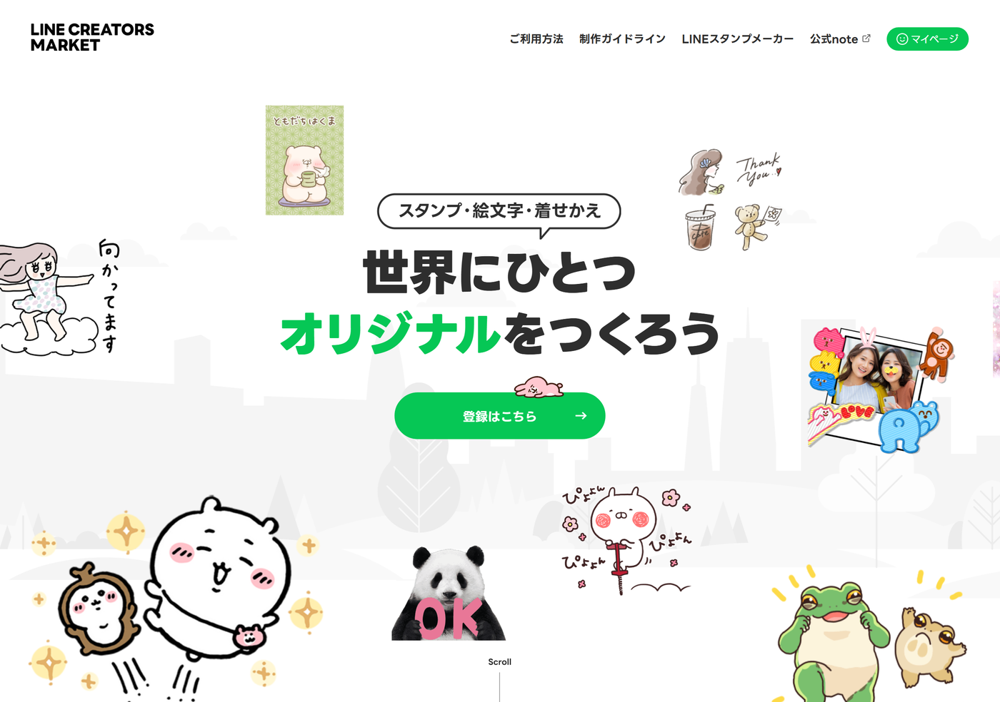
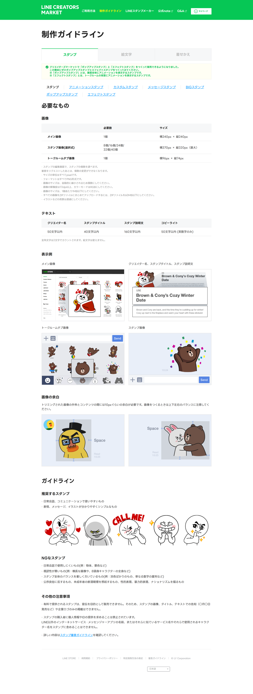
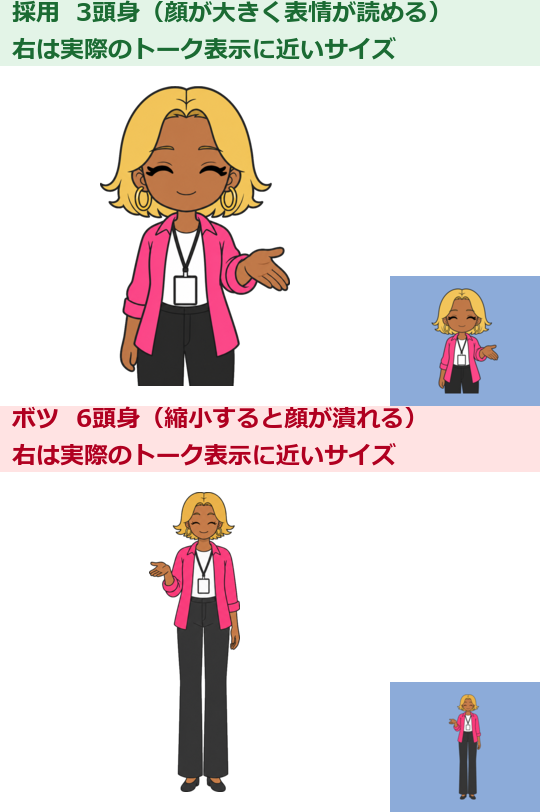
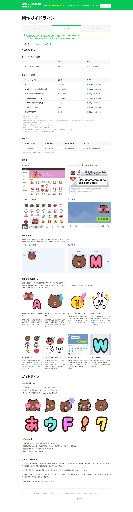

先に読んでください
LINE Creators Marketの仕様（画像サイズ・枚数・文字数・価格・分配金・AI利用ルール）は
変更される可能性があります。本文中の数値は
2026年7月30日時点で公式ガイドラインに
記載されていた内容 です。申請前に必ず
公式ガイドライン で最新の仕様を確認してください。
3,554 文字 ／ 図 2 箇所
第0章 はじめに
この章でわかること
絵が描けなくてもLINEスタンプを作れる理由
生成AIが「できること」と「できないこと」の切り分け
この教材を最後まで読むと何が完成するのか
著作権・肖像権で気をつける最低ライン
作業を始める前に用意しておくもの
絵が描けなくても、スタンプは作れます
結論から書きます。
いまは、絵が描けなくてもLINEスタンプを作れます。
理由は3つあります。
画像生成AIが、キャラクターの絵を描いてくれる
ChatGPTやClaudeが、企画とセリフを一緒に考えてくれる
画像加工は、無料のツールで足りる
私自身、イラストの学校に通ったことはありません。
それでも、保育士あるある、タゴサク構文、麻雀キャラクター、ガングロコンサル、鮨職人、士業向け、AIロボット、動物キャラクター、ビジネス敬語、子育てあるある——このあたりのテーマでスタンプを企画し、制作し、申請してきました。
やってみてわかったのは、うまい絵よりも「使いたくなる場面があるか」のほうが大事だということです。
生成AIは「作業の相棒」です
生成AIは、次の3か所で強く効きます。
1. 企画
「誰が、どんな場面で使うのか」を一緒に整理してくれます。
自分だけで考えると、思いつきの30個で止まります。
AIと会話すると、80個くらい案が出て、そこから絞れます。
2. 文章
スタンプのセリフ、タイトル、説明文、SNSの投稿文。
このあたりは、AIが下書きを作って、人間が削るのが一番速いです。
3. 画像
キャラクターの絵を作ります。
ただし、ここが一番むずかしいところでもあります。
同じキャラクターを40枚ぶん、同じ顔で出し続けるのは、意外と手間がかかります。
この教材では、その手間を減らす方法を丸ごと書きます。
AIに丸投げしても売れません
ここは正直に書いておきます。
AIに「売れるLINEスタンプを作って」と頼んでも、売れるものは出てきません。
理由はシンプルです。
AIは「誰が使うか」を知らない
AIは「LINEのトーク画面でどう見えるか」を確認できない
AIは「あなたの周りにいる人の口ぐせ」を知らない
スタンプが使われる瞬間は、とても生活に近い場所にあります。
「了解」「ありがとう」「今から帰る」「ごめん寝てた」。
こういう言葉のリストは、あなたのトーク履歴のほうが正解に近いです。
だから役割分担はこうなります。
担当
内容
人間
誰に向けるか決める / セリフを選ぶ / 見え方を確認する / 出すか決める
AI
案を大量に出す / 文章を整える / 画像を描く / 単調な作業を代行する
この分担を守ると、作業時間は大きく減ります。
そして、出来上がるものの質は上がります。
この教材で完成するもの
読み終えたときに、あなたの手元には次のものが残ります。
テーマ1つ（誰に向けたスタンプか決まっている状態）
キャラクター設定シート1枚
セリフ40個のリスト（CSVで管理）
スタンプ画像40枚
メイン画像1枚、タブ画像1枚
LINE Creators Marketへの申請完了
SNS投稿文のストック
次の作品（シリーズ2作目）の企画
第11章では、Claude Codeを使ってファイル整理や画像チェックを自動化する方法も扱います。
プログラミング経験がなくても大丈夫です。
コピーして貼るだけの手順で書いています。
進め方の目安
いきなり40枚作らないでください。
これは、この教材でいちばん伝えたいことです。
おすすめの順番はこうです。
テーマを決める（30分）
キャラクター設定を書く（30分）
セリフを40個書き出す（60分）
まず4枚だけ作る スマートフォンで見る
問題なければ残り36枚を作る
加工して申請する
4枚で止めるのは、やり直しを小さくするためです。
40枚作ってから「顔が違う」「文字が小さい」と気づくと、40枚ぶんやり直しになります。
4枚なら4枚ぶんです。
著作権と肖像権について
ここは必ず読んでください。
作る前に知っておくと、リジェクト（審査で差し戻されること）をかなり減らせます。
やってはいけないこと
実在の人物に似せる（芸能人、政治家、スポーツ選手、YouTuberなど）
既存のアニメ・漫画・ゲームのキャラクターに似せる
企業のロゴ、商標、ブランド名を入れる
他人が描いたイラストを使う
拾ってきた写真をそのまま加工して使う
自分以外の人の顔写真を使う
気をつけたいこと
画像生成AIのプロンプトに、実在の作家名や作品名を入れない
「〇〇風」という指定は、特定の作品を指す場合は避ける
使う画像生成サービスの商用利用条件 を、必ず自分の目で確認する
AI利用に関するルール
LINE Creators Marketでは、申請時にAI利用について確認される項目があります。
ルールの内容や表現は変わる可能性があります。
申請前に、LINE Creators Market公式の最新ガイドラインを確認してください。
この教材では、規約の条文そのものは引用しません。
代わりに「どこを見るべきか」を各章で示します。
用意しておくもの
作業前に、これだけそろえてください。
必要なもの
備考
LINEアカウント
ふだん使っているもので大丈夫
メールアドレス
LINE Creators Marketの登録用
パソコン
画像加工と申請作業に使う
スマートフォン
見え方の確認に必須
画像生成AI
商用利用条件を確認できるもの
ChatGPT または Claude
企画・セリフ・文章用
銀行口座情報
分配金の受け取り設定に使う
スマートフォンは「あったら便利」ではなく必須です。
スタンプは、パソコンの大きな画面ではなく、スマートフォンの小さなトーク画面で使われます。
そのまま使えるプロンプト
最初の一歩として、自分の「持ちネタ」を棚卸しするプロンプトを置いておきます。
ChatGPTでもClaudeでも動きます。
あなたはLINEスタンプの企画者です。
私の情報をもとに、LINEスタンプのテーマ候補を20個出してください。
【私の情報】
- 仕事：
- 前職：
- 趣味：
- 家族構成：
- よく話す相手：
- 自分がよく使う言葉やクセ：
- まわりにいる人の職業：
【出力の条件】
- 「誰が使うか」を必ず1行で書く
- 「どんな場面で使うか」を3つ書く
- 実在人物や既存キャラクターに似せる案は出さない
- ニッチでも構わないので、具体的にする
- 表形式で出力する
【表の列】
No / テーマ / 使う人 / 使う場面3つ / 一言メモ
このプロンプトは、第2章でさらに詳しいものに差し替えます。
まずはここで肩慣らしをしてください。
よくある失敗
この段階でつまずく人は、だいたい次の3パターンです。
失敗1 完璧な企画を先に作ろうとする
企画書を1週間書いて、力が尽きます。
対策：テーマは30分で決めます。あとで変えられます。
失敗2 最初から40枚を目指す
途中で息切れします。
対策：4枚で一度止めます。
失敗3 商用利用条件を読まずに画像生成を始める
あとで全部作り直しになります。
対策：使うサービスの利用条件を先に確認します。5分で終わります。
この章のチェックリスト
LINEアカウントがある
登録用のメールアドレスを決めた
スマートフォンで確認する体制がある
使う画像生成AIを1つ決めた
そのAIの商用利用条件を自分の目で読んだ
ChatGPTまたはClaudeが使える
「まず4枚」の方針に納得した
実在人物・既存キャラクターに似せないと決めた
章のまとめ
絵が描けなくてもスタンプは作れる
AIは相棒。丸投げでは売れない
人間の担当は「誰に向けるか」と「見え方の確認」
まず4枚。40枚は後回し
商用利用条件と最新ガイドラインは自分の目で確認する
次の章では、LINEスタンプの基礎を確認します。
用語がわかると、審査でつまずく回数が減ります。
図1 トーク表示サイズでの見え方（再現図）
画像を入れる位置（未撮影）
画面 作業フォルダのエクスプローラー（またはFinder）
撮影内容 manuscript / prompts / templates などのフォルダ構成
注意 ユーザー名が含まれるパスはぼかす
6,923 文字 ／ 図 8 箇所
第1章 LINEスタンプの基礎
この章でわかること
LINEスタンプとLINE Creators Marketの関係
登録に必要なアカウント
スタンプの個数の考え方
メイン画像・タブ画像・スタンプ画像の違い
PNG形式と透過背景がなぜ必要なのか
審査、販売価格、分配金のしくみ
なぜ基礎から確認するのか
用語を知らないまま作り始めると、後半で必ず戻ります。
とくに多いのが、この3つです。
「タブ画像って何？」→ 申請画面で止まる
「透過ってどうやるの？」→ 40枚作り直し
「メイン画像は40枚のうちの1枚じゃないの？」→ 別途作り直し
先に15分だけ使って読んでください。
あとの作業が楽になります。
LINEスタンプとは何か
LINEのトーク画面で送る、イラストや文字の画像です。
文字だけのメッセージより、感情が伝わります。
そして、返信のハードルが下がります。
「了解」と打つより、「了解」のスタンプを1タップ。
このラクさが、スタンプが使われる理由です。
だから、作るときの基準はこうなります。
上手い絵かどうかではなく、1タップで送りたくなるかどうか。
LINE Creators Marketとは何か
個人がLINEスタンプを作って販売できる、LINE公式のしくみです。
ここに登録すると、次のことができます。
スタンプ画像をアップロードする
タイトルと説明文を入れる
販売価格を決める
審査に出す
販売する
売れた分の分配金を受け取る
つまり、企画から販売までを1つの管理画面で進められます。
法人でなくても、個人で登録できます。

図2 LINE Creators Market トップページ（creator.line.me/ja/）
必要なアカウント
必要なのは、次の3つです。
種類
用途
LINEアカウント
LINE Creators Marketへのログイン
メールアドレス
登録・審査通知の受け取り
銀行口座情報
分配金の受け取り設定
LINEアカウント
ふだん使っているものでログインできます。
注意点は1つ。
パソコンからログインできる状態にしておくこと。
メールアドレスとパスワードの設定、または本人確認の方法を先に確認しておくと、途中で止まりません。
メールアドレス
審査結果はメールで届きます。
迷惑メールフォルダに入ることがあるので、通知が来ない場合はそこも見てください。
銀行口座
売上が出たあとの受け取り設定です。
登録時点で必須ではありませんが、販売開始までに設定しておくと安心です。
画像を入れる位置（未撮影）
画面 LINE Creators Market のアカウント登録フォーム
撮影内容 名前・メールアドレス・国／地域の入力欄
注意 メールアドレスと本名はぼかす
スタンプの個数
スタンプは、決まった枚数の単位で申請します。
一般に案内されている単位は、次のような区切りです。
つまり「37個」のような中途半端な数では出せません。
何個で作るべきか
はじめての1作品なら、40個をおすすめします。
理由は3つです。
40個あると、日常会話の大半をカバーできる
使う人が「これ1つで足りる」と感じる
8個だと、選ばれる場面が少ない
ただし、最初から40枚完成を目指さないでください。
セリフは40個決める。画像はまず4枚。
これが挫折しない進め方です。
個数の区切りは変更される可能性があります。申請前に、LINE Creators Market公式の最新ガイドラインを確認してください。
3種類の画像
申請には、役割の違う3種類の画像が必要です。
ここを混同する人が多いので、図で整理します。
┌─────────────────────────────────────────┐
│ ① メイン画像（1枚） │
│ ストアの一覧・詳細ページで最初に見える │
│ 「表紙」にあたる画像 │
├─────────────────────────────────────────┤
│ ② タブ画像（1枚） │
│ トーク画面下のスタンプ切替タブに出る │
│ とても小さいアイコン │
├─────────────────────────────────────────┤
│ ③ スタンプ画像（8〜40枚） │
│ 実際にトークへ送られる画像 │
└─────────────────────────────────────────┘
① メイン画像
ストアで最初に目に入る画像です。
売れるかどうかに一番効きます。
ポイントは3つ。
キャラクターの顔がはっきり見える
何のスタンプかが一目でわかる
小さく表示されても潰れない
スタンプ40枚のうちの1枚を流用してもいいですが、サイズが違うので作り直しが必要です。
② タブ画像
トーク画面の下部、スタンプを切り替えるタブに表示されます。
とても小さいです。
だから、こうします。
キャラクターの顔だけ
文字は入れない（入れても読めない）
線を太めにする
ここで凝ると、ほぼ無意味になります。顔のアップが正解です。
③ スタンプ画像
本体です。8個・16個・24個・32個・40個のいずれかの枚数を用意します。
図3 LINE STORE スタンプトップ（store.line.me）
画像を入れる位置（未撮影）
画面 LINEトーク画面のスタンプ選択エリア
撮影内容 下部のタブ画像が並んでいる部分
注意 他人のトーク内容が写らないよう自分専用トークで撮影
画像サイズについて
サイズは、画像の種類ごとに違います。
次の表は、2026年7月30日時点でLINE Creators Market公式の制作ガイドラインに記載されていた数値 です。
種類
必要数
サイズ（px）
メイン画像
1個
横240 × 縦240
スタンプ画像（選択式）
8/16/24/32/40個
横370 × 縦320（最大）
トークルームタブ画像
1個
横96 × 縦74
さらに、同じページに次の条件が記載されていました。
項目
内容
ファイル形式
すべてPNG形式
縦横のピクセル数
自動的に縮小されるため偶数 にする
解像度
72dpi以上
カラーモード
RGB
1個あたりのファイルサイズ
1MB以下
ZIPでまとめる場合
ZIPファイルを60MB以下
背景
透過にする
余白
トリミングされた画像の外枠とコンテンツの間に10pxぐらいの余白が必要
見落としやすい3項目
1. 解像度72dpi以上・カラーモードRGB
画像生成AIで作った画像は、たいていこの条件を満たしています。
ただし、印刷用の設定（CMYK）で書き出すと引っかかります。
編集ソフトで「RGB」を選んでください。
2. 1個あたり1MB以下
高解像度で生成した画像をそのまま入れると、超えることがあります。
第11章の検証スクリプトで自動チェックできます。
3. 余白は10pxぐらい
「余白を残す」ではなく、具体的な数値が示されています。
370×320の画像なら、上下左右に10px程度です。
キャラクターを端まで大きく描かないでください。
重要 ：上記は2026年7月30日時点の記載内容です。仕様は変更される可能性があります。申請前に必ずLINE Creators Market公式の最新ガイドラインで数値を確認してください。
この教材では、サイズの数値をスクリプトの設定部分にまとめています。
仕様が変わったら、1か所だけ書き換えれば済むようにしています（第11章・scripts/validate_images.py）。

図4 スタンプ制作ガイドライン（creator.line.me/ja/guideline/sticker/）
PNG形式とは
画像の保存形式のひとつです。
写真でよく使うJPEG（ジェイペグ）との違いは、次の2点です。
項目
PNG
JPEG
背景の透明
できる
できない
線や文字のにじみ
出にくい
出やすい
スタンプでは、この2点が決定的です。
だからPNGを使います。
保存するときの注意
画像編集ソフトで「書き出し」や「エクスポート」を選び、形式でPNGを選びます。
「名前を変えるだけ」ではPNGになりません。
stamp_001.jpg を stamp_001.png にリネームしても、中身はJPEGのままです。
これは審査で弾かれる原因になります。
透過背景とは
キャラクターの周りが「透明」になっている状態です。
LINEのトーク画面は、背景を自由に変えられます。
黒っぽい背景、写真の背景、テーマカラー。いろいろあります。
背景が白いままだと、こうなります。
【背景が白いスタンプ】
┌──────────┐
│□□□□□□│ ← 白い四角がそのまま出る
│□ キャラ □│
│□□□□□□│
└──────────┘
【透過されたスタンプ】
キャラ ← キャラクターだけが浮いて見える
暗い背景のトークで白い四角が出ると、かなり浮きます。
だから透過は必須です。
透過のやり方は第6章で扱います。
審査について
申請すると、LINEによる審査があります。
審査で見られるのは、おおまかに次の3つです。
画像の仕様（サイズ、形式、透過、余白）
権利の問題（著作権、商標、肖像権）
内容（公序良俗、説明文との一致）
審査にかかる期間
日数は状況によって変わります。
ここで具体的な日数を書くと嘘になるので書きません。
審査状況と目安については、LINE Creators Marketの管理画面と公式ガイドラインを確認してください。
リジェクトについて
審査で差し戻されることを「リジェクト」と呼びます。
リジェクトは失敗ではありません。
修正指示です。
理由が書かれて返ってくるので、直して再申請します。
私も何度もリジェクトを受けています。第8章で対応方法をまとめます。
画像を入れる位置（未撮影）
画面 LINE Creators Market の管理画面「アイテム管理」
撮影内容 審査ステータスの表示部分（申請中／リジェクト／販売中など）
注意 他作品のタイトルや個人情報はぼかす
販売価格
価格は、決められた選択肢から選びます。
価格帯の選択肢や通貨の扱いは変更される可能性があるため、具体的な金額は書きません。
選べる価格帯は、申請画面とLINE Creators Market公式ガイドラインで確認してください。
価格の考え方
1作目は、選べるうちで一番安い価格帯 をおすすめします。
理由は3つです。
買う側の心理的ハードルが下がる
まず「使われる」ことを優先したい
レビューや反応が早く得られる
高い価格帯は、シリーズが育ってファンがついてからでも遅くありません。
分配金について
売れると、売上の一部がクリエイターに分配されます。
分配の割合、支払いの下限額、支払いタイミング、税金の扱い。
これらはすべて変更される可能性があります。
推測で数字を書くのは危険なので書きません。
分配金の条件は、LINE Creators Marketの公式ガイドラインと管理画面の「送金」関連ページで確認してください。
現実的な期待値の話
ここは正直に書きます。
1作目が大きく売れることは、まずありません。
理由は単純で、あなたのスタンプの存在を誰も知らないからです。
だから、1作目の目的はこう置いてください。
1作目の目的は、売上ではなく「完成させて、流れを覚えること」。
流れを覚えると、2作目は3分の1の時間で作れます。
シリーズが増えると、目に触れる機会も増えます。
実例：私が最初に確認したこと
初めて申請したとき、私がつまずいたのは仕様の部分でした。
具体的にはこの3つです。
1. メイン画像を用意していなかった
スタンプ40枚を作り終えて、申請画面を開いて気づきました。
「メイン画像」と「タブ画像」の欄が空いている。
40枚のうちの1枚を使えばいいと思っていたら、サイズが違いました。
→ 対策：最初からメイン画像とタブ画像を含めて42枚と数える。
2. 透過したつもりで透過されていなかった
背景を白く塗りつぶしただけの状態でした。
見た目では気づけません。
→ 対策：暗い色の背景に画像を重ねて確認する。 （第6章で手順を書きます）
3. 保育士あるあるで、園名や制服を具体的に描きすぎた
特定の施設が想像できる要素は、権利面のリスクになります。
→ 対策：職業は表現するが、実在する組織を特定できる要素は入れない。
エプロン、名札の形、色。このくらいで職業は十分伝わります。
そのまま使えるプロンプト
自分が使う環境の仕様を、チェックリストの形に落とすプロンプトです。
公式ガイドラインの内容を自分でコピーして貼る のがポイントです。
AIに数値を推測させてはいけません。
あなたはLINEスタンプ制作の進行管理者です。
以下に、私がLINE Creators Market公式ガイドラインから
コピーした仕様情報を貼ります。
この内容だけを根拠に、申請前チェックリストを作ってください。
貼った情報に書かれていないことは、推測して補わないでください。
書かれていない項目は「公式で要確認」と明記してください。
【貼り付けた公式情報】
（ここに公式ガイドラインの該当箇所を貼る）
【出力の条件】
- チェックボックス形式（- [ ]）
- 「スタンプ画像」「メイン画像」「タブ画像」で分けて出力
- 各項目に、確認方法を1行添える
- 数値は貼った情報のとおりに書く
よくある失敗
失敗1 JPEGをリネームしてPNGだと思い込む
拡張子を変えても中身は変わりません。
対策：編集ソフトの「PNGで書き出し」を使う。
失敗2 メイン画像とタブ画像を忘れる
申請直前で発覚します。
対策：作業リストに最初から入れる。42枚として数える。
失敗3 スタンプの個数を中途半端にする
37個では申請できません。
対策：セリフを40個作り、そこから使える分だけ選ぶ。
失敗4 規約や価格を人のブログ情報だけで判断する
情報が古いことがあります。
対策：必ず公式ガイドラインを開く。
失敗5 パソコンからLINEにログインできない
申請作業がそこで止まります。
対策：作業日の前に、ログインできるか確認する。
この章のチェックリスト
LINE Creators Marketが何をする場所か説明できる
パソコンからLINEにログインできることを確認した
スタンプ画像・メイン画像・タブ画像の違いがわかった
必要枚数は「スタンプ40枚 + メイン1枚 + タブ1枚」と理解した
PNGと透過が必要な理由がわかった
公式ガイドラインのページをブックマークした
画像サイズの数値を公式で確認してメモした
価格帯の選択肢を公式で確認した
リジェクトは修正指示だと理解した
章のまとめ
LINE Creators Marketは、企画から販売まで進められる公式のしくみ
必要な画像は3種類。メイン画像とタブ画像を忘れやすい
PNGと透過は必須。リネームでは変換されない
仕様・価格・分配金は変わる。数値は必ず公式で確認する
1作目の目的は売上ではなく「完成させること」
次の章では、テーマの決め方に入ります。
ここが作品の成否を一番左右します。
図5 スタンプ制作ガイドライン（creator.line.me/ja/guideline/sticker/）
画像を入れる位置（未撮影）
画面 画像編集ソフトの「PNG形式で書き出し」ダイアログ
撮影内容 形式選択でPNGが選ばれている状態
注意 保存先パスにユーザー名が入る場合はぼかす
6,752 文字 ／ 図 4 箇所
第2章 売れるテーマの決め方
この章でわかること
「誰が使うか」を先に決める理由
テーマの型8種類（日常会話・職業特化・趣味特化など）
競合の確認方法と検索キーワードの調べ方
ニッチを狙う意味
シリーズ展開しやすいテーマの見分け方
5段階評価のテーマ評価表
なぜテーマから始めるのか
結論。
テーマを間違えると、絵がうまくても使われません。
スタンプが使われるのは、こういう瞬間です。
部下から報告が来た。「了解」と返したい
保育園の連絡帳に返信する。やわらかく伝えたい
麻雀の対局後、グループLINEで「ロン！」と騒ぎたい
どれも、特定の人が、特定の場面で 使っています。
「みんなが使える汎用スタンプ」は、誰の特定の場面にも刺さりません。
だから、テーマ選びはこの1問から始めます。
このスタンプを、誰が、どのトークで送るのか。
ステップ1 「誰が使うか」を1行で書く
テーマより先に、使う人を書きます。
悪い例と良い例を並べます。
悪い例
良い例
女性向け
3歳児クラスの担任をしている保育士
会社員向け
部下を10人持つ40代の営業マネージャー
かわいい動物
犬を飼っていて毎日散歩の写真を送る人
麻雀好き
週1で仲間と雀荘に行く社会人グループ
右側は、顔が浮かびます。
顔が浮かぶと、セリフが自動で決まります。
「今日の連絡帳、書きました」
「その案件、私が引き取ります」
「今日も元気に走りました」
「今週も打つ？」
このくらい具体的でいいです。
1行テンプレート
次の形で書いてください。
【使う人】〇〇な人（年齢感・職業・立場）
【使うトーク】誰とのトークか（同僚 / 家族 / 趣味仲間 / 顧客）
【使う場面】3つ書く
これが埋まらないテーマは、まだ考えが浅いということです。
ステップ2 テーマの型を知る
テーマは、大きく8つの型に分けられます。
自分の候補がどの型かを知ると、強みと弱みが見えます。
型1 日常会話型
「了解」「ありがとう」「おつかれ」など、誰でも使う言葉。
強み：使用頻度が最高。毎日使われる
弱み：競合が最も多い。埋もれやすい
勝ち方：キャラクターの個性で差をつける
型2 職業特化型
保育士、看護師、ITエンジニア、士業、飲食店、美容師など。
強み：共感が強い。「これ私だ」と言われる
弱み：使う相手が同業に限られる
勝ち方：その職業の「あるある」を正確に書く
私が保育士あるあるを作ったときも、士業向けを作ったときも、ここが一番効きました。
現場の言葉を1つ入れるだけで、反応が変わります。
型3 趣味特化型
麻雀、ゴルフ、釣り、キャンプ、推し活、ゲームなど。
強み：グループLINEで連投される
弱み：用語がわからない人には響かない
勝ち方：グループの「呼びかけ」を入れる（例：今週打つ？）
麻雀キャラクターを作ったときは、対局中よりも待ち合わせの連絡 で使えるセリフが強いと気づきました。
型4 家族向け
夫婦、子育て、親への連絡、祖父母から孫へ。
強み：毎日使う。年齢層が広い
弱み：やさしいトーンが求められ、個性を出しにくい
勝ち方：家庭内の定型連絡を拾う（今から帰る / 買い物ある？）
型5 方言
関西、博多、名古屋、東北、沖縄、そして地域名を出した地元ネタ。
強み：地元の人が身内に送りたくなる。愛着が強い
弱み：ネイティブ以外が作ると違和感が出る
勝ち方：自分か家族の出身地に限定する
方言は、間違えると一発で見抜かれます。
自信がない地域は避けたほうが安全です。
型6 敬語
ビジネス敬語、取引先とのやりとり、社内報告。
強み：仕事で毎日使う。使用頻度が高い
弱み：くだけた絵柄と相性が悪い
勝ち方：文字を読みやすく、絵は控えめにする
ビジネス敬語スタンプを作ったときの学びはこれです。
敬語系は「絵より文字」。文字が読めれば勝てます。
型7 季節イベント
正月、バレンタイン、夏、ハロウィン、クリスマス、年末年始。
強み：時期が来ると検索される
弱み：使われる期間が短い
勝ち方：本編シリーズの派生として出す
1作目にはおすすめしません。シリーズ2作目以降で使う型です。
型8 ニッチ市場
例：ガングロコンサル、鮨職人、AIロボット、タゴサク構文のような構文ネタ。
強み：競合がほぼいない。刺さる人には強く刺さる
弱み：母数が小さい
勝ち方：SNSで語れるネタにする
ニッチの本当の価値は、売上より「話題性」です。
「こんなスタンプ作った」と投稿したときに、説明したくなるかどうか。
ここが分かれ目です。
ステップ3 競合を確認する
必ずやってください。5分で終わります。
確認手順
スマートフォンでLINEアプリを開く
「スタンプ」または「スタンプショップ」を開く
検索欄に、自分のテーマの言葉を入れる
- 例：「保育士」「麻雀」「敬語」「エンジニア」
出てきた作品を上から10件見る
次の4点をメモする
見る点
メモする内容
件数
何件くらい出てくるか（多い / 少ない）
絵柄
ゆるい系？リアル系？文字中心？
セリフ
どんな言葉が入っているか
空き
誰も作っていない切り口はあるか
画像を入れる位置（未撮影）
画面 LINEアプリ内のスタンプ検索結果
撮影内容 テーマ名（例：保育士）で検索した一覧
注意 他クリエイターの作品名が写るため、必要に応じてぼかす
競合が多いときの判断
「多いから諦める」ではありません。
多い＝需要がある という証拠です。
やることは、切り口をずらすことです。
例：「保育士」で検索したら大量に出てきた場合
そのまま作る → 埋もれる
「3歳児クラス担任」に絞る → 刺さる
「保育士の連絡帳返信」に絞る → もっと刺さる
絞ると母数は減ります。
でも、「私のためのスタンプだ」と思ってもらえます。
競合が少ないときの判断
これも手放しで喜べません。
「少ない＝誰も欲しがっていない」場合があります。
判断基準はこれです。
そのテーマの人が、LINEで毎日誰かとやりとりしているか。
やりとりがなければ、スタンプは使われません。
ステップ4 検索キーワードを考える
買う人は、検索して探します。
だから、タイトルに入る言葉を先に決めておきます。
キーワードの探し方
LINEのスタンプ検索欄に、テーマの言葉を途中まで入れる
出てくる候補（サジェスト）を見る
その候補が、実際に使われている言葉
例：「保育」と入れて出てくる候補を見る。
「保育士」「保育園」「保育実習」など、実際の需要が見えます。
キーワードの使い方
タイトルに、2〜3語 入れます。
良い例：保育士さんの毎日スタンプ
良い例：麻雀仲間に送るスタンプ
悪い例：かわいい面白い便利な使える毎日スタンプ人気
悪い例のような詰め込みは、審査でも読者にも嫌われます。
無関係なキーワードを入れるのは避けてください。
ステップ5 シリーズ展開しやすいか確認する
1作品で終わらせないのが、この教材の方針です。
シリーズにしやすいテーマには、共通点があります。
シリーズ化しやすいテーマの条件
キャラクターが1体で成立する
セリフの型を変えれば別作品になる（敬語版 / 日常版 / 季節版）
対象を広げられる（保育士 → 幼稚園教諭 → 学童スタッフ）
「動く版」を作ったとき、動かす意味がある
SNSで語れるネタがある
3つ以上当てはまれば、シリーズにできます。
シリーズ化しにくい例
1回しか使わないネタ（一発ギャグ、時事ネタ）
キャラクターが複数必要な設定（登場人物が5人など）
特定の年だけ通じる話題
実例：8テーマの評価
私が実際に企画してきたテーマを、この章の基準で並べてみます。
数字は評価軸の考え方を見せるための整理であり、売上を示すものではありません。
実例1 保育士あるある
使う人：保育園で働く保育士
使うトーク：同僚とのグループLINE
強み：共感が非常に強い。「わかる」で拡散する
学び：現場の言葉（延長、午睡、連絡帳）を1つ入れると刺さり方が変わる
注意：実在の園を特定できる要素は入れない
実例2 麻雀
使う人：週1で打つ社会人グループ
使うトーク：麻雀仲間のグループLINE
強み：グループ連投されやすい
学び：対局中の用語より「集合の連絡」が実用的
注意：賭博を想起させる表現は避ける
実例3 ITエンジニア
使う人：開発チームのメンバー
使うトーク：社内チャット代わりのLINE
強み：定型連絡が多い（確認します / 対応中 / リリースします）
学び：カタカナ用語は短く。長いと文字が小さくなる
注意：特定企業のツール名やロゴは入れない
実例4 士業
使う人：税理士、社労士、行政書士などの事務所スタッフ
使うトーク：顧客対応、所内連絡
強み：丁寧な言葉が必要な場面が多い
学び：敬語の正確さが命。誤用があると信頼を落とす
注意：資格名の使い方に注意する
実例5 子育てあるある
使う人：未就学児を育てている親
使うトーク：夫婦間、ママ友・パパ友
強み：毎日使う。共感が広い
学び：疲れているときに送るので、明るすぎない表現も必要
注意：しつけや育児方針を断定する表現は避ける
実例6 飲食店
使う人：店舗スタッフ、シフト連絡をする店長
使うトーク：スタッフグループLINE
強み：シフト調整の定型文が多い
学び：「入れます」「代わります」「今日ヘルプ行けます」が実用的
注意：特定チェーンを想起させる制服・ロゴは入れない
実例7 地方の方言
使う人：その地域の出身者
使うトーク：家族、地元の友人
強み：愛着が強く、身内に送りたくなる
学び：語尾だけでなくイントネーションが伝わる書き方を工夫する
注意：出身地以外の方言は手を出さない
実例8 ビジネス敬語
使う人：社会人全般
使うトーク：上司、取引先
強み：使用頻度が高い
学び：絵は控えめ、文字を大きく。読めることが最優先
注意：くだけた絵柄と混ぜない
テーマ評価表（そのまま使えます）
候補を3〜5個出して、この表で採点してください。
各項目を5段階（1〜5） で記入します。
評価項目
見る内容
5点の状態
使用頻度
週にどれくらい使われるか
毎日使う
共感性
「これ私だ」と思われるか
思わず人に見せたくなる
競合の多さ
ライバルの数（少ないほど高得点 ）
ほぼ見当たらない
シリーズ化
2作目以降を作れるか
10作品まで見える
キャラとの相性
1体のキャラで表現できるか
無理なく全セリフを表現できる
SNSで紹介しやすいか
投稿したとき語れるか
制作過程だけで話が続く
記入用テンプレート
【テーマ候補A】
テーマ名：
使う人：
使うトーク：
使用頻度 ： □1 □2 □3 □4 □5
共感性 ： □1 □2 □3 □4 □5
競合の少なさ ： □1 □2 □3 □4 □5
シリーズ化 ： □1 □2 □3 □4 □5
キャラとの相性 ： □1 □2 □3 □4 □5
SNS紹介しやすさ ： □1 □2 □3 □4 □5
合計： /30
メモ：
判断の目安
合計点
判断
24点以上
すぐ着手してよい
18〜23点
切り口を1段絞れば良くなる
17点以下
別候補を検討する
低い項目が「競合の少なさ」だけなら、絞り込みで解決できます。
低い項目が「使用頻度」なら、テーマ自体を変えたほうが早いです。
そのまま使えるプロンプト
プロンプト1 テーマ候補を出す
あなたはLINEスタンプの企画者です。
私の情報から、LINEスタンプのテーマ候補を15個提案してください。
【私の情報】
- 現在の仕事：
- 過去の仕事：
- 趣味：
- 家族構成：
- 出身地（方言を使う場合）：
- よくLINEする相手：
- 自分やまわりの口ぐせ：
【制約】
- 実在人物・既存キャラクター・企業ブランドに似せる案は出さない
- 「みんなが使える汎用」のような曖昧な案は出さない
- ニッチでもよいので、使う人が具体的に想像できる案にする
【各案に必ず含める項目】
1. テーマ名
2. 使う人（年齢感・職業・立場を1行で）
3. 使うトーク（誰とのトークか）
4. 使う場面3つ
5. テーマの型（日常会話 / 職業特化 / 趣味特化 / 家族 / 方言 / 敬語 / 季節 / ニッチ）
6. シリーズ展開のアイデア2つ
【出力形式】
表形式。最後に「私のおすすめ上位3件とその理由」を書く。
プロンプト2 テーマを絞り込む
以下のテーマについて、ターゲットをもっと具体的に絞る案を5つ出してください。
【現在のテーマ】
（例：保育士向けスタンプ）
【出力の条件】
- 絞り方は「職種の細分化」「場面の限定」「相手の限定」「時期の限定」「立場の限定」から選ぶ
- 各案について、想定される使用場面を3つ書く
- 各案について、母数が小さくなるリスクも1行で書く
- 最後に、シリーズ展開しやすい案を1つ推薦する
プロンプト3 テーマを採点させる
以下のテーマ候補を、6つの評価項目で5段階採点してください。
【評価項目】
1. 使用頻度（週の使用回数の想定）
2. 共感性
3. 競合の少なさ
4. シリーズ化のしやすさ
5. キャラクター1体で表現できるか
6. SNSで紹介しやすいか
【候補】
A：
B：
C：
【出力の条件】
- 表形式で採点し、合計点を出す
- 各点数の理由を1行で書く
- 実際の市場データは持っていないので、
推測である点を明記する
- 最後に「私が最初に作るべき1つ」を理由付きで示す
注意 ：AIは実際の販売データを持っていません。
AIの採点は、あくまで考えを整理するための材料です。
最終判断は、自分でLINEのスタンプ検索を見て決めてください。
よくある失敗
失敗1 ターゲットが「みんな」になっている
誰にも刺さりません。
対策：1行テンプレートを埋める。埋まらなければ絞り込みが足りない。
失敗2 自分が好きなだけのテーマにする
好きは大事ですが、それだけでは使われません。
対策：「毎日LINEで使う場面があるか」を確認する。
失敗3 競合を見ないで作り始める
同じ切り口の作品が既に大量にある、という事故が起きます。
対策：作る前に5分でスタンプ検索する。
失敗4 知らない地域の方言を使う
ネイティブに違和感を持たれます。
対策：自分か家族の出身地に限る。
失敗5 季節ネタから始める
使われる期間が短く、労力が回収しにくいです。
対策：1作目は通年使えるテーマにする。
失敗6 シリーズ化を考えずに決める
2作目でキャラクターを作り直すことになります。
対策：評価表の「シリーズ化」を必ず採点する。
この章のチェックリスト
「使う人」を1行で書いた
「使うトーク」を書いた
「使う場面」を3つ書いた
テーマの型を特定した
LINEのスタンプ検索で競合10件を見た
検索候補（サジェスト）から使う言葉を2〜3語決めた
テーマ評価表で候補を採点した
合計18点以上のテーマを1つ選んだ
シリーズ2作目のアイデアを1つ書いた
実在人物・既存作品に寄せていないことを確認した
章のまとめ
テーマより先に「誰が使うか」を1行で決める
型は8つ。自分の候補の強みと弱みを把握する
競合は必ず見る。多いのは需要の証拠。切り口をずらす
検索候補から、実際に使われている言葉を拾う
評価表で採点し、18点以上を選ぶ
1作目は通年使えるテーマにする
次の章では、キャラクターを設計します。
ここを丁寧にやると、画像生成の失敗が激減します。
画像を入れる位置（未撮影）
画面 LINEスタンプ検索欄のサジェスト（入力候補）表示
撮影内容 「保育」と入力した時点で出る候補一覧
注意 検索履歴が写らないよう履歴を消してから撮影
画像を入れる位置（未撮影）
画面 テーマ評価表を記入したメモアプリまたはスプレッドシート
撮影内容 候補3件を採点し、合計点が入っている状態
注意 実在の企業名・個人名が入る場合はぼかす
画像を入れる位置（未撮影）
画面 ChatGPTまたはClaudeでテーマ候補プロンプトを実行した結果
撮影内容 表形式でテーマ候補が並んでいる出力
注意 アカウント名・メールアドレスはぼかす
6,942 文字 ／ 図 3 箇所
第3章 キャラクター設計
この章でわかること
キャラクター設定で決めるべき14項目
「毎回顔が変わる問題」を防ぐ方法
頭身・線の太さ・色数が小さい画面でどう効くか
禁止事項を先に決める理由
キャラクター設定シートの書き方
実例：AI活用コンサルタント「アイナ」の設計一式
なぜ設定を先に文章で書くのか
結論。
設定を文章にしておかないと、40枚のあいだに顔が変わります。
画像生成AIは、毎回ゼロから絵を描きます。
前回の絵を覚えていません（覚えているように見えても、記憶ではなく参照です）。
だから、こうなります。
1枚目：髪が肩まで
5枚目：髪が短い
12枚目：肌の色が違う
20枚目：年齢が10歳上がっている
こうなると、40枚が「同じシリーズ」に見えません。
審査で「類似性がない」と判断される可能性もありますが、それ以前に、買う人が違和感を持ちます。
対策は1つです。
キャラクター設定を、毎回コピーして貼る文章として持つ。
これだけで、ブレは激減します。
キャラクター設定で決める14項目
順番に決めていきます。
上から埋めるだけで設定が完成します。
1. 名前
キャラクターに名前をつけます。
理由は2つ。
実在の人物名は避けてください。
有名人と同じ名前も避けます。
2. 性格
3語で書きます。
例：陽気 / 面倒見がいい / せっかち
3語あると、セリフの口調が自動で決まります。
3. 年齢感
「20代後半」「30代前半」のような幅で書きます。
具体的な年齢よりも「見た目の年齢感」が大事 です。
画像生成AIには年齢感のほうが伝わります。
4. 職業
スタンプの型が「職業特化型」なら、ここが核になります。
職業がわかる小物を1つ決めておくと便利です。
例：保育士ならエプロン、鮨職人なら白衣と鉢巻、コンサルならノートパソコン。
5. 服装
上・下・小物の3つに分けて決めます。
毎回同じ服 にします。
服が変わると、別人に見えます。
6. 髪型
長さ、色、前髪、結び方まで決めます。
ここが一番ブレやすい項目です。
例：「肩までのゆるいウェーブ、明るい茶色、前髪は流している」
7. 色（カラーパレット）
肌、髪、服、アクセントの4色を決めます。
色コード（#から始まる6桁）まで決めると、加工時に迷いません。
小さい画面で見るので、色は濃いめにします。
薄い色は、スマートフォンで消えます。
8. 表情のバリエーション
40枚ぶんの表情を、先にリスト化します。
最低これだけあれば足ります。
笑顔（大）
笑顔（小）
驚き
困り顔
泣き
怒り（軽め）
真剣
眠い
得意げ
応援
9. 頭身
頭何個ぶんの身長か、という指標です。
頭身
見え方
スタンプ向き
2頭身
顔が大きく、体が小さい
◎ とても向く
3頭身
バランス型
◎ 向く
5頭身以上
リアル寄り。顔が小さい
△ 顔が潰れる
スタンプはとても小さく表示されます。
顔が大きいほうが有利 です。
迷ったら2〜3頭身にしてください。
10. 線の太さ
太めにします。
理由は、縮小したときに線が消えるからです。
目安：370×320pxの画像で、輪郭線が3〜5px程度の太さに見えること。
11. 背景
スタンプ画像の背景は透過 です。
キャラクターの後ろに何も描きません。
ただし、メイン画像だけは背景を入れることがあります（第6章）。
12. 世界観
キャラクターがどんな場所にいるか、という設定です。
スタンプには背景を描きませんが、世界観を決めると小物の選び方が安定します。
例：「都心のコワーキングスペースで働いている」
13. 話し方
セリフの口調を決めます。
語尾（〜だよ / 〜です / 〜っしょ）
一人称（私 / 僕 / オレ / アタシ）
テンション（高い / 落ち着いている）
よく使う言葉（口ぐせ）
第4章のセリフ作成が、ここで決まります。
14. 禁止事項
先に決めるのが重要です。
画像生成AIに毎回「これは描かない」と伝えるためです。
最低限、次を入れます。
実在人物に似せない
既存アニメ・漫画・ゲームのキャラクターに似せない
企業ロゴ、商標、ブランド名を入れない
過度な露出、暴力、差別的表現を入れない
背景を描かない（スタンプ画像の場合）
画像内に読めない文字（意味不明な文字列）を描かない
「毎回顔が変わる問題」を防ぐ5つの方法
これは実務で一番苦労するところです。
有効だった順に書きます。
方法1 設定文を毎回まるごと貼る（最重要）
短く要約しないでください。
「陽気なコンサルの女性」だけでは、毎回別人が出ます。
30行の設定文を、毎回コピーして先頭に貼ります。
面倒に見えますが、これが一番速いです。
方法2 基準画像（キャラクターシート）を先に作る
最初に1枚、正面・上半身の絵を作ります。
これを「基準画像」と呼びます。
以降は、その画像を参照させながら生成します。
画像を参照できる機能があるサービスなら、必ず使ってください。
方法3 変えてよい項目と変えてはいけない項目を分ける
【固定】髪型・髪色・肌の色・服・小物・頭身・線の太さ・画風
【変える】表情・ポーズ・手の位置・体の向き
生成のたびに、この区別を明示します。
方法4 1回の生成で複数ポーズを出す
1枚ずつ40回作ると、40回ブレます。
1回の生成で4〜9ポーズを出すと、その中では顔がそろいます。
第5章で「9分割ラフ案」の方法を書きます。
方法5 うまくいったプロンプトを保存する
これが後で一番効きます。
prompts/ フォルダに、実際に使った文章をそのまま保存します。
シリーズ2作目のとき、そのまま使えます。
キャラクター設定シート（記入用）
そのままコピーして使えます。
記入済みのファイルは templates/character_sheet.md にも置いています。
【キャラクター設定シート】
■ 基本
名前 ：
読み方 ：
性別／設計：
年齢感 ：
職業 ：
一言紹介 ：
■ 性格（3語）
1.
2.
3.
■ 外見
頭身 ：
体型 ：
肌の色 ：（色コード）
髪型 ：
髪の色 ：（色コード）
目の形 ：
特徴的な要素：
■ 服装（毎回固定）
上 ：
下 ：
靴 ：
小物1 ：
小物2 ：
■ カラーパレット
肌 ：#
髪 ：#
服（メイン）：#
アクセント ：#
■ 画風
線の太さ ：
塗り ：
影 ：
輪郭 ：
■ 表情バリエーション（10種）
1. 6.
2. 7.
3. 8.
4. 9.
5. 10.
■ 話し方
一人称 ：
語尾 ：
テンション：
口ぐせ ：
使わない言葉：
■ 世界観
活動場所 ：
時代設定 ：
一緒に出る要素：
■ 禁止事項
1. 実在人物に似せない
2. 既存キャラクターに似せない
3. 企業ロゴ・商標を入れない
4. 背景を描かない（スタンプ画像）
5. 読めない文字を描かない
6.
7.
■ 固定／可変
固定する要素：
変えてよい要素：
実例：AI活用コンサルタント「アイナ」
この教材の実例キャラクターを、いま設計します。
お題はこれです。
AIを使って仕事を効率化する、少しガングロで陽気なビジネスコンサルタント
実在の人物には似せません。
完全な架空キャラクターとして作ります。
私が過去に「ガングロコンサル」を企画したときの考え方をベースにしています。
なぜこのキャラクターが成立するのか
3つの要素が組み合わさっているからです。
陽気さ （親しみやすい）AIに強い （今っぽい）見た目のインパクト （記憶に残る）
コンサルタントは、ふつうに描くとスーツの真面目な人になります。
真面目な人は、印象に残りません。
そこに「陽気」と「日焼けした肌」を足すと、一気に覚えられます。
そして、セリフのトーンが決まります。
「それAIでいけるっしょ！」
この一言が言えるキャラクターであれば成功です。
設定シート（記入済み）
【キャラクター設定シート】
■ 基本
名前 ：アイナ
読み方 ：あいな
性別／設計：女性として設計
年齢感 ：20代後半
職業 ：AI活用コンサルタント（フリーランス）
一言紹介 ：どんな面倒な仕事も「それAIでいけるっしょ」で片づける陽気なコンサル
■ 性格（3語）
1. 陽気（テンションが高く、場を明るくする）
2. 面倒見がいい（相手の仕事を先に片づけようとする）
3. せっかち（結論を先に言う。前置きが短い）
■ 外見
頭身 ：3頭身（顔を大きく、小さい画面でも表情が読める）
体型 ：小柄でがっしりしていない。動きのある姿勢
肌の色 ：日焼けした健康的なブラウン（#A9714B）
髪型 ：肩上のボブ。毛先が外はね。前髪はセンターで分けて額を出す
髪の色 ：明るいゴールドブロンド（#E8C468）
目の形 ：大きめのアーモンド型。まつげは太い線で2本だけ強調
特徴的な要素：ゴールドの大きめフープイヤリング（左右）
■ 服装（毎回固定）
上 ：白のオーバーサイズTシャツ + ネオンピンクのオープンシャツ（羽織り）
下 ：黒のワイドパンツ
靴 ：白のスニーカー（描かれないことが多い）
小物1 ：ノートパソコン（ロゴなし・無地のシルバー）
小物2 ：首から下げたIDカードホルダー（文字は書かない）
■ カラーパレット
肌 ：#A9714B
髪 ：#E8C468
服（メイン）：#FFFFFF（白T）
アクセント ：#FF4FA3（ネオンピンク）
線 ：#2B2B2B（真っ黒より少し柔らかい）
■ 画風
線の太さ ：太め（縮小しても消えない）
塗り ：ベタ塗り。グラデーションは使わない
影 ：1段のみ。色を1トーン濃くするだけ
輪郭 ：全体を同じ太さの線で囲む
■ 表情バリエーション（10種）
1. 満面の笑み（歯を見せる） 6. 泣き（涙は大きめの粒2つ）
2. にっこり（口を閉じた笑顔） 7. 真剣（口を横一直線）
3. 驚き（目を丸く、口を開く） 8. 眠い（半目、口は小さく)
4. 困り顔（眉を八の字） 9. 得意げ（片目を閉じる）
5. 軽い怒り（頬をふくらます） 10. 応援（両手を上げる）
■ 話し方
一人称 ：アタシ
語尾 ：〜っしょ / 〜だよ / 〜ね
テンション：高い（ただし相手を否定しない）
口ぐせ ：「それAIでいけるっしょ」「はい、時短！」「まかせて！」
使わない言葉：専門用語の連発、相手を下に見る言い方、断定的な否定
■ 世界観
活動場所 ：都心のコワーキングスペース
時代設定 ：現代
一緒に出る要素：ノートパソコン、スマートフォン、小型のAIロボット（相棒役）
■ 禁止事項
1. 実在人物（芸能人・インフルエンサー等）に似せない
2. 既存アニメ・漫画・ゲームのキャラクターに似せない
3. 企業ロゴ・商標・ブランド名を画像に入れない
4. スタンプ画像に背景を描かない（透過）
5. 読めない文字・意味不明な文字列を画像に描かない
6. 過度な露出を描かない
7. 特定の職業や属性を下に見る表現を使わない
■ 固定／可変
固定する要素：髪型・髪色・肌の色・イヤリング・白T・ピンクの羽織り・黒パンツ・3頭身・線の太さ・ベタ塗り
変えてよい要素：表情・ポーズ・手の位置・体の向き・持っている小物
この設定で気をつけた点
3つあります。
1. 肌の色を「日焼けした健康的なブラウン」と表現した
「ガングロ」という言葉は、そのまま画像生成AIに入れると意図と違う結果になりやすいです。
色コードで指定するほうが安定します。
そして、特定の人種や属性を戯画化する表現にならないよう、あくまで「日焼け」として扱います。
2. IDカードに文字を書かない
画像生成AIは、文字を苦手にしています。
読めない文字列が入ると、審査で指摘される可能性があります。
だから「文字は書かない」と明示します。
3. ノートパソコンを無地にした
ロゴが入ると商標の問題になります。
「ロゴなし・無地」と毎回書きます。
そのまま使えるプロンプト
プロンプト1 キャラクター設定を作る
あなたはキャラクターデザイナー兼LINEスタンプ制作者です。
以下のテーマから、LINEスタンプ用のキャラクター設定を1体作ってください。
【テーマ】
（例：AIを使って仕事を効率化する、少しガングロで陽気なビジネスコンサルタント）
【使う人】
（第2章で決めたターゲットを書く）
【必須条件】
- 実在の人物・団体に似せない、完全な架空キャラクター
- 既存のアニメ・漫画・ゲームのキャラクターに似せない
- 企業ロゴ・商標を身につけていない
- 頭身は2〜3頭身（小さい画面で表情が読める形）
- 色は濃いめ（薄い色は小さい画面で消えるため）
- 特定の人種・国籍・属性を戯画化しない
【出力する項目】
名前 / 読み方 / 年齢感 / 職業 / 一言紹介 /
性格3語 / 頭身 / 体型 / 肌の色（色コード付き） /
髪型 / 髪の色（色コード付き） / 目の形 / 特徴的な要素 /
服装（上・下・靴・小物2つ、毎回固定できる形で） /
カラーパレット4色（色コード） /
画風（線の太さ・塗り・影・輪郭） /
表情バリエーション10種 /
話し方（一人称・語尾・テンション・口ぐせ・使わない言葉） /
世界観 / 禁止事項7つ / 固定する要素と変えてよい要素
【出力形式】
そのままコピーして画像生成AIに貼れる、プレーンテキストの設定シート。
プロンプト2 設定を画像生成用に圧縮する
設定シートは長いので、画像生成AI用に整えます。
以下のキャラクター設定を、画像生成AI用のプロンプトに変換してください。
【条件】
- 見た目に関係ない情報（性格・話し方・世界観）は省く
- 色は色コードと言葉の両方で書く
- 「毎回固定する要素」を先に、「今回変える要素」を後ろに置く
- 最後に禁止事項を箇条書きで入れる
- 日本語で出力する
- 200〜300文字程度にまとめる
【キャラクター設定】
（設定シートを貼る）
プロンプト3 設定の穴を探す
以下のキャラクター設定を読み、
「画像生成のたびに絵が変わってしまう原因になりそうな箇所」を指摘してください。
【観点】
- 曖昧な表現（「かわいい」「おしゃれ」など主観的な語）
- 指定が抜けている部位（耳、手、足、眉、口の形など）
- 色の指定が言葉だけで色コードがない箇所
- 服装の指定が不十分な箇所
- 小さいサイズで見えなくなりそうな要素
【出力】
指摘 → 修正案 の形で、優先度の高い順に10個。
【キャラクター設定】
（設定シートを貼る）
よくある失敗
失敗1 設定を「かわいい女の子」だけで済ませる
毎回、別人が出てきます。
対策：14項目を全部埋める。
失敗2 色を言葉だけで指定する
「明るい茶色」の解釈が毎回変わります。
対策：色コードを決める。
失敗3 5頭身以上のリアル寄りにする
小さい画面で顔が潰れて、表情が読めません。
対策：2〜3頭身にする。
失敗4 線を細くする
上品に見えますが、縮小すると消えます。
対策：太い線にする。
失敗5 服を毎回変える
同じキャラクターに見えません。
対策：服は1パターンに固定する。
失敗6 小物にロゴや文字を入れる
商標の問題、そして文字の崩れが起きます。
対策：無地にする。「文字は描かない」と毎回書く。
失敗7 禁止事項を書かない
権利リスクのある絵が出てきます。
対策：禁止事項を設定シートに固定で持つ。
失敗8 基準画像を作らずに40枚作り始める
途中でブレに気づいて作り直しになります。
対策：まず基準画像1枚。次に4枚。
この章のチェックリスト
キャラクターに名前をつけた
性格を3語で書いた
年齢感を幅で書いた
頭身を2〜3頭身に決めた
髪型を長さ・色・前髪まで書いた
色コードを4色決めた
服装を「毎回固定」で決めた
小物を無地にした
表情バリエーションを10種リスト化した
話し方（一人称・語尾・口ぐせ）を決めた
禁止事項を最低6つ書いた
「固定する要素」と「変えてよい要素」を分けた
設定シートをファイルに保存した
基準画像を1枚作った
章のまとめ
設定は文章で持つ。毎回まるごと貼る
決めるのは14項目。曖昧な語を残さない
色は色コード。頭身は2〜3。線は太く
固定する要素と変える要素を分けて書く
禁止事項を最初から設定に含める
基準画像を1枚作ってから量産に入る
次の章では、セリフを40個作ります。
キャラクターの話し方が決まっているので、ここは一気に進みます。
画像を入れる位置（未撮影）
画面 キャラクター設定シートを記入したテキストエディタ
撮影内容 14項目が埋まっている状態
注意 ファイルパスにユーザー名が入る場合はぼかす
図6 基準画像（正面・上半身・にっこり）。以降の生成で参照用に使う
図7 並べて統一感を確認する（髪型・服装・線の太さがそろっているか）
7,174 文字 ／ 図 3 箇所
第4章 セリフ40個の作り方
この章でわかること
セリフを10カテゴリーに分ける理由と配分
読みやすい文字数の目安
重複を見つける方法
避けるべき表現
実例：AI活用コンサルタント「アイナ」のセリフ40個（完成品）
CSVで管理する形
なぜセリフを先に40個決めるのか
理由は3つあります。
1. 画像の枚数が確定する
セリフが決まらないと、何枚描くのかが決まりません。
「とりあえず描く」を始めると、あとで足りなくなります。
2. 表情とポーズが自動で決まる
「ありがと〜！」なら笑顔で手を合わせる。
「ごめん！」なら困り顔で頭を下げる。
セリフから逆算すると、画像生成プロンプトを考える時間がゼロになります。
3. カテゴリーの偏りが見える
40個書き出すと、こうなりがちです。
これは実用的ではありません。
トークでいちばん使うのは「返事」と「確認」です。
リストにすると偏りが一目でわかります。
セリフの10カテゴリーと配分
私が実際に使っている配分です。
No
カテゴリー
個数
役割
1
あいさつ
4
トークの入口。使用頻度が高い
2
返事
5
最も使われる。ここが弱いと売れない
3
感謝
3
送られて嫌な気持ちにならない
4
謝罪
3
文字だと重いので、絵で軽くする
5
確認
4
仕事系テーマでは必須
6
仕事
5
テーマ特化の中核
7
感情
5
キャラクターの魅力を出す
8
応援
4
相手に送りたくなる
9
締め
4
トークの出口。1日1回は使う
10
キャラクター固有ネタ
3
SNSで話題になる部分
合計 40
この配分にする理由
返事と確認を厚くしています。
トークの現実を考えてください。
1日のLINEで一番多いのは、「了解」と「これでいい？」です。
「うれしい！」を1日3回送る人はいません。
だから、返事5個・確認4個・締め4個で13個。
ここが実用の土台になります。
キャラクター固有ネタを3つ入れる理由
固有ネタは、使用頻度は低いです。
でも、SNSで語れます。
「それAIでいけるっしょ」というスタンプを作った、と投稿すると、そこから会話が生まれます。
3個だけ入れる。これがちょうどいい量です。
10個入れると、実用性が落ちます。
読みやすい文字数の目安
ここは実測してほしい部分です。
私の経験では、目安はこうなります。
文字数
見え方
判定
2〜5文字
大きく読める
◎
6〜8文字
読める
○
9〜12文字
やや小さい
△
13文字以上
読みにくい
×
なぜ長いと読めないのか
スタンプ画像の横幅には上限があります。
その中に、キャラクターと文字を入れます。
文字数が増えると、1文字あたりのサイズが小さくなります。
そして、スマートフォンでは文字が潰れます。
長くなってしまうときの対処
3つの方法があります。
方法1 言い切る
× 資料の作成が完了しました
○ 資料できた！
方法2 2行にする
遅くなって
ごめん！
1行の文字数を減らせます。
方法3 絵に語らせる
× ちょっと今忙しいので後で連絡します
○ あとで！（スマホを見せるポーズ）
ポーズで意味を補うと、文字を削れます。
重複を見つける方法
40個書くと、必ず重複します。
意味が同じセリフを2つ入れると、1枚ぶん損します。
重複しやすい組み合わせ
重複例
対処
「ありがとう」と「感謝します」
敬語版は別作品に回す
「了解」と「わかった」
どちらか1つ。もう1つは「OK！」に
「おつかれ」と「おつかれさま」
1つに絞る
「がんばれ」と「ファイト」
1つに絞る
「すごい」と「さすが」
ニュアンスが違えば両方OK
判定の基準
こう考えてください。
同じ場面で、どちらを送るか迷うなら重複。
迷わないなら、別のセリフです。
「ありがと〜！」と「助かった！」は、迷いません。
前者は反射的に、後者は本当に助かったときに送ります。
AIで重複を検出する
40個をAIに渡して、重複を洗い出せます。
この章の後半にプロンプトを置いています。
避けるべき表現
必ず確認してください。
審査に関わります。
避けるもの
差別的な表現（人種、国籍、性別、職業、障害、体型など）
攻撃的な表現（死ね、殺す、消えろ など）
相手を侮辱する言葉
危険な行為を勧める表現
性的な表現
特定の宗教・政治を推す表現
実在の人物・団体を指す言葉
商標・ブランド名
医療や健康について断定する表現
賭博を想起させる表現
判断に迷うとき
麻雀スタンプを作ったときに気をつけた点を書きます。
麻雀そのものは競技ですが、賭博を想起させる言葉は避けました。
「今日いくら勝った？」のような金銭のやりとりを含む表現は入れていません。
代わりに「今週打つ？」「もう一局！」のような、集まる連絡と競技の言葉にしました。
迷ったら、入れないのが早いです。
40個のうち1個を諦めるだけで、リジェクトを1回減らせます。
強めのネタを入れたいとき
キャラクター固有ネタは、少し尖らせたくなります。
そのときの基準は1つです。
送られた相手が、笑えるか。
送った本人だけが面白いネタは、使われません。
実例：AI活用コンサルタント「アイナ」のセリフ40個
第3章で設計したキャラクターのセリフです。
そのまま使ってもらって構いません。
話し方の設定を再掲します。
一人称：アタシ
語尾：〜っしょ / 〜だよ / 〜ね
テンション：高い（相手を否定しない）
口ぐせ：それAIでいけるっしょ / はい、時短！ / まかせて！
あいさつ（4個）
No
セリフ
文字数
表情
ポーズ
1
おはよ！
4
満面の笑み
片手を大きく振る
2
おつかれ！
5
にっこり
両手で小さく拍手
3
こんばんは〜
6
にっこり
軽く会釈
4
ひさしぶり！
6
驚き＋笑顔
両手を広げる
返事（5個）
No
セリフ
文字数
表情
ポーズ
5
了解っしょ！
6
得意げ
親指を立てる
6
まかせて！
5
満面の笑み
胸を叩く
7
OK！
3
にっこり
指で丸を作る
8
ちょっと待って
7
困り顔
手のひらを前に出す
9
むりかも…
5
困り顔
両手を小さく上げる
感謝（3個）
No
セリフ
文字数
表情
ポーズ
10
ありがと〜！
6
満面の笑み
両手を合わせる
11
助かった！
5
にっこり
額の汗をぬぐう
12
感謝しかない
6
にっこり（目を閉じる）
深くお辞儀
謝罪（3個）
No
セリフ
文字数
表情
ポーズ
13
ごめん！
4
困り顔
手を合わせて頭を下げる
14
遅くなってごめん
8（2行）
困り顔
走ってきて肩で息
15
アタシのミス…
7
泣き
しゃがんで小さくなる
確認（4個）
No
セリフ
文字数
表情
ポーズ
16
どう？
3
期待の目
首をかたむける
17
これで合ってる？
8（2行）
真剣
ノートパソコンを見せる
18
いつまで？
5
真剣
指を1本立てる
19
見た？
3
にっこり
スマートフォンを掲げる
仕事（5個）
No
セリフ
文字数
表情
ポーズ
20
今から会議
5
真剣
資料を抱えて歩く
21
資料できた！
6
得意げ
書類を掲げる
22
送っといた
5
にっこり
ノートパソコンを閉じる
23
対応中！
4
真剣
パソコンに向かって打つ
24
明日でもいい？
7
眠い
目をこすりながら手を上げる
感情（5個）
No
セリフ
文字数
表情
ポーズ
25
うれしい！
5
満面の笑み
飛び跳ねる
26
びっくり
4
驚き
両手を頬に当てる
27
つらい…
4
泣き
机に突っ伏す
28
ねむい
3
眠い
大きくあくび
29
やったー！
5
満面の笑み
両手を突き上げる
応援（4個）
No
セリフ
文字数
表情
ポーズ
30
がんばれ！
5
満面の笑み
両手を握って前に出す
31
いけるいける
6
得意げ
背中を押すしぐさ
32
ナイス！
4
にっこり
指を鳴らす
33
無理しないで
6
心配そう
肩に手を置くしぐさ
締め（4個）
No
セリフ
文字数
表情
ポーズ
34
お先に失礼〜
6
にっこり
かばんを持って手を振る
35
また明日
4
にっこり
小さく手を振る
36
おやすみ
4
眠い（目を閉じる）
頬に手を添える
37
今日はここまで！
8（2行）
得意げ
ノートパソコンを閉じる
キャラクター固有ネタ（3個）
No
セリフ
文字数
表情
ポーズ
38
それAIでいけるっしょ
11（2行）
得意げ
人差し指を立てて片目を閉じる
39
はい、時短！
6
満面の笑み
ストップウォッチを止めるしぐさ
40
自動化しよ？
6
にっこり
小型AIロボットを指さす
この40個を作るときに考えたこと
3点あります。
1. 「返事」を最初に固めた
一番使われるからです。
「了解っしょ！」「まかせて！」「OK！」の3つで、肯定の返事を網羅しました。
そこに「ちょっと待って」「むりかも…」を入れて、断る側も用意しました。
断るスタンプは意外と使われます。
文字で「無理です」と打つのは重いので、絵で軽くできます。
2. 長いセリフは2行にした
「それAIでいけるっしょ」は11文字です。
1行だと小さくなるので、こう分けます。
それAIで
いけるっしょ
これで1行6文字になり、読めるサイズになります。
3. 固有ネタを3個で止めた
「それAIでいけるっしょ」は、このキャラクターの看板です。
でも、毎日は使いません。
だから3個。残り37個は実用に振りました。
CSVで管理する
40個をテキストで管理すると、途中で混乱します。
CSVにすると、こうなります。
何番がどのカテゴリーか一目でわかる
画像の進捗（未着手／生成済／加工済）を管理できる
ファイル名との対応が崩れない
列はこの9つです。
number,category,text,emotion,pose,image_prompt,status,filename,notes
このCSVは、templates/stamp_list.csv に40行ぶん入れてあります。
自分で作る場合は、第11章の scripts/create_csv.py を実行すると生成できます。
statusの使い方
進捗を4段階で持つと、作業が止まりません。
status
意味
todo
まだ何もしていない
generated
画像を生成した
edited
加工（透過・文字入れ）まで終わった
done
検証スクリプトを通した
そのまま使えるプロンプト
プロンプト1 セリフ40個を作る
あなたはLINEスタンプのセリフを作る構成作家です。
以下のキャラクター設定にもとづいて、
LINEスタンプ用のセリフを40個作ってください。
【キャラクター設定】
（第3章の設定シートを貼る）
【カテゴリーと個数（厳守）】
あいさつ 4 / 返事 5 / 感謝 3 / 謝罪 3 / 確認 4 /
仕事 5 / 感情 5 / 応援 4 / 締め 4 / キャラクター固有ネタ 3
【文字数のルール】
- 原則8文字以内
- 9文字以上になる場合は、2行に分ける形で書く
- 13文字を超えるものは作らない
【内容のルール】
- 実際のLINEトークで送られる言葉を優先する
- 同じ意味のセリフを重複させない
- キャラクターの語尾と一人称を守る
- 差別的・攻撃的・性的・危険な表現を入れない
- 実在人物、団体、商標、ブランド名を入れない
- 医療や健康について断定しない
【各セリフに付ける情報】
No / カテゴリー / セリフ / 文字数 / 表情 / ポーズ
【出力形式】
カテゴリーごとに見出しを付けた表。
最後に「重複の可能性があるペア」を列挙する。
プロンプト2 重複と偏りをチェックする
以下は、LINEスタンプ用のセリフ40個です。
次の3点をチェックしてください。
1. 意味が重複しているペア
→ 「同じ場面でどちらを送るか迷う」ものを重複と判定する
→ 残すべき方と、その理由を書く
2. カテゴリーの偏り
→ 実際のLINEトークでの使用頻度から見て、
厚すぎる／薄すぎるカテゴリーを指摘する
3. 使いどころが想像できないセリフ
→ 「いつ、誰に送るのか」が説明できないものを挙げる
→ 代替案を1つずつ出す
【出力形式】
指摘 → 理由 → 修正案 の順。
【セリフ40個】
（貼る）
プロンプト3 長いセリフを短くする
以下のセリフを、LINEスタンプ用に短くしてください。
【条件】
- 原則8文字以内
- 意味を変えない
- キャラクターの語尾を守る
- 9文字以上になる場合は改行位置も指定する
- 「ポーズで意味を補う」案も1つ出す
【出力形式】
元のセリフ / 短縮案A / 短縮案B / ポーズで補う案
【セリフ】
（貼る）
プロンプト4 審査リスクを事前に見る
以下のLINEスタンプ用セリフ40個について、
審査で問題になりそうな表現を洗い出してください。
【チェック観点】
- 差別的・侮辱的に読める表現
- 攻撃的な表現
- 性的な表現
- 危険な行為を勧める表現
- 賭博を想起させる表現
- 実在人物・団体・商標・ブランド名
- 医療・健康・法律について断定している表現
- 宗教・政治に関する主張
【出力形式】
No / セリフ / 懸念点 / 言い換え案
問題がない場合は「懸念なし」と書いてください。
規約の条文を推測して引用しないでください。
最終判断は公式ガイドラインで確認する前提で回答してください。
【セリフ40個】
（貼る）
よくある失敗
失敗1 感情表現ばかりになる
「うれしい」「かなしい」「たのしい」が20個並びます。
対策：カテゴリー配分表のとおりに個数を割る。
失敗2 セリフが長い
13文字を超えると、スマートフォンで読めません。
対策：8文字以内を目安にする。超えたら2行にする。
失敗3 同じ意味のセリフが混ざる
「了解」「わかった」「オッケー」が3枚あると、1枚で足ります。
対策：AIに重複チェックさせる。
失敗4 敬語とタメ口を混ぜる
キャラクターがブレます。
対策：敬語版は別作品にする（第10章のシリーズ展開）。
失敗5 使いどころのないセリフを入れる
「宇宙一だね！」のようなセリフは、送る場面がありません。
対策：「いつ、誰に送るか」を1行で書けるか確認する。
失敗6 流行語を入れる
半年後に古くなります。
対策：長く使われる言葉を選ぶ。流行語は季節版に回す。
失敗7 ネタが尖りすぎる
送られた相手が困ります。
対策：「相手が笑えるか」で判定する。
失敗8 CSVを作らずメモアプリで管理する
途中で番号とファイル名がずれます。
対策：最初からCSVで管理する。
この章のチェックリスト
カテゴリーごとの個数を決めた（合計40）
返事と確認を厚めに配分した
全セリフが8文字以内、または2行指定になっている
13文字を超えるセリフがない
重複ペアをチェックした
全セリフについて「いつ誰に送るか」が言える
差別的・攻撃的・性的な表現がない
実在人物・商標・ブランド名が入っていない
キャラクターの語尾と一人称が統一されている
各セリフに表情とポーズを割り当てた
CSVに40行ぶん入力した
statusの列を用意した
章のまとめ
セリフを先に決めると、画像の枚数と内容が確定する
配分は10カテゴリー。返事5・確認4・締め4が実用の土台
文字数は8文字以内が目安。長ければ2行かポーズで補う
重複は「同じ場面で迷うか」で判定する
固有ネタは3個で足りる。実用を優先する
CSVで管理すると、番号とファイル名がずれない
次の章では、画像生成に入ります。
セリフと表情・ポーズが決まっているので、プロンプトは組み立てるだけです。
画像を入れる位置（未撮影）
画面 stamp_list.csv をExcelまたはスプレッドシートで開いた状態
撮影内容 40行のセリフとカテゴリー、statusの列が見える状態
注意 ファイルパスにユーザー名が入る場合はぼかす
画像を入れる位置（未撮影）
画面 ChatGPTまたはClaudeでセリフ40個作成プロンプトを実行した結果
撮影内容 カテゴリーごとに表が並んでいる出力
注意 アカウント名はぼかす
画像を入れる位置（未撮影）
画面 重複チェックプロンプトの実行結果
撮影内容 重複ペアの指摘部分
注意 なし
10,521 文字 ／ 図 8 箇所
第5章 AI画像生成
この章でわかること
画像生成AIに必ず伝える10項目
同じキャラクターを40枚維持する方法
表情とポーズの指定の書き方
文字を画像に入れるべきか、後から入れるべきか
1枚ずつ作る方法と、9分割でラフ案を作る方法
背景を白にする場合と透明にする場合の違い
商用利用条件の確認ポイント
そのまま使える生成プロンプト10種＋修正プロンプト
なぜプロンプトを型で持つのか
結論。
毎回文章を考えると、指定が抜けてキャラクターが変わります。
だから、型（テンプレート）で持ちます。
この教材では、次の10項目の型を使います。
【キャラクター】
【服装】
【髪型】
【表情】
【ポーズ】
【画風】
【背景】
【構図】
【禁止事項】
【出力条件】
このうち、毎回変えるのは【表情】【ポーズ】【構図】の3つだけ です。
残り7項目は、コピーして貼るだけです。
作業が単純になります。
画像生成AIに伝える10項目
1つずつ説明します。
1. 【キャラクター】
誰を描くか。
年齢感、職業、体型、頭身、肌の色（色コード）を書きます。
ここを省略すると、毎回別人が出ます。
2. 【服装】
上・下・小物。
色コードまで書きます。
3. 【髪型】
長さ、色（色コード）、前髪、毛先の処理。
最もブレやすい項目なので、細かく書きます。
4. 【表情】
目、口、眉の3つに分けて書くと精度が上がります。
× 笑顔
○ 目：三日月型に細める / 口：大きく開いて歯を見せる / 眉：上げる
5. 【ポーズ】
手、腕、体の向き、足を書きます。
上半身だけの構図なら、足は省略できます。
6. 【画風】
線の太さ、塗り方、影の段数。
ここが変わると、40枚がバラバラに見えます。
7. 【背景】
スタンプ画像なら「単色の白」または「透明」。
「背景は描かない」と明示します。
8. 【構図】
上半身のみ、全身、顔のアップ。
そして、余白の指定を入れます。
9. 【禁止事項】
第3章で決めたものを、毎回貼ります。
10. 【出力条件】
サイズ、枚数、比率。
文字を入れるかどうかもここに書きます。
同じキャラクターを維持する5つの技
第3章でも触れましたが、実務のコツをもう少し具体的に書きます。
技1 設定文をまるごと貼る
短縮しないでください。
長くても、コピー＆ペーストなら3秒です。
技2 基準画像を作って参照させる
最初に「正面・上半身・無表情に近い笑顔」を1枚作ります。
これを基準画像にします。
以降の生成では、この画像を参照として渡します。
参照画像を渡せる機能があるサービスなら、必ず使ってください。
精度が明確に上がります。
技3 「変えるのはここだけ」と明示する
プロンプトの最後に、この1行を入れます。
※ 髪型・髪色・肌の色・服装・小物・画風は基準画像と完全に同一にしてください。
変更してよいのは表情とポーズのみです。
この1行があるだけで、ブレが減ります。
技4 1回の生成で複数ポーズを出す
40回生成すると、40回ブレます。
1回で4ポーズ出せば、その4枚は顔がそろいます。
技5 うまくいったプロンプトをファイルに保存する
prompts/04_画像生成プロンプト.md に、実際に使った文章を保存します。
シリーズ2作目で、そのまま再利用できます。
これが一番の時間短縮になります。
表情とポーズの指定の書き方
表情：3つに分けて書く
表情
目
口
眉
満面の笑み
三日月型に細める
大きく開けて歯を見せる
上げる
にっこり
弧を描いて閉じる
小さく口角を上げる
ゆるやかに下げる
驚き
真円に大きく開く
縦に開く
高く上げる
困り顔
やや下がる
波線
八の字
泣き
涙の粒を2つ
波線で開く
八の字
軽い怒り
半目でにらむ
への字
内側に下げる
真剣
まっすぐ開く
横一直線
水平
眠い
半目
小さく開く
水平
得意げ
片目を閉じる
片方の口角を上げる
片方だけ上げる
応援
大きく開く
「お」の形
上げる
この表を持っておくと、40枚ぶんの表情指定を書く時間が激減します。
ポーズ：4つに分けて書く
【ポーズ】
右手：親指を立てて前に出す
左手：腰に当てる
体の向き：正面からやや斜め
足 ：描かない（上半身のみの構図）
「元気なポーズ」ではなく、部位ごとに書きます。
文字を画像に入れるか、後から入れるか
これは大事な判断です。
結論から書きます。
文字は、後から自分で入れるほうが安全です。
画像生成AIに文字を入れさせる場合
メリット
1回で完成する
文字とキャラクターの配置が自然になる
デメリット
日本語が崩れる（別の文字になる、意味不明な文字列になる）
濁点・半濁点が消える
文字サイズが毎回変わる
修正できない（作り直しになる）
私の経験では、日本語の文字はかなりの確率で崩れます。
「ありがと〜！」が「ありがど〜！」になっていることに、40枚並べてから気づく。
これが起きます。
後から自分で入れる場合
メリット
文字が絶対に崩れない
フォントを統一できる
文字サイズを統一できる
あとで修正できる（別作品への流用も楽）
デメリット
判断の目安
状況
おすすめ
日本語のセリフを入れる
後から入れる
文字なしのスタンプ
生成のみでOK
英語1〜2単語だけ
生成でも可（要確認）
1作目を作っている
後から入れる
この教材では、後から入れる方式 で進めます。
具体的な文字入れの手順は第6章です。
作り方2パターン
パターンA 1枚ずつ作る
1つのセリフに対して、1回生成します。
向いている場面
重要なスタンプ（メイン画像に使うもの）
複雑なポーズ（AIロボットと話す、など）
品質を優先したいとき
手順
型のプロンプトをコピーする
【表情】【ポーズ】【構図】を書き換える
生成する
気に入らなければ、同じプロンプトで再生成する
保存する（ファイル名は stamp_001.png の形）
パターンB 9分割でラフ案を作る
1回の生成で、9パターンのポーズを出します。
向いている場面
表情・ポーズの当たりを探したいとき
とにかく数をそろえたいとき
キャラクターの顔をそろえたいとき
手順
「3×3のグリッドで9パターン」と指定して生成する
出てきた9マスを見て、使えるものを選ぶ
画像編集ソフトで1マスずつ切り出す
切り出した画像を、サイズ調整して使う
注意点
9分割は、1マスあたりの解像度が下がります。
そのまま使うと、線がぼやけることがあります。
だから、こう使うのがおすすめです。
9分割は「ラフ案の確認用」。本番は1枚ずつ作る。
9分割で構図を決めて、良かったものだけ1枚生成で作り直す。
この2段構えが、いちばん失敗が少ないです。
9分割用のプロンプト
【出力条件】
- 3×3の9マスのグリッド画像として出力
- 各マスに同一キャラクターの異なるポーズを1体ずつ配置
- 9マスすべてで顔・髪型・服装・画風を完全に統一
- 各マスの背景は単色の白
- マスの区切り線は描かない
- 文字は一切入れない
【9つのポーズ】
1. 手を振る
2. 親指を立てる
3. 両手を合わせて謝る
4. 驚いて両手を頬に当てる
5. 机に突っ伏す
6. 両手を突き上げて喜ぶ
7. ノートパソコンを打つ
8. スマートフォンを見る
9. 指を1本立てて説明する
図8 複数ポーズを並べて、顔がそろっているか確認する
背景を白にするか、透明にするか
背景を白にする場合
画像生成AIに「背景は単色の白」と指定します。
メリット
生成が安定する（透明指定は失敗しやすい）
キャラクターの輪郭がはっきり出る
デメリット
注意点
キャラクターの服に白がある場合、白を一括で抜くと服も消えます。
第3章の「アイナ」は白いTシャツを着ています。
つまり、単純な白抜きはできません。
対策は、第6章で説明する「被写体を選択して切り抜く」方法です。
背景を透明にする場合
画像生成AIに「背景は透明（透過PNG）」と指定します。
メリット
デメリット
サービスによって対応していない
対応していても、輪郭に白い縁が残ることがある
髪の毛の細い部分が欠ける
確認方法
生成された画像を、暗い色の背景に重ねて見ます。
白いフチが出ていれば、透過が不完全です。
結論
透明で出せるなら透明。出せないなら白背景 → 第6章で切り抜き。
どちらの場合も、必ず暗い背景で確認してください。
図9 透過の成功例と失敗例（暗い背景に重ねて比較）
商用利用条件の確認
これは必ずやってください。
画像生成AIには、それぞれ利用条件があります。
そして、条件は変わります。
確認する項目
チェックリストにしました。
生成した画像を商用利用 できるか
有料プランが必要か、無料プランでも可能か
生成物の権利 が誰にあるか
クレジット表記（「〇〇で生成」の記載）が必要か
生成物を販売 することが許可されているか
生成物を再配布 できるか
学習データに関する記載があるか
生成した画像を第三者に譲渡 できるか
確認する場所
サービスの利用規約（Terms of Service）
商用利用に関するヘルプページ
よくある質問（FAQ）
ブログやSNSの情報だけで判断しないでください。
情報が古いことがあります。
LINE側のAI利用ルール
LINE Creators Marketの申請時には、AI利用について確認される項目があります。
内容は変更される可能性があります。
申請前に、LINE Creators Market公式の最新ガイドラインを確認してください。
この教材では、ルールの条文を引用しません。
「申請画面に出てくる確認項目を、正直に答える」ことだけ守ってください。
実在人物・著作物に似せない
やってはいけないことを、具体的に書きます。
プロンプトに入れてはいけない言葉
入れてはいけない
理由
実在の芸能人・政治家・スポーツ選手の名前
肖像権・パブリシティ権
既存アニメ・漫画・ゲームの作品名
著作権
既存キャラクターの名前
著作権
特定のイラストレーターの名前
著作権・作風の模倣
企業名・ブランド名・ロゴ
商標権
「〇〇風」（特定作品を指す場合）
著作権
「〇〇風」の安全な書き方
作品名や作家名ではなく、技法 で書きます。
× 〇〇（アニメ作品名）風の絵柄
○ 太い均一な輪郭線、ベタ塗り、影は1段のみのシンプルなイラスト
技法で書くほうが、結果も安定します。
生成後の確認
生成した画像を見て、こう自問してください。
この絵を見た人が、特定の実在人物や既存キャラクターを思い出さないか。
思い出しそうなら、作り直します。
そのまま使えるプロンプト（10種）
第3章の「アイナ」を前提にしています。
共通部分 は毎回そのまま貼ります。
共通部分（毎回コピーする）
【キャラクター】
20代後半の女性として設計した架空キャラクター「アイナ」。
職業はAI活用コンサルタント。3頭身のデフォルメ体型。
肌は日焼けした健康的なブラウン（#A9714B）。
目は大きめのアーモンド型。まつげは太い線で2本だけ強調。
ゴールドの大きめフープイヤリングを左右に着用。
【服装】
白のオーバーサイズTシャツ（#FFFFFF）の上に
ネオンピンクのオープンシャツ（#FF4FA3）を羽織る。
下は黒のワイドパンツ。
首から無地のIDカードホルダーを下げる（文字は書かない）。
【髪型】
肩上のボブ。毛先は外はね。前髪はセンターで分けて額を出す。
髪色は明るいゴールドブロンド（#E8C468）。
【画風】
太く均一な輪郭線（線の色は #2B2B2B）。
ベタ塗り。グラデーションは使わない。
影は1段のみ（同系色を1トーン濃くするだけ）。
線はサイズを縮小しても消えない太さにする。
【背景】
単色の白。背景に模様・小物・風景を描かない。
【禁止事項】
- 実在の人物、芸能人、インフルエンサーに似せない
- 既存のアニメ・漫画・ゲームのキャラクターに似せない
- 企業ロゴ、商標、ブランド名を描かない
- 画像内に文字を一切描かない
- 過度な露出を描かない
- 背景を描かない
- 特定の人種・国籍・属性を戯画化しない
【出力条件】
- 1体のみ。正方形に近い比率。
- キャラクターの周囲に均等な余白を残す（端に接触させない）
- 文字は入れない
- 高解像度で出力する
以下は、この共通部分の後ろに続ける部分です。
プロンプト1 基本キャラクター（基準画像）
【表情】
目：弧を描いて細める（にっこり）
口：小さく口角を上げる
眉：ゆるやかに下げる
【ポーズ】
右手：胸の高さで軽く開いて前に出す
左手：自然に下ろす
体の向き：正面
足：描かない（上半身のみ）
【構図】
上半身のみ。正面。顔が画面の上半分に入る。
このあとの生成で参照する「基準画像」として使うため、
特徴がすべて見える標準的な立ち姿にする。
この1枚を最初に作ります。
以降のプロンプトでは、この画像を参照として渡してください。
プロンプト2 喜ぶ
【表情】
目：三日月型に細める
口：大きく開いて歯を見せる
眉：高く上げる
【ポーズ】
右手：頭より高く突き上げる（手のひらを開く）
左手：頭より高く突き上げる（手のひらを開く）
体の向き：正面
動き：軽く飛び跳ねている（足元に短い動線を2本）
【構図】
上半身から腰まで。両手が画面の上端に接触しないよう余白を残す。
プロンプト3 謝る
【表情】
目：ぎゅっと閉じる（線で表現）
口：波線で小さく開く
眉：八の字に下げる
【ポーズ】
両手：顔の前で合わせる（拝むしぐさ）
体の向き：正面からやや前傾（頭を少し下げる）
足：描かない
【構図】
上半身のみ。頭を下げるため、顔が画面中央に来るよう調整。
頭の上に余白を残す。
プロンプト4 驚く
【表情】
目：真円に大きく開く（白目の面積を広く）
口：縦に大きく開く
眉：高く上げる
【ポーズ】
右手：頬に当てる
左手：頬に当てる
体の向き：正面
効果：頭の上に短い驚きの線を3本（文字は描かない）
【構図】
上半身のみ。顔を大きめに。効果線が画面端に接触しないよう余白を残す。
プロンプト5 落ち込む
【表情】
目：半目で下を向く（涙は描かない）
口：への字
眉：八の字に下げる
【ポーズ】
右手：膝の上に置く
左手：膝の上に置く
体の向き：正面からやや斜め。肩を落として前かがみ
姿勢：しゃがみ込んで小さくなる
効果：頭の上に落ち込みを表す縦線を数本（文字は描かない）
【構図】
全身（3頭身なので全身でも顔が大きく見える）。上下に余白を残す。
プロンプト6 応援する
【表情】
目：大きく開く
口：「お」の形に開く（口を丸く）
眉：上げる
【ポーズ】
右手：握りこぶしを作って前方に押し出す
左手：握りこぶしを胸の前に構える
体の向き：正面からやや前傾
足：描かない
【構図】
上半身のみ。前に出した手が画面端に接触しないよう余白を残す。
プロンプト7 パソコンで作業する
【表情】
目：まっすぐ開く（真剣）
口：横一直線
眉：水平
【ポーズ】
両手：ノートパソコンのキーボードに置く（指を打つ形）
体の向き：正面からやや斜め
小物：無地のシルバーのノートパソコン（ロゴ・文字なし、画面には何も表示しない）
【構図】
上半身とノートパソコン。パソコンが画面の下1/3に入る。
顔が隠れないよう、パソコンの角度を調整する。
ポイント ：パソコンの画面に何かを表示させると、読めない文字が出ます。
「画面には何も表示しない」と必ず書いてください。
プロンプト8 スマートフォンを見る
【表情】
目：弧を描いて細める（にっこり）
口：小さく口角を上げる
眉：ゆるやかに下げる
【ポーズ】
右手：スマートフォンを顔の高さに掲げる
左手：腰に当てる
体の向き：正面からやや斜め
小物：無地の黒いスマートフォン（ロゴ・文字なし、画面は単色で何も表示しない）
【構図】
上半身のみ。スマートフォンと顔の両方が見えるよう配置。
スマートフォンで顔を隠さない。
プロンプト9 AIロボットと話す
【表情】
目：弧を描いて細める
口：小さく開いて話している形
眉：ゆるやかに下げる
【ポーズ】
右手：小型ロボットを指さす
左手：腰に当てる
体の向き：正面からやや斜め
【追加キャラクター】
小型のAIロボット1体。
- 体は白と水色（#FFFFFF / #7ED4E6）の丸い形
- 目は2つの黒い円のみ（表情は目だけで表現）
- 高さはアイナの膝くらい
- 既存の実在ロボット製品やキャラクターに似せない
- 体に文字・ロゴを描かない
【構図】
アイナが左、ロボットが右下。2体が重ならないよう配置。
2体の周囲に均等な余白を残す。
プロンプト10 了解ポーズ
【表情】
目：片目を閉じる（ウインク）
口：片方の口角を上げる（得意げ）
眉：片方だけ上げる
【ポーズ】
右手：親指を立てて前に大きく出す（サムズアップ）
左手：腰に当てる
体の向き：正面
足：描かない
【構図】
上半身のみ。前に出した親指が画面端に接触しないよう余白を残す。
親指が顔を隠さないよう、手の位置は胸の高さにする。
修正プロンプト：キャラクターが変わってしまったとき
生成を繰り返すと、必ずズレが出ます。
そのときに使うプロンプトです。
修正プロンプト1 差分を指摘して直す
生成された画像が、基準画像のキャラクターと異なっています。
【基準画像との違い（気づいた点）】
1. 髪の長さが肩より下になっている（正しくは肩上のボブ）
2. 肌の色が明るくなっている（正しくは #A9714B）
3. イヤリングが描かれていない（正しくはゴールドの大きめフープ）
4. 羽織りの色がオレンジ寄りになっている（正しくは #FF4FA3）
5. 線が細くなっている（正しくは太く均一な線）
【指示】
上記5点を修正して再生成してください。
表情とポーズは今回のものを維持してください。
それ以外の要素は、以下の設定に完全に合わせてください。
【キャラクター設定（完全版）】
（共通部分をまるごと貼る）
【重要】
髪型・髪色・肌の色・服装・小物・画風・線の太さは
基準画像と完全に同一にしてください。
変更してよいのは表情とポーズのみです。
修正プロンプト2 AIに差分を探させる
自分で違いに気づけないときに使います。
2枚の画像を比較してください。
1枚目：基準画像
2枚目：今回生成した画像
【出力してほしいこと】
1. 2枚のあいだで異なっている要素を、すべて列挙する
（髪型・髪色・肌の色・目の形・服装・小物・線の太さ・
塗り方・影の付き方・頭身・アクセサリーの有無）
2. それぞれについて、どちらが設定どおりかを判定する
3. 2枚目を1枚目に合わせるための修正指示を、
そのまま画像生成AIに貼れる文章で出力する
【注意】
表情とポーズの違いは、意図的な変更なので指摘しないでください。
修正プロンプト3 プロンプト自体を強化する
同じズレが何度も起きるときに使います。
以下の画像生成プロンプトを使っていますが、
生成のたびに「髪の長さ」と「肌の色」が変わってしまいます。
このプロンプトを、ブレにくくなるように書き直してください。
【改善の方針】
- 曖昧な表現を、具体的・測定可能な表現に置き換える
- 抜けている部位の指定を追加する
- 色は必ず色コードと言葉の両方で書く
- 「変えてはいけない要素」を冒頭と末尾の2か所に書く
- 全体の構成は【 】の項目形式を維持する
【現在のプロンプト】
（貼る）
実例：私が生成でつまずいた3点
つまずき1 白いTシャツと白背景が同化した
「アイナ」の設定を作ったとき、最初は白背景で生成していました。
背景を抜こうとしたら、Tシャツも消えました。
対策：背景を薄いグレー（#EFEFEF）で生成する。
白い服との境界が残るので、切り抜きやすくなります。
生成後に、グレーを透明に抜きます。
これは服の色が白いキャラクター全般で使える手です。
つまずき2 パソコンの画面に読めない文字が出た
ノートパソコンを持たせたら、画面に意味不明な文字列が表示されました。
対策：「画面には何も表示しない」と明記する。
これで解決しました。
同じことは、看板、本、名札、Tシャツのプリントでも起きます。
つまずき3 鮨職人キャラクターで、和柄が特定のブランドに近づいた
和柄を細かく指定すると、既存の意匠に似ることがあります。
対策：柄はシンプルにする。無地か、幅の広い縦縞程度に留める。
キャラクターの識別には、それで十分です。
よくある失敗
失敗1 設定を短縮して貼る
毎回別人が出ます。
対策：全文コピーする。面倒でも3秒。
失敗2 画像生成AIに日本語の文字を入れさせる
崩れます。40枚並べてから気づきます。
対策：文字は後から自分で入れる。
失敗3 背景を「白」にして白い服のキャラを作る
背景を抜くと服も消えます。
対策：背景を薄いグレーにする。
失敗4 キャラクターを画面の端まで大きく描かせる
余白がないと、加工時に切れます。
対策：【構図】に「周囲に均等な余白を残す」と書く。
失敗5 小物に画面や文字がある
読めない文字列が出ます。
対策：「何も表示しない」「文字を描かない」と明記する。
失敗6 9分割をそのまま本番に使う
1マスの解像度が足りず、線がぼやけます。
対策：9分割はラフ案。本番は1枚ずつ。
失敗7 商用利用条件を確認しないまま40枚作る
あとで全部使えなくなる可能性があります。
対策：最初に5分で確認する。
失敗8 作家名や作品名を「〇〇風」で入れる
権利上の問題になります。
対策：技法で書く（太い線、ベタ塗り、影1段）。
失敗9 うまくいったプロンプトを保存しない
2作目でゼロからやり直しになります。
対策：prompts/ に保存する。
この章のチェックリスト
画像生成AIの商用利用条件を自分の目で確認した
10項目の型（テンプレート）を用意した
共通部分（変えない7項目）を1つの文章にまとめた
基準画像を1枚作った
参照画像を渡せるか確認した
表情を「目・口・眉」に分けて書いた
ポーズを「右手・左手・体の向き・足」に分けて書いた
「変えてよいのは表情とポーズのみ」の一文を入れた
背景の指定を決めた（白／薄いグレー／透明）
小物に「文字を描かない」を明記した
文字は後から入れる方針にした
まず4枚だけ生成した
4枚を並べて、顔がそろっているか確認した
実在人物・既存キャラクターを思い出さないか確認した
うまくいったプロンプトを保存した
章のまとめ
プロンプトは10項目の型で持つ。変えるのは表情・ポーズ・構図だけ
設定文はまるごと貼る。基準画像を参照させる
表情は「目・口・眉」、ポーズは「右手・左手・体の向き・足」で書く
日本語の文字は後から自分で入れる
9分割はラフ案の確認用。本番は1枚ずつ
白い服のキャラは、背景を薄いグレーにする
商用利用条件は必ず自分で確認する
まず4枚。並べて確認してから残りを作る
次の章では、生成した画像を加工します。
透過、余白、リサイズ、文字入れまで進めます。
画像を入れる位置（未撮影）
画面 画像生成AIのプロンプト入力欄
撮影内容 10項目の型（【キャラクター】〜【出力条件】）を貼った状態
注意 サービスのアカウント名はぼかす
図10 並べて統一感を確認する（髪型・服装・線の太さがそろっているか）

図11 頭身を変えた比較（3頭身と6頭身。右は実際のトーク表示に近いサイズ）
図12 小物は無地にし、画面には何も表示しないよう指定する（作例）
図13 薄いグレー背景で生成し、背景だけを透過した画像（白いTシャツが残っている）
画像を入れる位置（未撮影）
画面 画像生成サービスの商用利用に関するヘルプページ
撮影内容 商用利用の可否が書かれている箇所
注意 URLが見えるように撮影する（読者が自分で確認できるように）
10,500 文字 ／ 図 13 箇所
第6章 画像の加工
この章でわかること
画像を切り抜いて背景を透明にする手順
余白をどれくらい残すか
リサイズとPNG保存のやり方
文字入れと、白フチ・黒フチの付け方
スマートフォンで見え方を確認する方法
ファイル名の統一ルール
メイン画像とタブ画像の作り方
使えるツール5つの比較
なぜ加工が必要なのか
生成しただけの画像は、そのままでは申請できません。
理由は3つです。
背景が透明になっていない
サイズが規定と違う
セリフの文字が入っていない
つまり、加工は「作品を審査に通せる形にする工程」です。
ここを丁寧にやると、リジェクトが激減します。
私の経験では、リジェクトの原因は画像の仕様不備がいちばん多い です。
絵の内容ではなく、余白や透過で返ってきます。
加工の全体像
作業の流れはこうです。
生成画像（背景あり・文字なし）
↓ ① 切り抜き（背景を透明にする）
↓ ② 余白調整（端に接触させない）
↓ ③ リサイズ（規定サイズに合わせる）
↓ ④ 文字入れ（セリフを載せる）
↓ ⑤ フチ付け（読みやすくする）
↓ ⑥ PNG保存（透過を保持）
↓ ⑦ ファイル名を統一
↓ ⑧ スマートフォンで確認
完成（申請できる画像）
1枚あたり、慣れれば2〜3分です。
40枚で2時間ほど見ておくと安全です。
使えるツール5つ
まず、道具を決めます。
各サービスの機能や料金は変わる可能性があります。
最新の情報は、各公式サイトで確認してください。
1. Canva（キャンバ）
Webブラウザで使えるデザインツールです。
得意：文字入れ、メイン画像のレイアウト
背景透過：機能として提供されていますが、プランによって使えるかが異なります
おすすめ度：文字入れ用として◎
パソコン操作に慣れていない人には、いちばん扱いやすいです。
2. ibisPaint（アイビスペイント）
スマートフォン・タブレット向けのお絵かきアプリです。
得意：手描きの修正、細かい切り抜き、フチ付け
背景透過：レイヤー機能で対応できます
おすすめ度：スマートフォン中心の人に◎
指やタッチペンで細かい修正ができます。
3. Photopea（フォトピア）
ブラウザで動く画像編集ツールです。
得意：切り抜き、レイヤー操作、細かいサイズ指定
背景透過：レイヤーで自由にできます
おすすめ度：無料で本格的に作業したい人に◎
操作画面がPhotoshopに近いので、慣れが必要です。
でも、インストール不要でブラウザだけで動きます。
4. LINEスタンプメーカー
LINE公式のスタンプ作成アプリです。
得意：スマートフォンだけでスタンプを完成させる
背景透過：切り抜き機能があります
おすすめ度：パソコンを使わない人に○
アプリ経由で申請まで進める流れも用意されています。
利用できる機能や申請フローは変更される可能性があります。アプリ内の案内とLINE Creators Market公式ガイドラインを確認してください。
5. Python（パイソン）
プログラムで一括処理する方法です。
得意：40枚のリサイズ、リネーム、検証を一瞬で終わらせる
背景透過：単色背景なら自動化できます
おすすめ度：40枚を扱うなら◎
第11章とこのリポジトリの scripts/ フォルダで、そのまま使えるスクリプトを用意しています。
プログラミング経験は不要です。コピーして実行するだけです。
おすすめの組み合わせ
私が実際に使っている組み合わせを書きます。
工程
使うもの
切り抜き・透過
Photopea または ibisPaint
文字入れ・フチ付け
Canva または ibisPaint
リサイズ・リネーム・検証
Python（scripts/ のスクリプト）
メイン画像のレイアウト
Canva
最終確認
スマートフォン実機
図14 Photopea（ブラウザで動く画像編集ツール）
① 切り抜き（背景を透明にする）
いちばん重要な工程です。
方法A 自動の背景削除を使う
多くのツールに「背景削除」「背景を消す」というボタンがあります。
手順
画像を開く
「背景削除」を実行する
結果を拡大して確認する
髪の細い部分、指の先が欠けていないか見る
欠けていたら手で塗り足す
注意点
白い服のキャラクターでは、服が消えることがあります。
第5章で「背景を薄いグレーで生成する」とお伝えしたのは、これを防ぐためです。
方法B 被写体を選択して切り抜く
手順（Photopeaの場合）
画像を開く
選択ツールで、キャラクターの外側（背景）をクリックする
選択範囲を少し広げる（1〜2px）
Deleteキーで削除する
市松模様（透明を表す模様）になったことを確認する
方法C 消しゴムで手作業
枚数が少ないときや、細かい部分だけ直すときに使います。
手順
拡大表示にする（200〜400%）
消しゴムツールを選ぶ
背景部分を消していく
キャラクターの輪郭ぎりぎりまで消す
時間はかかりますが、確実です。
透過できたか確認する方法（重要）
見た目では絶対に判断できません。
確認手順
新しいレイヤーを作る
そのレイヤーを黒または濃い青 で塗りつぶす
そのレイヤーを、キャラクターのレイヤーの下 に移動する
キャラクターの周りに白い部分が出ていないか見る
白い四角が出たら、透過できていません。
白いフチが細く残る場合は、選択範囲を1px内側に縮めてから削除し直します。
図15 透過できているかは、暗い背景に重ねて確認する
図16 透過の成功例と失敗例（暗い背景に重ねて比較）
② 余白調整
キャラクターを画像の端まで大きく描くと、審査で指摘されることがあります。
なぜ余白が必要なのか
トーク画面でスタンプが表示されるとき、周囲に少し空間があるほうが見やすいです。
そして、端に接触していると、環境によって切れて見えることがあります。
余白の目安
公式ガイドラインに数値が示されています。
2026年7月30日時点の記載では、次のとおりです。
トリミングされた画像の外枠とコンテンツの間には10pxぐらいの余白 が必要です。
画像をつくるときは上下左右のバランスに注意してください。
つまり、370×320のスタンプ画像なら、上下左右に10px程度です。
実際の作業では、こう考えると安全です。
キャラクターの高さを、画像の高さの90%程度 に収める
上下左右に10px以上の空間を残す
手や足、効果線が画面外に出ないようにする
文字も余白の内側に収める
余白の推奨値は変更される可能性があります。申請前にLINE Creators Market公式の最新ガイドラインを確認してください。
余白の作り方
手順
キャラクターのレイヤーを選ぶ
全体を少し縮小する（90〜95%程度）
中央に配置する
上下左右の余白を目で確認する
文字を入れる場合は、文字も余白の内側に収めます。
③ リサイズ
規定のサイズに合わせます。
サイズ（2026年7月30日時点の公式記載）
種類
サイズ（px）
必要数
スタンプ画像
横370 × 縦320（最大）
8/16/24/32/40個
メイン画像
240 × 240
1個
タブ画像
96 × 74
1個
あわせて、次の条件も満たす必要があります。
縦横のピクセル数は偶数
解像度は72dpi以上
カラーモードはRGB
1個あたり1MB以下
ZIPでまとめる場合は60MB以下
サイズの数値は変更される可能性があります。申請前に、LINE Creators Market公式の最新ガイドラインを確認してください。
リサイズの注意点
縦横比を保ってください。
比率を無視して伸ばすと、キャラクターが太ったり細長くなったりします。
手動でのリサイズ手順（Photopeaの場合）
メニューから「イメージ」→「画像サイズ」を開く
「縦横比を固定」にチェックを入れる
長い辺の数値を入力する
適用する
規定サイズのキャンバスを新規作成する
リサイズした画像を貼り付け、中央に配置する
一括リサイズ（Pythonを使う場合）
40枚を手動でやると時間がかかります。
第11章の scripts/validate_images.py でサイズをチェックし、必要ならリサイズ処理を追加します。
縮小はきれいにできますが、拡大は画質が落ちます。
だから、生成時は大きめのサイズで出しておくのが正解です。
④ PNG保存
保存手順
メニューから「ファイル」→「書き出し」または「エクスポート」を選ぶ
形式で PNG を選ぶ
「透明部分を保持」のような設定があればオンにする
保存する
やってはいけないこと
拡張子だけを変えること。
× stamp_001.jpg のファイル名を stamp_001.png に変える
○ 編集ソフトで「PNG形式で書き出し」を実行する
前者は中身がJPEGのままです。
審査で弾かれます。
確認方法
第11章の scripts/validate_images.py を実行すると、中身が本当にPNGかどうかを判定できます。
これが一番確実です。
⑤ 文字入れ
セリフを画像に載せます。
文字入れの手順
加工済みの透過PNGを開く
テキストツールを選ぶ
セリフを入力する
フォントを選ぶ
サイズを調整する
位置を決める
フチを付ける（次のセクション）
PNGで保存する
フォントの選び方
太いフォントを選んでください。
細いフォントは、縮小すると消えます。
フォントの種類
向き
太いゴシック体
◎ 最適
丸ゴシック体
◎ かわいい系に合う
明朝体
△ 細い部分が消える
筆記体・手書き風
△ 読みにくいことがある
フォントの商用利用条件も必ず確認してください。
無料フォントでも、商用利用が禁止されているものがあります。
「商用利用可」「再配布不可でも使用は可」などの条件を、配布元で確認します。
文字サイズの目安
画像の中で、セリフが占める高さは全体の20〜30% を目安にします。
小さすぎると読めません。
大きすぎるとキャラクターが隠れます。
文字の位置
3パターンあります。
位置
向いている場面
上（頭の上）
キャラクターの全身を見せたいとき
下（足元）
顔を大きく見せたいとき
横（左右）
横向きのポーズのとき
40枚で位置を統一する必要はありません。
キャラクターが隠れない位置に置くのが優先です。
ただし、フォント・文字サイズ・フチの色は統一します。
文字を統一するコツ
1枚目で完成した文字設定を、テンプレートとして保存します。
Canvaなら、複製して文字だけ差し替えられます。
これで40枚が一気に進みます。
画像を入れる位置（未撮影）
画面 Canvaのテキスト編集画面
撮影内容 フォント、サイズ、色の設定パネルが見える状態
注意 アカウント名はぼかす
⑥ 白フチと黒フチ
これは知らない人が多い、効果の大きいテクニックです。
なぜフチが必要なのか
LINEのトーク背景は、人によって違います。
白っぽい背景
黒っぽい背景（ダークモード）
写真の背景
濃い色のテーマ
黒い文字を白背景で見ると読めます。
でも、黒い背景では消えます。
解決策：文字に2重のフチを付ける
これが定番の作りです。
文字の中身：白
1本目のフチ：黒（細め）
2本目のフチ：白（太め）
または、逆でも構いません。
文字の中身：黒
1本目のフチ：白（太め）
こうすると、どんな背景でも読めます。
キャラクター本体にも白フチを付ける
これは効果が大きいです。
キャラクターの輪郭の外側に、白い縁を2〜4pxほど付けます。
すると、暗い背景でもキャラクターがはっきり浮きます。
手順（Photopeaの場合）
キャラクターのレイヤーを選ぶ
レイヤースタイルを開く
「境界線」または「ストローク」を選ぶ
色を白にする
太さを2〜4pxにする
位置を「外側」にする
適用する
手順（ibisPaintの場合）
レイヤーメニューの「フチ」または「縁取り」機能を使います。
実例：ビジネス敬語スタンプで学んだこと
ビジネス敬語スタンプを作ったとき、最初は文字にフチを付けていませんでした。
黒い文字だけです。
自分のスマートフォンで確認したときは読めました。
でも、ダークモードで使っている人には見えづらい状態でした。
対策として、全枚数に白フチを追加しました。
敬語系は文字が主役なので、フチは必須です。
図17 白フチのあり・なし（暗い背景で比較）
⑦ 可読性の確認
パソコンの画面では、必ず「読める」と感じます。
でも、実際に使われるのはスマートフォンです。
確認方法1 縮小して見る
パソコン上で、画像を実際の表示サイズくらいまで縮小します。
目安として、画面上で1.5〜2cm四方くらいの大きさです。
その状態で読めるかを見ます。
確認方法2 スマートフォンに送る
これが本番の確認です。
手順
完成した画像を、自分だけのLINEグループに送る
- LINEで自分1人のグループを作れます（「自分専用メモ」として使えます）
スマートフォンでそのトークを開く
画像をタップせず、トーク上のサイズで見る
読めるか確認する
トーク背景を暗い色に変えて、もう一度見る
トーク背景の変更手順
LINEの設定から「トーク」→「背景デザイン」で変更できます。
黒っぽい背景に変えて確認してください。
確認方法3 少し離れて見る
スマートフォンを腕の長さくらい離して見ます。
読めなければ、文字が小さすぎます。
確認するポイント
セリフが読める
表情がわかる
キャラクターが誰かわかる
明るい背景で見える
暗い背景で見える
文字が画像の端で切れていない
色が薄すぎない
図18 トーク表示サイズでの見え方（明るい背景・暗い背景／再現図）
図19 トーク表示サイズでの見え方（明るい背景・暗い背景／再現図）
⑧ ファイル名の統一
これを軽く見ると、あとで必ず混乱します。
統一ルール
stamp_001.png
stamp_002.png
stamp_003.png
...
stamp_040.png
main.png （メイン画像）
tab.png （タブ画像）
なぜ3桁の連番にするのか
理由は2つです。
理由1 並び順が崩れない
stamp_1.png と stamp_10.png があると、パソコンは次の順に並べます。
stamp_1.png
stamp_10.png
stamp_2.png
3桁にすると、正しく並びます。
stamp_001.png
stamp_002.png
stamp_010.png
理由2 CSVと対応が取れる
第4章のCSVの number 列と filename 列が一致します。
これで「何番のセリフがどのファイルか」が迷わなくなります。
日本語のファイル名を避ける理由
ありがとう.png のような名前は避けます。
環境によって文字化けする
スクリプトで処理しにくい
アップロード時に順番が崩れる
リネームの自動化
40枚を手で名前変更するのは大変です。
第11章の scripts/rename_images.py を使うと、一括で stamp_001.png 形式に変換できます。
元ファイルは上書きせず、output フォルダにコピーする方式にしています。
⑨ メイン画像の作り方
ストアの表紙になる画像です。
参考サイズ：240 × 240 px（要確認）
作り方の手順
スタンプの中から、いちばん表情が良い1枚を選ぶ
その画像を複製する（元の40枚は触らない）
240×240の正方形キャンバスを新規作成する
キャラクターを配置する（顔が大きく見えるように）
スタンプのテーマがわかる文字を入れる（任意）
背景を透過にする
PNGで保存する（ファイル名：main.png）
メイン画像で意識すること
3つだけです。
1. 顔が大きい
一覧で小さく表示されます。
全身よりも、顔が大きいほうが目に入ります。
2. 何のスタンプかわかる
キャラクターだけだと、テーマが伝わりません。
短い文字を入れると、伝わりやすくなります。
例：「AIコンサル アイナ」
ただし、文字を詰め込みすぎないでください。
3. 他の作品に埋もれない
一覧に並んだとき、色が薄いと消えます。
アクセントカラーを使って、目に留まるようにします。
「アイナ」ならネオンピンク（#FF4FA3）です。
注意
メイン画像は、スタンプ画像とサイズが違います。
40枚のうちの1枚を、そのまま流用できません。
必ず作り直してください。
図20 メイン画像（240×240）の作例。顔が大きく見えるようにする
⑩ タブ画像の作り方
トーク画面下部のタブに出る、小さなアイコンです。
参考サイズ：96 × 74 px（要確認）
作り方の手順
キャラクターの顔がよく見える1枚を選ぶ
顔だけ を切り出す96×74のキャンバスを新規作成する
顔を中央に配置する（横長なので、顔を少し小さめに）
背景を透過にする
PNGで保存する（ファイル名：tab.png）
タブ画像のコツ
とにかく小さいです。
だから、こうします。
文字は入れない（読めません）
顔だけにする（全身は潰れます）
線を太くする
色をはっきりさせる
よくある間違い
メイン画像をそのまま縮小して使うと、細部が潰れます。
そして、96×74は横長 です。
正方形の画像を入れると、余白が大きくなります。
顔を少し横に広めに切り出すと、収まりが良くなります。
図21 タブ画像（96×74）の作例。横長なので顔だけを切り出す
図22 スタンプ画像・メイン画像・タブ画像を実寸で並べた比較
そのまま使えるプロンプト
画像加工そのものはAIにできませんが、判断の整理には使えます。
プロンプト1 可読性の問題を整理する
私はLINEスタンプの画像を加工しています。
以下の状況について、可読性を上げる具体策を優先度順に5つ出してください。
【状況】
- セリフの文字数：
- 文字色：
- 文字にフチ：あり／なし
- キャラクターの色の濃さ：
- スマートフォンで確認した結果：
【出力の条件】
- 画像編集ソフトでの具体的な操作として書く
- 「〜を〜pxにする」のように数値で書く
- 効果が大きい順に並べる
- 作業時間の目安も1行で書く
プロンプト2 加工手順のチェックリストを作る
私が使う画像編集ツールは「（ツール名）」です。
このツールで、以下の作業を行う手順を、
初心者向けに1ステップずつ書いてください。
【作業内容】
1. 背景を透明にする
2. キャラクターの外側に白い縁を3px付ける
3. 文字を入れて、白フチと黒フチを2重に付ける
4. 370×320px以内にリサイズする
5. 透過を保持したままPNGで書き出す
【出力の条件】
- メニュー名やボタン名を具体的に書く
- 各ステップに「確認すること」を1行添える
- ツールのバージョンによって名称が違う可能性があることを明記する
- 数値は私が公式ガイドラインで確認する前提で書く
よくある失敗
失敗1 透過したつもりで、白く塗りつぶしていた
見た目では気づけません。
対策：黒いレイヤーを下に置いて確認する。
失敗2 白フチが残っている
暗い背景で輪郭が光ります。
対策：選択範囲を1px内側に縮めてから削除する。
失敗3 JPEGをリネームしてPNGにした
中身は変わりません。
対策：編集ソフトの「PNG書き出し」を使う。検証スクリプトで確認する。
失敗4 キャラクターを端まで大きくした
余白がなく、審査で指摘されることがあります。
対策：全体を90〜95%に縮小して中央配置する。
失敗5 縦横比を無視してリサイズした
キャラクターが伸びます。
対策：「縦横比を固定」にチェックを入れる。
失敗6 細いフォントを使った
縮小すると消えます。
対策：太いゴシック体か丸ゴシック体を使う。
失敗7 フォントの商用利用条件を確認しなかった
あとで使えないことがわかります。
対策：配布元で条件を確認する。
失敗8 文字にフチを付けなかった
暗い背景で読めません。
対策：白フチ＋黒フチの2重にする。
失敗9 パソコンだけで確認を終えた
スマートフォンで見たら小さすぎた、が起きます。
対策：自分専用のLINEグループに送って実機確認する。
失敗10 メイン画像とタブ画像を作り忘れた
申請直前に気づきます。
対策：作業リストに最初から入れる。42枚として数える。
失敗11 ファイル名がバラバラ
アップロード順が崩れます。
対策：stamp_001.png 形式に統一する。スクリプトで一括リネームする。
失敗12 元画像を上書きした
やり直しができません。
対策：加工は必ず複製に対して行う。元画像は別フォルダに保管する。
この章のチェックリスト
全枚数の共通確認
背景が透明になっている（黒背景で確認した）
白いフチが残っていない
キャラクターが画像の端に接触していない
サイズが規定内（公式ガイドラインで確認した数値）
縦横のピクセル数が偶数
PNGで保存されている（検証スクリプトで確認した）
ファイル名が stamp_001.png 形式で連番になっている
元画像を別フォルダに保管している
文字の確認
フォントが太い
フォントの商用利用条件を確認した
40枚でフォントが統一されている
文字にフチが付いている
文字が画像の端で切れていない
文字がキャラクターの顔を隠していない
メイン画像・タブ画像
main.png を作った（規定サイズ）tab.png を作った（規定サイズ）タブ画像は顔だけにした
タブ画像に文字を入れていない
どちらも透過されている
実機確認
スマートフォンの明るい背景で確認した
スマートフォンの暗い背景で確認した
腕の長さ離して読めた
章のまとめ
加工の流れは、切り抜き→余白→リサイズ→文字→フチ→PNG→リネーム→実機確認
透過の確認は、黒いレイヤーを下に置いて行う
白い服のキャラは、薄いグレー背景で生成すると切り抜きやすい
文字は太いフォント。白フチ＋黒フチで、どの背景でも読める形にする
ファイル名は stamp_001.png 形式の3桁連番
メイン画像とタブ画像は別サイズ。流用できない
最終確認はスマートフォン実機。明るい背景と暗い背景の両方
次の章では、LINE Creators Marketへの登録と申請に進みます。
画像がそろっていれば、作業自体は1時間かかりません。
画像を入れる位置（未撮影）
画面 ibisPaintのレイヤーメニュー
撮影内容 フチ（縁取り）機能の設定画面
注意 なし
図23 加工前（背景あり）と加工後（透過・文字入り）
図24 並べて確認する（サンプルは5枚）
12,584 文字 ／ 図 24 箇所
第7章 LINE登録と申請
この章でわかること
LINE Creators Marketへの登録手順
スタンプ情報の入力項目（タイトル・説明文・言語・販売地域）
写真使用の有無とAI利用に関する確認項目
画像のアップロード手順
タグと価格の設定
プレビューでの最終確認
審査申請までの流れ
そのまま使えるタイトル案10個と説明文（日本語・英語）
なぜ申請作業を先に把握するのか
結論。
申請画面には、作っていないと詰まる項目があります。
具体的には、この4つです。
メイン画像（サイズが違う）
タブ画像（サイズが違う）
英語のタイトルと説明文（販売地域を広げる場合）
銀行口座情報（送金設定）
40枚作り終えてから気づくと、そこで止まります。
だから、先に全体を見ておきます。
作業自体は、画像がそろっていれば1時間かかりません。
事前に用意するもの
チェックしてから作業を始めてください。
スタンプ画像（8/16/24/32/40枚のいずれか）
メイン画像 main.png
タブ画像 tab.png
スタンプのタイトル（日本語）
スタンプのタイトル（英語）
説明文（日本語）
説明文（英語）
クリエイター名（表示される名前）
銀行口座情報
パソコンからLINEにログインできる状態
ステップ1 LINE Creators Marketへログイン
手順
パソコンのブラウザで LINE Creators Market のサイトを開く
右上の「ログイン」をクリックする
LINEアカウントでログインする
- メールアドレスとパスワード、またはQRコードでログインします
スマートフォンに認証の通知が届く場合は、承認する
つまずきやすい点
LINEにメールアドレスを登録していないと、パソコンからログインできません。
その場合は、先にスマートフォンのLINEアプリで設定します。
手順：LINEアプリ → 設定 → アカウント → メールアドレスを登録
画像を入れる位置（未撮影）
画面 LINE Creators Market のログイン画面
撮影内容 ログイン方法の選択が見える状態
注意 QRコードは撮影しない（有効期限内でも念のため）
ステップ2 クリエイター情報の新規登録
初回だけ必要な作業です。
入力する項目
項目
内容
注意点
名前（本名）
本人の名前
公開されません
表示名（クリエイター名）
ストアに表示される名前
公開されます
メールアドレス
通知の受け取り先
迷惑メール設定を確認
国／地域
居住地
個人／法人
どちらか選択
個人でOK
表示名（クリエイター名）の決め方
これは公開されます。
そして、あとから変えると混乱するので、最初に決めてください。
決め方のポイントは3つです。
1. シリーズを通して同じ名前を使う
10作品出したときに、同じクリエイター名なら「この人の作品」として見てもらえます。
2. 検索しやすい名前にする
SNSでの発信と同じ名前にすると、つながります。
3. 本名を避けたい場合はハンドルネームにする
本名を公開する必要はありません。
規約への同意
登録時に、規約への同意が求められます。
内容を読んでから同意してください。
規約の内容は変更される可能性があります。
最新の規約は、LINE Creators Marketの公式ページで確認してください。
画像を入れる位置（未撮影）
画面 クリエイター情報の新規登録フォーム
撮影内容 表示名・メールアドレス・国／地域の入力欄
注意 本名とメールアドレスはぼかす
画像を入れる位置（未撮影）
画面 規約同意のチェックボックス画面
撮影内容 同意項目が並んでいる状態
注意 なし
ステップ3 新規スタンプの作成を開始
手順
管理画面の「アイテム管理」を開く
「新規登録」または「新しいアイテムを作成」をクリックする
アイテムの種類を選ぶ
- スタンプ
- 絵文字
- 着せかえ
- アニメーションスタンプ（動くスタンプ）
今回は「スタンプ」を選ぶ
画像を入れる位置（未撮影）
画面 アイテム管理の「新規登録」ボタン
撮影内容 新規作成の導線が見える状態
注意 既存作品のタイトルはぼかす
画像を入れる位置（未撮影）
画面 アイテム種類の選択画面
撮影内容 スタンプ／絵文字／着せかえの選択肢
注意 なし
ステップ4 スタンプ情報の入力
ここが本番です。
入力する項目を順に見ていきます。
4-1 言語の設定
まず、どの言語で情報を登録するかを選びます。
最低限、日本語だけでも登録できます。
英語も登録すると、海外の人に表示される情報が整います。
私のおすすめはこうです。
日本語 + 英語の2つを登録する。
英語の入力は、この章の後半にテンプレートを置いています。
4-2 タイトル
もっとも重要な項目です。
買う人は、タイトルで判断します。
タイトルの作り方
3つの要素を入れます。
① 誰向けか、または何のスタンプか
② キャラクター名（シリーズ化するなら必須）
③ 特徴（あれば）
例：
AIコンサル アイナ｜毎日つかえる40個
やってはいけないこと
キーワードの詰め込みです。
× かわいい 面白い 使える 人気 毎日 敬語 ビジネス おしゃれ スタンプ
これは、次の理由で避けてください。
審査で指摘される可能性がある
読む人が内容を判断できない
信頼を落とす
誇張表現も避けます。
× 絶対売れる！日本一かわいい！最強スタンプ！
文字数の上限
2026年7月30日時点で、公式の制作ガイドラインに記載されていた上限は次のとおりです。
項目
上限
クリエイター名
50文字以内
スタンプタイトル 40文字以内
スタンプ説明文 160文字以内
コピーライト
50文字以内（英数字のみ）
上限は40文字ですが、実務上は10〜20文字が読まれます。
一覧では、長いタイトルは途中で省略されます。
大事な言葉を前に置いてください。
この章で後述するタイトル案10個は、すべて10〜20文字に収めています。
上限は変更される可能性があります。入力欄の表示とLINE Creators Market公式の最新ガイドラインで確認してください。
4-3 説明文
スタンプの詳細ページに表示される文章です。
説明文に書くこと
① 誰が使うと便利か（1〜2文）
② どんな場面で使えるか（2〜3個）
③ キャラクターの紹介（1文）
④ シリーズの案内（あれば1文）
文字数の上限
160文字以内 です（2026年7月30日時点の公式記載）。
これは意外と短いです。
書きたいことを全部入れると、必ず超えます。
だから、次の順で優先してください。
1. 誰が使うと便利か（必須）
2. どんな場面で使えるか（必須）
3. キャラクターの紹介（余裕があれば）
4. シリーズの案内（余裕があれば）
この章で後述する説明文サンプル3パターンは、すべて142〜146文字に収めています。
書き方の注意
誇張表現を入れない
無関係な検索ワードを詰め込まない
実在の企業名・商品名を入れない
改行を使って読みやすくする
160文字を超えないよう、書いたあとに文字数を数える
4-4 販売地域
「すべての地域」または「特定の地域」を選びます。
私のおすすめ
1作目は「すべての地域」で出す。
理由は2つです。
海外の日本語利用者に届く可能性がある
地域を絞るメリットが、1作目では特にない
ただし、内容によっては地域を絞るべき場合があります。
例：特定の国の文化・宗教・政治に触れる表現がある場合
判断に迷うときは、その表現を入れないほうが早いです。
4-5 写真使用の有無
「写真を使用しているか」を申告する項目があります。
判断基準
状況
申告
画像生成AIで作ったイラストのみ
写真は使用していない
自分で撮った写真を加工して使った
写真を使用している
他人の写真を使った
そもそも使えません
人物の顔が写った写真を使う場合は、本人の同意が必要です。
この教材の方式（画像生成AIでイラストを作る）なら、写真は使いません。
4-6 AI利用に関する確認
申請の過程で、生成AIの利用について確認される項目があります。
正直に答えてください。
内容や表現は変更される可能性があります。
申請前に、LINE Creators Market公式の最新ガイドラインと申請画面の説明を必ず確認してください。
この教材では、規約の条文を引用しません。
推測で「こう答えれば通る」と書くことはできないからです。
画面に表示された質問文を読んで、事実どおりに回答してください。
画像を入れる位置（未撮影）
画面 スタンプ情報の入力フォーム（上部）
撮影内容 タイトル入力欄と説明文入力欄
注意 メールアドレスや個人情報はぼかす
画像を入れる位置（未撮影）
画面 言語追加のセレクトボックス
撮影内容 日本語・英語を追加した状態
注意 なし
画像を入れる位置（未撮影）
画面 販売地域の設定画面
撮影内容 「すべての地域」が選択された状態
注意 なし
画像を入れる位置（未撮影）
画面 写真使用の有無を選択する項目
撮影内容 選択肢が見える状態
注意 なし
画像を入れる位置（未撮影）
画面 AI利用に関する確認項目
撮影内容 質問文と選択肢が見える状態
注意 規約文が長い場合は該当部分のみ。改変せずそのまま撮影する
ステップ5 画像のアップロード
手順
「スタンプ画像」タブを開く
アップロード方式を選ぶ
- 1枚ずつアップロード
- ZIPファイルで一括アップロード
画像を選んでアップロードする
順番を確認する
メイン画像をアップロードする
タブ画像をアップロードする
保存する
ZIP一括アップロードの注意点
ZIPでまとめると速いです。
ただし、次の点に注意します。
ファイル名が連番になっていること（stamp_001.png 形式）
ZIPの中にフォルダを作らず、画像を直置きにする
Macの場合、__MACOSX などの隠しフォルダが混ざらないようにする
ファイル名の形式やZIPの構成には決まりがあります。アップロード画面の案内とLINE Creators Market公式ガイドラインを確認してください。
順番の確認
アップロード後、必ず順番を見てください。
stamp_001.png が1番目に来ているか。
ここで順番が崩れると、セリフの流れがバラバラになります。
第4章のCSVと照らし合わせると、確認が早くなります。
エラーが出たとき
よく出るエラーと原因を整理します。
エラーの内容
原因
対処
サイズが違う
規定と異なるピクセル数
リサイズする
形式が違う
PNGではない
PNGで書き出し直す
透過されていない
背景が塗られている
切り抜き直す
ファイルサイズが大きい
解像度が高すぎる
圧縮または縮小する
枚数が合わない
8/16/24/32/40以外
枚数を調整する
アップロード前に、第11章の scripts/validate_images.py を実行してください。
ほとんどのエラーは、事前に検出できます。
画像を入れる位置（未撮影）
画面 スタンプ画像のアップロード画面
撮影内容 40枚がアップロードされ、連番で並んでいる状態
注意 なし
画像を入れる位置（未撮影）
画面 メイン画像とタブ画像のアップロード欄
撮影内容 両方がアップロード済みの状態
注意 なし
画像を入れる位置（未撮影）
画面 アップロードエラーが表示された状態
撮影内容 エラーメッセージの内容が読める状態
注意 ファイル名にユーザー名が入る場合はぼかす
ステップ6 タグの設定
スタンプを見つけてもらうための分類です。
設定できるタグ
キャラクターの種類、テーマ、感情などの分類から選びます。
選択できるタグの種類や数は変更される可能性があります。設定画面で確認してください。
タグの選び方
内容に合っているものだけを選んでください。
関係ないタグを付けると、次のことが起きます。
審査で指摘される可能性がある
買う人の期待とずれて、評価が下がる
「アイナ」の場合なら、こういう方向で選びます。
人物・キャラクター系
仕事・ビジネス系
日常会話系
画像を入れる位置（未撮影）
画面 タグ設定画面
撮影内容 選択できるタグの一覧と、選択済みのタグ
注意 なし
ステップ7 価格の設定
手順
「販売情報」または「価格設定」を開く
価格帯を選ぶ
保存する
価格の選び方
1作目は、選べるうちで一番安い価格帯をおすすめします。
理由は3つです。
買う側のハードルが下がる
まず「使われる」ことを優先したい
反応が早く得られる
選べる価格帯の種類や金額は変更される可能性があります。申請画面とLINE Creators Market公式ガイドラインで確認してください。
送金（分配金）の設定
売れたあとの受け取り設定です。
管理画面の「送金」または「アカウント設定」から登録します。
必要な情報は、銀行口座に関する情報です。
送金の条件・下限額・タイミング・税金の扱いは変更される可能性があります。管理画面の案内と公式ガイドラインを確認してください。
画像を入れる位置（未撮影）
画面 価格設定画面
撮影内容 価格帯の選択肢が見える状態
注意 なし
画像を入れる位置（未撮影）
画面 送金情報の登録画面
撮影内容 入力項目の構成が見える状態
注意 **口座番号・支店名・名義はすべてぼかす。数字を一切写さない**
ステップ8 プレビューで確認
申請前の最後の確認です。ここを飛ばさないでください。
プレビュー機能でできること
管理画面には、スタンプの見え方を確認できる機能があります。
ストアでの表示イメージ
トーク画面での表示イメージ
確認するポイント
タイトルが省略されずに読めるか
メイン画像で内容が伝わるか
タブ画像でキャラクターがわかるか
40枚の順番が正しいか
セリフの文字が読めるか
説明文の改行が崩れていないか
英語版の内容が入っているか
スマートフォンでも確認する
パソコンのプレビューだけでは足りません。
第6章でお伝えした「自分専用のLINEグループに画像を送る」方法で、実サイズを確認してください。
画像を入れる位置（未撮影）
画面 管理画面のプレビュー表示
撮影内容 ストアでの見え方が表示されている状態
注意 なし
画像を入れる位置（未撮影）
画面 プレビューのトーク画面表示
撮影内容 スタンプがトーク上に表示されたイメージ
注意 なし
ステップ9 審査申請
手順
すべての項目が入力済みか確認する
「リクエスト」または「申請」ボタンを押す
確認画面が出たら内容を読む
申請を確定する
ステータスが「審査中」になったことを確認する
申請後にできること・できないこと
申請後は、内容の編集ができなくなります。
修正したい場合は、申請を取り下げる必要があります。
だから、プレビュー確認を丁寧にやります。
審査の期間
日数は状況によって変わります。
具体的な日数は書きません。推測になるからです。
管理画面のステータス表示を確認してください。
審査結果の通知
登録したメールアドレスに届きます。
管理画面のステータスでも確認できます。
結果は2つです。
承認（販売できる状態になる）
リジェクト（修正指示が返ってくる）
リジェクトの対応は、第8章で詳しく扱います。
画像を入れる位置（未撮影）
画面 申請ボタンと確認ダイアログ
撮影内容 申請前の最終確認画面
注意 なし
画像を入れる位置（未撮影）
画面 ステータスが「審査中」になった状態
撮影内容 アイテム管理の一覧でステータスが確認できる状態
注意 他作品のタイトルはぼかす
ステップ10 承認後の販売開始
承認されると、販売できる状態になります。
販売開始の操作
自動で販売開始になる設定と、自分で開始する設定があります。
「リリース」または「販売開始」のボタンを押すまで公開されない場合があります。
管理画面を確認してください。
承認メールが来ても、ボタンを押さないと販売が始まらないことがあります。
販売URLの取得
販売開始後、スタンプのページURLが発行されます。
このURLをSNSで共有します（第9章）。
画像を入れる位置（未撮影）
画面 承認後の「販売開始」ボタン
撮影内容 ボタンの位置がわかる状態
注意 なし
図25 LINE STORE スタンプトップ（store.line.me）
そのまま使えるタイトル案10個
第3章・第4章の「アイナ」を前提にしています。
キーワードの詰め込みと誇張表現を避けた形にしました。
No
タイトル案
狙い
1
AIコンサル アイナ｜毎日つかえる40個
実用性を前面に
2
それAIでいけるっしょ！アイナ
口ぐせを前面に。SNSで語りやすい
3
陽気なAIコンサル アイナ
キャラクターの性格を前面に
4
アイナの時短スタンプ
ベネフィット（時短）を前面に
5
AI活用コンサル アイナ【仕事編】
シリーズ前提。「編」で続きを示す
6
まかせて！AIコンサル アイナ
よく使うセリフを前面に
7
AIに強い陽気コンサル アイナ
テーマをそのまま
8
アイナと自動化しよ？
呼びかけ型
9
AIコンサル アイナ｜日常＆仕事
用途の広さを示す
10
時短が好きなAIコンサル アイナ
キャラクターの価値観を前面に
タイトルを選ぶときの考え方
シリーズ化するなら、キャラクター名を必ず入れてください。
2作目、3作目を出したときに、同じキャラクターの作品だと伝わります。
例：
1作目：AIコンサル アイナ｜毎日つかえる40個
2作目：AIコンサル アイナ｜敬語編
3作目：AIコンサル アイナ｜季節のあいさつ
このように「｜」で区切ると、シリーズが並んで見えます。
そのまま使える説明文（日本語）
3パターンとも、上限160文字以内に収めています。
パターン
文字数（改行を除く）
方向性
A
146文字
実用重視
B
142文字
キャラクター重視
C
145文字
場面重視
パターンA 実用重視（146文字）
AIを使って仕事を効率化する、陽気なコンサルタント「アイナ」のスタンプです。
あいさつ、返事、確認、お礼、謝罪まで40個。
仕事のやりとりでも、友だちとのトークでも使えます。
「了解っしょ！」「まかせて！」「はい、時短！」
テンポよく返したいときに便利です。
同じキャラクターのシリーズを制作予定です。
パターンB キャラクター重視（142文字）
「それAIでいけるっしょ！」が口ぐせの、
AI活用コンサルタント「アイナ」のスタンプです。
明るくて、面倒見がよくて、少しせっかち。
そんなアイナが、あいさつから返事、応援まで40通りの表情で登場します。
仕事のグループトークにも、友だちとの雑談にも。
一言返したいときに、ぜひ使ってください。
パターンC 場面重視（145文字）
仕事のトークで、こんな場面はありませんか。
・とりあえず「了解」と返したい
・急ぎの確認をやわらかく伝えたい
・遅れたことを軽く謝りたい
AI活用コンサルタント「アイナ」の40個のスタンプが、
そんなやりとりを少し軽くします。
あいさつ／返事／確認／感謝／謝罪／応援／締め、
毎日使う言葉をそろえました。
説明文を書くときの注意
「絶対」「必ず」「日本一」などの誇張表現を入れない
「人気」「売れてる」など、事実でない表現を入れない
無関係な検索ワードを並べない
実在の企業名・商品名を入れない
そのまま使える説明文（英語）
海外向けに登録する場合の英語版です。
日本語をそのまま訳すのではなく、短くします。
英語圏では、長い説明文は読まれません。
英語タイトル案
No
英語タイトル
対応する日本語
1
Aina the AI Consultant - Daily 40
AIコンサル アイナ｜毎日つかえる40個
2
Aina: Let AI Handle It!
それAIでいけるっしょ！アイナ
3
Cheerful AI Consultant Aina
陽気なAIコンサル アイナ
4
Aina's Time-Saver Stickers
アイナの時短スタンプ
5
AI Consultant Aina - Work Edition
AI活用コンサル アイナ【仕事編】
英語の説明文（パターンA）
Meet Aina, a cheerful AI consultant who loves saving time.
40 stickers for everyday chats and work conversations:
greetings, replies, thanks, apologies, check-ins, and cheers.
Quick to answer, easy to send.
More stickers in this series are on the way.
英語の説明文（パターンB）
"Let AI handle it!" - that's Aina's favorite line.
Aina is a bright, caring, slightly impatient AI consultant.
This set includes 40 expressions for daily and work chats.
Say hello, say yes, say sorry, say thanks - in one tap.
英語版を作るときの注意
機械翻訳をそのまま貼らないでください。
日本語特有の表現が、不自然な英語になります。
AIに訳させる場合は、「短く、自然に」と指示します。
プロンプトは prompts/05_タイトル説明文プロンプト.md に用意しています。
そのまま使えるプロンプト
プロンプト1 タイトル案を作る
あなたはLINEスタンプのタイトルを考えるコピーライターです。
以下の情報から、LINEスタンプのタイトル案を10個作ってください。
【スタンプの情報】
- キャラクター名：
- キャラクターの特徴：
- 使う人：
- 主な用途：
- 個数：
- シリーズ化の予定：あり／なし
【条件】
- キャラクター名を必ず入れる
- 短くする（一覧で省略されないように、大事な言葉を前に置く）
- キーワードを詰め込まない
- 「絶対」「必ず」「日本一」「最強」などの誇張表現を使わない
- 事実でない表現（「人気」「話題」など）を使わない
- 実在の企業名・商品名・作品名を入れない
- シリーズ化する場合は「｜」で区切って続編を作れる形にする
【出力形式】
No / タイトル案 / 狙い（1行）
最後に「おすすめ上位3件と理由」を書く。
プロンプト2 説明文を作る
以下のスタンプの説明文を、3パターン作ってください。
【スタンプの情報】
- タイトル：
- キャラクター設定：
- セリフ40個：（貼る）
- 使う人：
- シリーズ化の予定：
【3パターンの方向性】
A：実用重視（何ができるかを前面に）
B：キャラクター重視（性格や口ぐせを前面に）
C：場面重視（読者が「あるある」と思う場面から入る）
【条件】
- 各150〜250文字程度
- 改行を使って読みやすくする
- 誇張表現を使わない
- 事実でない表現を使わない
- 無関係な検索ワードを並べない
- 実在の企業名・商品名を入れない
【追加で出力すること】
各パターンの英語版（80〜120単語程度、日本語の直訳ではなく自然な英語で短く）
プロンプト3 申請前の入力内容をチェックする
以下は、LINE Creators Marketへ入力予定の内容です。
問題になりそうな箇所を指摘してください。
【入力内容】
- タイトル（日本語）：
- タイトル（英語）：
- 説明文（日本語）：
- 説明文（英語）：
- タグ：
- 販売地域：
- 価格帯：
【チェック観点】
1. 誇張表現が含まれていないか
2. 事実でない表現が含まれていないか
3. 無関係な検索ワードが詰め込まれていないか
4. 実在の企業名・商品名・作品名が含まれていないか
5. タイトルが長すぎて一覧で省略されないか
6. 説明文とスタンプの内容が一致しているか
7. 英語版が不自然な直訳になっていないか
8. タグが内容と合っているか
【出力形式】
項目 / 指摘 / 修正案
【注意】
文字数の上限や規約の条文は推測しないでください。
「公式で要確認」と書いてください。
実例：私が申請でつまずいた3点
つまずき1 タブ画像を正方形で作っていた
96×74は横長です。
正方形で作って入れたら、上下に余白が出て小さく見えました。
対策：タブ画像は横長のキャンバスで作り、顔を横に広めに配置する。
つまずき2 説明文とスタンプの内容が合っていなかった
士業向けスタンプを作ったとき、説明文に「あらゆる業種で使える」と書きました。
実際の中身は、士業の事務所向けの言葉が中心でした。
これは、買う人の期待とずれます。
対策：説明文は、実際に入っているセリフの範囲だけを書く。
つまずき3 ZIPアップロードで順番が崩れた
ファイル名が stamp_1.png 〜 stamp_40.png でした。
stamp_1 の次に stamp_10 が来ました。
対策：3桁の連番（stamp_001.png）にする。
scripts/rename_images.py を使えば一括で直せます。
よくある失敗
失敗1 メイン画像・タブ画像を用意していない
申請画面で止まります。
対策：42枚（40+2）として最初から数える。
失敗2 タイトルにキーワードを詰め込む
審査で指摘される可能性があります。読む人にも伝わりません。
対策：大事な言葉を2〜3語。前に置く。
失敗3 誇張表現を入れる
「絶対」「必ず」「日本一」は避けます。
対策：事実だけを書く。
失敗4 説明文と中身が合っていない
買った人の期待とずれます。
対策：実際に入っているセリフの範囲で書く。
失敗5 英語版を機械翻訳で貼る
不自然な英語になります。
対策：短く自然な英語をAIに作らせ、自分で読んで確認する。
失敗6 ファイル名が連番になっていない
アップロード順が崩れます。
対策：3桁連番にする。
失敗7 プレビューを見ずに申請する
申請後は編集できません。
対策：プレビュー確認をチェックリストで行う。
失敗8 承認後に販売開始ボタンを押していない
承認されたのに公開されていない状態になります。
対策：承認メールが来たら管理画面を開き、ステータスを確認する。
失敗9 AI利用の確認項目を読み飛ばす
正しく申告できません。
対策：画面の質問文を読んで、事実どおりに答える。
失敗10 送金情報を後回しにする
販売開始後に慌てます。
対策：申請と同じ日に設定を済ませる。
この章のチェックリスト
登録
パソコンからLINEにログインできた
クリエイター情報を登録した
表示名（クリエイター名）を決めた
規約を読んで同意した
スタンプ情報
言語を設定した（日本語＋英語）
タイトル（日本語）を入力した
タイトル（英語）を入力した
説明文（日本語）を入力した
説明文（英語）を入力した
誇張表現・詰め込みがないか確認した
販売地域を設定した
写真使用の有無を正しく申告した
AI利用に関する確認項目を読んで回答した
画像
validate_images.py で事前チェックしたスタンプ画像をアップロードした
順番が正しいことを確認した
メイン画像をアップロードした
タブ画像をアップロードした
設定
タグを内容に合わせて設定した
価格帯を選んだ
送金情報を登録した
確認・申請
プレビューで表示を確認した
スマートフォンで実サイズを確認した
申請ボタンを押した
ステータスが「審査中」になった
章のまとめ
申請前に必要なのは、42枚の画像＋日英のタイトル・説明文＋送金情報
タイトルはキーワードを詰め込まない。大事な言葉を2〜3語、前に置く
説明文は、実際に入っているセリフの範囲だけを書く
AI利用と写真使用の確認項目は、画面の質問文を読んで事実どおりに答える
ファイル名は3桁連番。ZIPの順番崩れを防ぐ
申請後は編集できない。プレビュー確認を必ず行う
承認されても、販売開始の操作が必要な場合がある
仕様・価格・規約は変わる。申請前に公式ガイドラインを確認する
次の章では、審査とリジェクト対応を扱います。
リジェクトは失敗ではありません。修正指示です。
画像を入れる位置（未撮影）
画面 管理画面のダッシュボード全体
撮影内容 アイテム管理・送金・アカウント設定などのメニュー構成
注意 既存作品名と個人情報はぼかす
図26 validate_images.py の実行結果（問題なし）
7,971 文字 ／ 図 6 箇所
第8章 審査とリジェクト対応
この章でわかること
審査で見られている3つの観点
リジェクトの典型例12種と、その原因・対策
リジェクト通知の読み方
修正して再申請する手順
リジェクト通知をAIに整理させるプロンプト
再申請前のチェックリスト
リジェクトは失敗ではありません
先に、いちばん大事なことを書きます。
リジェクトは失敗ではなく、修正指示です。
審査に落ちたのではありません。
「ここを直せば通ります」と教えてもらっている状態です。
私も、何度もリジェクトを受けています。
そして、そのほとんどは画像の仕様の問題 でした。
絵の内容や企画がダメだと言われたことは、ほぼありません。
つまり、こういうことです。
落ち込む必要がない理由
リジェクトの通知には、該当する項目が書かれています。
そこを直して再申請すれば、また審査されます。
回数の制限で困った経験はありません。
それでも、リジェクトが1回減ると、それだけ販売開始が早くなります。
だから、この章では「事前に防ぐ方法」を中心に書きます。
審査で見られている3つの観点
おおまかに、次の3つです。
観点1 画像の仕様
ここが一番リジェクトの原因になります。
そして、ここは事前に100%チェックできます。
第11章の scripts/validate_images.py を実行してください。
観点2 権利
実在人物、既存キャラクター、企業ロゴ、ブランド名。
これらが含まれていないか。
観点3 内容
差別的・攻撃的・性的な表現。
そして、「スタンプとして機能するか」も見られます。
リジェクトの典型例12種
私が経験したもの、そして仕組み上起きうるものを整理します。
典型例1 画像サイズの不備
症状
規定のピクセル数を超えている、または小さすぎる。
縦横が奇数のピクセル数になっている。
原因
生成画像をそのままアップロードした
リサイズ時に縦横比を合わせようとして数値が奇数になった
メイン画像とタブ画像のサイズを間違えた
対策
validate_images.py で全枚数を事前チェックする縦横のピクセル数が偶数か確認する
サイズの規定値は、LINE Creators Market公式ガイドラインで確認する
典型例2 透過ミス
症状
背景が白いまま、または半透明の残りがある。
輪郭に白いフチが残っている。
原因
白で塗りつぶして「透過した」と思っていた
自動の背景削除で、細部が残った
PNG保存時に透過設定がオフだった
対策
黒いレイヤーを下に置いて確認する（第6章）
validate_images.py でRGBA（透過情報）の有無を確認する選択範囲を1px内側に縮めてから削除する
これは見た目では気づけません。必ず黒背景で確認してください。
典型例3 余白不足
症状
キャラクターが画像の端に接触している。
手や足が画面外で切れている。
原因
生成時に「余白を残す」指定をしなかった
文字を大きくしすぎて端まで届いた
対策
全体を90〜95%に縮小して中央配置する
生成プロンプトの【構図】に「周囲に均等な余白を残す」と書く
余白の推奨値は、公式ガイドラインで確認する
典型例4 文字が切れている
症状
セリフの一部が画像の外に出ている。
濁点や小さい文字が欠けている。
原因
文字を大きくしすぎた
文字入れ後に余白確認をしなかった
2行にしたときに下の行がはみ出した
対策
文字入れ後に、必ず全体を見る
文字も余白の内側に収める
縮小表示で確認する
典型例5 類似画像が多い
症状
「同じような画像が複数ある」と指摘される。
原因
ポーズがほぼ同じ画像を複数入れた
表情の差が小さい
文字だけを変えて、絵は同じものを使い回した
対策
表情バリエーション10種を明確に分ける（第3章の表）
ポーズを部位ごとに指定する（第5章）
40枚を並べて、似ているペアを探す
チェック方法
40枚を1つの画面に並べます。
そして、文字を隠して 見ます。
絵だけで違いがわかるか。
わからないペアがあれば、片方を作り直します。
典型例6 著作権
症状
既存の作品に似ている、と指摘される。
原因
画像生成のプロンプトに作品名・作家名を入れた
「〇〇風」という指定をした
既存キャラクターの特徴（髪型、衣装、配色）が偶然一致した
対策
プロンプトに作品名・作家名を入れない
画風は技法で書く（太い線、ベタ塗り、影1段）
生成後に「何かを思い出さないか」自分で確認する
典型例7 商標
症状
ロゴ、ブランド名、企業名が含まれている。
原因
ノートパソコンやスマートフォンにロゴが描かれた
服のプリントに文字やマークが入った
看板や商品パッケージが描かれた
対策
小物は「無地・ロゴなし」と毎回指定する
「画像内に文字を一切描かない」と明記する
生成後に、小物を拡大して確認する
典型例8 肖像権
症状
実在の人物に似ている、と指摘される。
原因
プロンプトに実在人物の名前を入れた
写真をもとに生成した
特徴的な髪型・服装が特定の人物を想起させた
対策
実在人物の名前を絶対に入れない
他人の写真を使わない
生成後に「誰かを思い出さないか」確認する
自分や家族の写真を使う場合も、本人の同意が必要です。
典型例9 公序良俗
症状
不適切な内容が含まれている、と指摘される。
原因
セリフに攻撃的・差別的な表現が入っていた
過度な露出があった
危険な行為を想起させる表現があった
賭博を想起させる表現があった
対策
第4章の「避けるべき表現」を確認する
迷ったセリフは入れない
40個のうち1個を諦めるだけで、リジェクトを1回減らせる
典型例10 説明文との不一致
症状
説明文の内容と、スタンプの中身が合っていない。
原因
説明文に、実際には入っていない用途を書いた
タグを内容と関係なく設定した
タイトルに無関係なキーワードを入れた
対策
説明文は、実際に入っているセリフの範囲だけを書く
タグは内容に合うものだけ選ぶ
タイトルに無関係な検索ワードを入れない
典型例11 国や地域による販売制限
症状
特定の地域で販売できない、と案内される。
原因
地域によって受け取り方が異なる表現が含まれていた
文化・宗教・政治に触れる要素があった
対策
判断に迷う表現は入れない
販売地域の設定を確認する
地域ごとのルールは公式ガイドラインを確認する
典型例12 スタンプとして使いにくい画像
症状
「スタンプとして適切でない」と指摘される。
原因
文字だけで絵がない
絵が小さすぎて何かわからない
トークで送る場面が想像できない
全体が薄い色で、背景に溶ける
対策
キャラクターを大きく描く
色を濃くする
「いつ、誰に送るか」が言えるスタンプにする（第4章）
リジェクト通知の読み方
通知には、該当する項目が書かれています。
読むときの手順
どの項目が指摘されているかを特定する
- 画像の仕様か、権利か、内容か対象のファイル番号が書かれているか確認する
- 番号がある場合は、その画像だけを直す
- 番号がない場合は、全枚数を確認する指摘の種類を分類する
- 「必ず直すもの」と「確認が必要なもの」に分ける修正の順番を決める
- 全枚数に関わるものから直す
番号が書かれていない場合
これがいちばん困る状況です。
そのときは、この順番で確認してください。
validate_images.py を実行する（仕様の問題を全部洗い出す）40枚を並べて、似ているペアを探す
小物を拡大して、文字やロゴがないか確認する
セリフ40個を読み返して、表現を確認する
説明文と中身が一致しているか確認する
1番だけで解決することが多いです。
画像を入れる位置（未撮影）
画面 リジェクト通知のメール
撮影内容 指摘内容が書かれている本文部分
注意 メールアドレス・宛名・管理番号はぼかす。規約文は改変せずそのまま
画像を入れる位置（未撮影）
画面 管理画面のリジェクト表示
撮影内容 ステータスと指摘内容が表示されている状態
注意 他作品のタイトルはぼかす
修正して再申請する手順
手順
管理画面で、対象のアイテムを開く
編集できる状態にする
指摘された箇所を修正する
- 画像の場合：修正した画像を差し替える
- テキストの場合：タイトル・説明文を書き換える
- 設定の場合：タグ・販売地域・写真使用の申告を修正する
修正後、validate_images.py を再実行する プレビューで確認する
スマートフォンで実サイズを確認する
再申請する
画像を差し替えるときの注意
ファイル名を変えないでください。
stamp_012.png を直したなら、同じ stamp_012.png として差し替えます。
名前を変えると、順番が崩れます。
修正記録を残す
これは私が後から効いた習慣です。
【リジェクト記録】
日付：
指摘された項目：
対象ファイル：
原因（自分の分析）：
行った修正：
再申請日：
結果：
次回への学び：
これを残しておくと、2作目で同じ失敗をしません。
templates/production_checklist.md にも欄を用意しています。
そのまま使えるプロンプト
プロンプト1 リジェクト通知を整理する
これがこの章のメインのプロンプトです。
あなたはLINEスタンプ制作の経験者で、審査対応を支援する立場です。
以下は、LINE Creators Marketから届いた審査結果の通知です。
この内容を整理して、修正方針をまとめてください。
【審査結果の通知（原文）】
（ここに届いた通知をそのまま貼る）
【私の制作物の情報】
- スタンプ枚数：
- 画像の作り方：（例：画像生成AIでイラストを作成、文字は後から追加）
- キャラクター：（例：架空のAI活用コンサルタント「アイナ」）
- 使ったツール：
- 説明文：
- タグ：
- 販売地域：
【出力してほしいこと】
1. 指摘の要点
- 通知に書かれている指摘を、箇条書きで整理する
- 通知に書かれていないことを推測で追加しない
2. 指摘の分類
- 「画像の仕様」「権利」「内容」「設定・テキスト」のどれか
- 対象ファイルが特定できるか、全枚数の確認が必要かを明記する
3. 修正箇所の特定手順
- 何を、どの順番で確認すればよいか
- 確認に使えるツールや方法（黒背景での透過確認など）
4. 具体的な修正作業
- 作業内容を1ステップずつ書く
- 画像編集ソフトでの操作として書く
5. 再申請前チェックリスト
- チェックボックス形式（- [ ]）
- 今回の指摘に関係する項目を先頭に置く
6. 次回以降の予防策
- 同じ指摘を受けないための工程上の対策
【重要な制約】
- LINEの規約条文を推測して引用しないでください
- 通知に書かれていない基準や数値を創作しないでください
- 画像サイズなどの具体的な数値は
「LINE Creators Market公式ガイドラインで要確認」と書いてください
- 「これで必ず通る」といった断定をしないでください
プロンプト2 指摘が曖昧なときの絞り込み
LINE Creators Marketの審査で、以下の指摘を受けました。
しかし、対象のファイル番号が書かれていません。
【指摘内容】
（貼る）
【私の状況】
- 枚数：
- 画像の作り方：
- 気になっている点：
【出力してほしいこと】
1. この指摘で考えられる原因を、可能性が高い順に5つ
2. 各原因について、確認する具体的な方法
3. 40枚全部を確認する場合の、効率的な手順
4. 自動チェックできる項目と、目で見るしかない項目の切り分け
【制約】
- 通知に書かれていない基準を推測しないでください
- 確認方法は、無料ツールでできる範囲で書いてください
プロンプト3 類似画像の指摘に対応する
「類似した画像が複数ある」という指摘を受けました。
以下は、40枚のスタンプのセリフ・表情・ポーズの一覧です。
【一覧】
（stamp_list.csv の内容を貼る）
【出力してほしいこと】
1. 表情とポーズの組み合わせが似ているペアを、すべて挙げる
2. 各ペアについて、どちらを残すべきか（理由付き）
3. 残さない側を作り直す場合の、新しい表情・ポーズの案
4. 40枚全体で表情のバリエーションが足りているかの評価
【判定の基準】
- 「文字を隠したときに、絵だけで違いがわかるか」で判定する
- 表情の差が小さいものは類似とみなす
- 手の位置だけが違うものは類似とみなす
プロンプト4 セリフの表現を見直す
「内容が不適切」という指摘を受けた可能性があります。
以下のセリフ40個を確認し、審査で問題になりうる表現を洗い出してください。
【セリフ40個】
（貼る）
【チェック観点】
- 差別的・侮辱的に読める表現
- 攻撃的な表現
- 性的な表現
- 危険な行為を想起させる表現
- 賭博を想起させる表現
- 実在人物・団体・商標・ブランド名
- 医療・健康・法律について断定している表現
- 宗教・政治に関する主張
- 特定の地域や文化で受け取り方が変わる表現
【出力形式】
No / セリフ / 懸念点 / 言い換え案 / 削除を推奨するか
【制約】
- 規約の条文を推測して引用しないでください
- 「これは絶対に問題ない」という断定をしないでください
- 最終判断は公式ガイドラインを確認する前提で書いてください
実例：私が受けたリジェクトと対応
具体的な指摘の文面は公開できませんが、対応の考え方を共有します。
事例1 透過の不備で全枚数を差し替えた
自動の背景削除を使ったあと、確認せずに申請しました。
指摘を受けて、黒背景で確認したところ、輪郭に白いフチが残っていました。
対応
全枚数を黒背景で確認
フチが残っている画像を特定
選択範囲を1px内側に縮めて削除し直す
再度、黒背景で確認
validate_images.py を実行再申請
学び
加工の最後に、必ず黒背景で全枚数を確認する。
この1工程を工程表に入れました。以降、透過での指摘はなくなりました。
事例2 小物の文字が読めない文字列になっていた
パソコンの画面に、意味不明な文字列が生成されていました。
自分では気づかず、拡大して初めて見つけました。
対応
該当画像を特定
生成プロンプトに「画面には何も表示しない」を追加
再生成
差し替えて再申請
学び
小物は必ず拡大して確認する。
そして、生成プロンプトに「文字を描かない」を固定で入れるようにしました。
事例3 説明文と中身がずれていた
説明文に、実際には入っていない用途を書いていました。
対応
セリフ40個を読み返す
実際にカバーしている範囲を書き出す
説明文をその範囲に書き換える
再申請
学び
説明文は、セリフ40個を見ながら書く。
先に説明文を書くと、盛ってしまいます。
よくある失敗
失敗1 リジェクトで作品を放棄する
修正指示なので、直せば通ります。
対策：通知を読んで、1つずつ直す。
失敗2 通知を読まずに何度も再申請する
同じ理由で返ってきます。
対策：指摘項目を特定してから直す。
失敗3 自己判断で「これは大丈夫」と決める
対策：迷った要素は削る。1個削って再申請が早い。
失敗4 1枚だけ直して再申請する
同じ問題が他の39枚にもあることが多いです。
対策：全枚数を確認する。validate_images.py を使う。
失敗5 差し替え時にファイル名を変える
順番が崩れます。
対策：同じファイル名で差し替える。
失敗6 修正後に検証を再実行しない
別の問題を作り込むことがあります。
対策：修正後も必ず validate_images.py を実行する。
失敗7 修正記録を残さない
2作目で同じ失敗をします。
対策：リジェクト記録の欄を埋める。
失敗8 AIに「規約ではこうなっている」と言わせる
AIは規約を正確に持っていません。推測が混ざります。
対策：プロンプトに「規約を推測しない」制約を入れる。数値は公式で確認する。
この章のチェックリスト
申請前の予防（これが本番）
validate_images.py を実行して全項目OKだった黒背景で全枚数の透過を確認した
キャラクターが端に接触していない
文字が切れていない
40枚を並べ、文字を隠して絵だけで違いがわかった
小物を拡大して、文字・ロゴがないことを確認した
実在人物・既存キャラクターを想起しないか確認した
セリフ40個の表現を見直した
説明文が、実際のセリフの範囲と一致している
タグが内容に合っている
公式ガイドラインで画像仕様を確認した
リジェクトを受けたとき
通知を最後まで読んだ
指摘項目を分類した（仕様／権利／内容／設定）
対象ファイルを特定した（できない場合は全枚数確認）
AIで修正方針を整理した
修正した
全枚数を再確認した
validate_images.py を再実行したプレビューで確認した
スマートフォンで確認した
修正記録を残した
再申請した
章のまとめ
リジェクトは失敗ではなく修正指示。直せば通る
原因のほとんどは画像の仕様。事前に100%チェックできる
透過は見た目でわからない。黒背景で全枚数確認する
類似画像は「文字を隠して絵だけで見る」で判定する
小物の文字とロゴは、拡大して確認する
説明文は、セリフ40個を見ながら書く
通知に書かれていないことを推測しない。数値は公式で確認する
修正記録を残すと、2作目で同じ失敗をしない
次の章では、販売と宣伝に進みます。
作っただけでは、誰も存在を知りません。
図27 並べて確認する（サンプルは5枚）
図28 小物を拡大して、文字やロゴが入っていないことを確認する（作例）
画像を入れる位置（未撮影）
画面 リジェクト通知をAIに貼って整理させた結果
撮影内容 指摘の分類と修正手順が出力された状態
注意 通知の原文部分に含まれる管理番号・メールアドレスはぼかす
画像を入れる位置（未撮影）
画面 画像を差し替えている管理画面
撮影内容 同じファイル名で差し替えている状態
注意 なし
9,688 文字 ／ 図 8 箇所
第9章 販売と宣伝
この章でわかること
販売URLの確認方法
媒体別（Threads / X / Instagram / Facebook / LINE / ブログ / note）の使い分け
URLだけを投稿してはいけない理由
見せるべき8つの素材（制作過程・ボツ案・失敗談など）
そのまま使える投稿文：Threads 3案 / X 3案 / Instagram 3案 / LINE 3案
なぜ宣伝が必要なのか
結論。
作っただけでは、誰もスタンプの存在を知りません。
LINEのスタンプショップには、膨大な数の作品があります。
その中で、新しく出した1作品が自然に見つかる可能性は高くありません。
だから、自分から知らせます。
宣伝は「営業」ではありません
「買ってください」と言い続けるのは、宣伝ではありません。
そして、うまくいきません。
うまくいくのは、こちらです。
作っている様子を見せること。
人は、完成品よりも過程に興味を持ちます。
「AIでスタンプを作ってみた」という話は、それ自体がコンテンツになります。
ステップ1 販売URLを確認する
販売が開始されると、スタンプのページURLが発行されます。
確認方法
方法1 管理画面から
LINE Creators Marketの管理画面を開く
「アイテム管理」から対象のスタンプを開く
販売中のステータスになっていることを確認する
LINE STOREへのリンクを確認する
方法2 LINE STOREで検索
ブラウザでLINE STOREを開く
自分のスタンプのタイトルで検索する
自分の作品ページを開く
ブラウザのアドレスバーのURLをコピーする
方法3 スマートフォンから
LINEアプリのスタンプショップを開く
自分の作品を検索する
作品ページの共有ボタンからURLを取得する
URLを取得したら
すぐにメモしてください。
そして、後で使うので、以下の形で保存します。
【作品情報メモ】
タイトル：
販売URL：
クリエイターページURL：
販売開始日：
枚数：
価格帯：
図29 LINE STORE スタンプトップ（store.line.me）
画像を入れる位置（未撮影）
画面 LINEアプリのスタンプショップで自作スタンプを検索した結果
撮影内容 検索結果に自分の作品が表示されている状態
注意 他クリエイターの作品はぼかす
URLだけを投稿してはいけない理由
これは、いちばん多い失敗です。
なぜダメなのか
【悪い投稿例】
LINEスタンプ作りました！
https://store.line.me/...
この投稿には、次の問題があります。
何のスタンプかわからない リンクを開く理由がない 面白くない フォロワーが増えない
見る人の立場になってください。
知らない人の「スタンプ作りました」を、わざわざタップしますか。
しません。
では何を見せるのか
8つの素材があります。
これを順番に投稿していくと、1作品で2週間ぶんの投稿ができます。
見せるべき8つの素材
素材1 制作過程
作業している様子です。
キャラクター設定を書いているところ
生成プロンプトを試しているところ
40枚を並べているところ
加工しているところ
画面のスクリーンショットが、そのまま素材になります。
これは、AIを使った制作の強みです。
素材2 ボツ案
これがいちばん反応が良い素材です。
採用しなかった案を見せます。
キャラクターの初期案
生成に失敗した画像
顔が変わってしまった画像
使わなかったセリフ
「なぜボツにしたか」を書くと、話が広がります。
私が過去に投稿したときも、完成品よりボツ案のほうが反応がありました。
理由は、完成品には情報がないから です。
ボツ案には「判断」が含まれています。
素材3 キャラクター設定
第3章で作った設定シートを見せます。
名前と性格
服装と色の設定
口ぐせ
表情バリエーション
設定を見せると、キャラクターに愛着が生まれます。
素材4 審査通過報告
「審査に通りました」という報告です。
これは、次の理由で有効です。
進捗として報告できる
リジェクトの経験も一緒に語れる
同じことをやりたい人の参考になる
素材5 実際の使用例
トーク画面でスタンプを使っているスクリーンショットです。
自分だけのグループで撮影してください。
他人のトーク内容が写らないようにします。
「どの場面で使うか」が伝わるので、いちばん実用的な素材です。
素材6 制作者の失敗談
共感を生む素材です。
40枚作ってから顔が違うと気づいた
透過したつもりで白い四角が残っていた
タブ画像を正方形で作っていた
リジェクトを受けた
失敗談は、成功談より読まれます。
そして、「この人は本当にやっている」と伝わります。
素材7 シリーズの予告
「次は敬語版を作ります」という予告です。
これで、次の投稿につながります。
そして、待ってくれる人が生まれます。
素材8 フォロワーへの投票
参加してもらう素材です。
「A案とB案、どっちがいいですか」
「次はどのテーマがいいですか」
「このセリフ、使いますか」
投票は、反応のハードルがいちばん低い形式です。
そして、答えてくれた人は、完成品に興味を持ちます。
画像を入れる位置（未撮影）
画面 ボツ案を並べた画像
撮影内容 採用案と不採用案が並んでいる状態
注意 どれが採用案かキャプションを入れる
画像を入れる位置（未撮影）
画面 SNSでの投票（アンケート）機能を使った投稿
撮影内容 A案とB案の投票が設定された状態
注意 フォロワーのアカウント名はぼかす
媒体別の使い分け
7つの媒体を、役割で分けます。
Threads（スレッズ）
得意：文章での実況、制作過程の連投
長さ：短文〜中くらい
おすすめの使い方：制作日記として毎日投稿
会話のような雰囲気なので、途中経過を出しやすいです。
「今日はセリフ40個を書きました」だけでも投稿になります。
X（エックス）
得意：拡散、短い言い切り
長さ：短文
おすすめの使い方：画像1枚＋短い文で1投稿
情報が流れるのが速いので、同じ話題を形を変えて何度も出せます。
Instagram
得意：画像を見せる、まとめて見せる
長さ：画像中心＋説明文
おすすめの使い方：複数画像投稿で「制作過程」をまとめる
40枚を並べた画像、ビフォーアフター、設定シートの画像が向いています。
ストーリーズでは、投票機能が使えます。
Facebook
得意：知人への告知、長めの文章
長さ：中〜長文
おすすめの使い方：販売開始のまとまった報告
つながりが実際の知人中心なので、丁寧な報告文が合います。
LINE
得意：友だち・グループへの直接の案内
長さ：短文
おすすめの使い方：実際に使ってみせる
ここが最も直接的です。
ただし、送り方には配慮が必要です（後述）。
ブログ
得意：検索から見つけてもらう
長さ：長文
おすすめの使い方：制作手順の記録
「AIでLINEスタンプを作る方法」のような記事は、後から読まれ続けます。
note
得意：制作の考え方、まとまった読み物
長さ：長文
おすすめの使い方：企画からの全記録
過程を丁寧に書くと、スタンプ本体より読まれることがあります。
そして、それが結果としてスタンプの紹介になります。
投稿の順番（2週間の流れ）
素材を順番に出すと、こうなります。
日
内容
媒体
制作中 Day1
テーマを決めた話
Threads
制作中 Day2
キャラクター初期案（3案）＋投票
X / Instagram ストーリーズ
制作中 Day3
設定シートを見せる
Threads
制作中 Day4
生成に失敗した画像（ボツ案）
X
制作中 Day5
4枚だけ完成した報告
Threads
制作中 Day6
40枚並べた画像
Instagram
申請日
申請しました報告
Threads / X
リジェクト時
リジェクト内容と修正の話
Threads / X
承認日
審査通過報告
全媒体
販売開始日
販売開始＋URL
全媒体
+1日
実際の使用例（トーク画面）
X / Instagram
+3日
制作の失敗談まとめ
Threads / note
+5日
使い方の提案（どの場面で使うか）
Instagram
+7日
次作の予告＋テーマ投票
全媒体
URLを出すのは、販売開始日以降です。
それまでは、過程だけを出します。
これで、販売開始日に「あ、あの人のスタンプ出たんだ」となります。
そのまま使える投稿文
第3章・第4章の「アイナ」を前提にしています。
（URL） の部分に、自分の販売URLを入れてください。
Threads向け 3案
Threadsは、会話のような雰囲気が合います。
Threads案1 制作過程（販売前）
LINEスタンプを作っています。
キャラクターは「AIコンサルのアイナ」。
口ぐせは「それAIでいけるっしょ」です。
今日やったこと：
・セリフ40個を書き出した
・カテゴリー別に配分した（返事5個、確認4個…）
意外だったのは、「うれしい」より「了解」のほうが
圧倒的に使われるということ。
感情のスタンプを増やしても、実は使われないんですよね。
明日から画像を作ります。
Threads案2 失敗談（販売前）
LINEスタンプ制作、今日の失敗。
キャラクターの服を白いTシャツにしたんですが、
背景も白で生成していました。
背景を透明に抜こうとしたら、Tシャツも消えました。
対策：背景を薄いグレーで生成する。
これで境界が残るので、切り抜けます。
同じことをやりそうな人のために書いておきます。
Threads案3 販売開始
LINEスタンプが販売開始になりました。
「AIコンサル アイナ」40個です。
（URL）
作ってみてわかったこと：
・絵が描けなくても作れる
・でもAIに丸投げでは完成しない
・いちばん時間がかかるのは加工
とくに透過の確認は、黒い背景に重ねないと
できているかわかりません。
ここで1回リジェクトを受けました。
次は敬語版を作ります。
X向け 3案
Xは短く言い切ります。
画像を1枚添えるのが前提です。
X案1 ボツ案（販売前）
LINEスタンプのキャラクター初期案。
左が採用、右がボツ。
ボツにした理由は「頭身が高すぎる」。
スタンプは小さく表示されるので、
顔が大きい方が表情が読めます。
3頭身に変更しました。
#LINEスタンプ #生成AI
X案2 制作過程（販売前）
LINEスタンプ用に40枚生成しました。
コツは、キャラクター設定を毎回まるごと貼ること。
要約すると別人が出てきます。
面倒だけど、コピペなら3秒。
40枚ぶんの作り直しより速い。
#LINEスタンプ #AI画像生成
X案3 販売開始
LINEスタンプ「AIコンサル アイナ」販売開始しました。
「それAIでいけるっしょ」が口ぐせの
陽気なコンサルタント、40個です。
（URL）
企画→キャラ設計→セリフ40個→生成→加工→申請。
全工程の記録はnoteに書きます。
#LINEスタンプ
Instagram向け 3案
Instagramは画像が主役です。
複数画像投稿（カルーセル）を前提にします。
Instagram案1 制作過程まとめ（10枚投稿）
画像構成
1枚目：完成したメイン画像
2枚目：キャラクター設定シート
3枚目：初期案3パターン
4枚目：生成に失敗した画像
5枚目：加工前（背景あり）
6枚目：加工後（透過・文字入り）
7枚目：40枚を並べた画像
8枚目：トーク画面での使用例
9枚目：制作の流れ（図）
10枚目：次作の予告
キャプション
絵が描けない人がLINEスタンプを作るまで。
キャラクターは「AIコンサルのアイナ」。
AIを使って仕事を効率化する、陽気なコンサルタントです。
────────
制作の流れ
────────
1. テーマを決める
2. キャラクター設定を書く
3. セリフを40個作る
4. 画像を生成する（まず4枚だけ）
5. スマホで見え方を確認する
6. 残りを作る
7. 加工する（透過・文字入れ）
8. 申請する
いちばん時間がかかったのは、7の加工でした。
生成は思ったより早く終わります。
いちばん大事だったのは、4の「まず4枚だけ」。
40枚作ってから顔が違うと気づくと、全部やり直しです。
スワイプして見てください →
#LINEスタンプ #生成AI #AI活用 #スタンプ制作
#イラスト初心者 #副業 #ものづくり
Instagram案2 ビフォーアフター（2枚投稿）
画像構成
1枚目：生成したままの画像（背景あり・文字なし）
2枚目：完成品（透過・文字入り・白フチ付き）
キャプション
LINEスタンプ、加工前と加工後。
やったことは4つだけです。
1. 背景を透明にする
2. 全体を少し縮小して余白を作る
3. セリフを入れる（太いゴシック体）
4. 文字とキャラクターに白いフチを付ける
4の白フチが、地味だけどいちばん効きます。
LINEのトーク背景は人によって違います。
暗い背景の人には、白フチがないと文字が読めません。
自分のスマホで確認して満足しないこと。
背景を黒に変えて、もう一度見てください。
#LINEスタンプ #画像加工 #生成AI #制作過程
Instagram案3 販売開始（3枚投稿）
画像構成
1枚目：メイン画像
2枚目：40枚を並べた画像
3枚目：トーク画面での使用例
キャプション
LINEスタンプ「AIコンサル アイナ」販売開始しました。
「それAIでいけるっしょ！」が口ぐせの
AI活用コンサルタント、アイナの40個セットです。
────────
入っているもの
────────
あいさつ 4 / 返事 5 / 感謝 3 / 謝罪 3
確認 4 / 仕事 5 / 感情 5 / 応援 4
締め 4 / アイナのネタ 3
仕事のグループトークでも、友だちとの雑談でも
使えるようにセリフを選びました。
とくに「了解っしょ！」「まかせて！」は
自分がいちばん使っています。
プロフィールのリンクから見られます。
次は敬語版を作ります。
どんなセリフが欲しいか、コメントで教えてください。
#LINEスタンプ #新作スタンプ #生成AI #AI活用
注意
Instagramは投稿本文からリンクを開けないことがあります。
プロフィール欄にリンクを置いて、「プロフィールのリンクから」と案内してください。
LINE向け 3案
ここは配慮が必要です。
LINEは、相手に直接届きます。
一斉送信は、関係を悪くすることがあります。
LINE投稿の原則
一斉送信で全員に送らない
グループに無断で貼らない
まず自分が使う。聞かれたら答える
いちばん自然なのは、これです。
自分のスタンプを普通に使う。「それ何？」と聞かれたら教える。
LINE案1 個別に伝える（親しい相手）
LINEスタンプ作ってみました。
「AIコンサル アイナ」っていうキャラクターです。
（URL）
「了解っしょ！」とか「まかせて！」とか、
返事系を多めに入れました。
もし使いそうだったら見てみてください。
使わなくても全然大丈夫です。
ポイント
「使わなくても大丈夫」と書きます。
これで、相手に負担をかけません。
LINE案2 プロフィールに載せる
LINEのプロフィール欄（ステータスメッセージ）に置きます。
LINEスタンプ作ってます / AIコンサル アイナ
そして、プロフィールの背景画像をメイン画像にします。
これは押し付けになりません。
見た人だけが気づきます。
LINE案3 グループで聞かれたときの返し
自分のスタンプを普通に使っていると、聞かれることがあります。
それ、自分で作ったスタンプなんです。
AIでキャラクターの絵を作って、
セリフは自分で40個考えました。
よかったら（URL）
作り方の記録もnoteに書いてるので、
興味あったら見てください。
この形がいちばん自然です。
聞かれてから答えるので、宣伝になりません。
会話です。
ブログ・note向けの書き方
長文が書ける媒体では、手順 を書きます。
書く内容
1. なぜこのテーマにしたか
2. キャラクター設定（設定シートをそのまま公開）
3. セリフ40個の選び方
4. 使ったツールと設定
5. 生成プロンプト（実際に使ったもの)
6. 加工の手順
7. 失敗したこと
8. リジェクトされたことと、その対応
9. 申請の流れ
10. これから作る人へのアドバイス
なぜ手順を公開するのか
「真似されるのでは」と思うかもしれません。
でも、実際はこうなります。
読んだ人の多くは作らない
作った人はキャラクターが違うので競合しない
記事が読まれることで、スタンプも見られる
そして、記事自体が検索から読まれ続けます。
制作記録は、スタンプより長く働く資産になります。
そのまま使えるプロンプト
プロンプト1 媒体別の投稿文を作る
あなたはSNS運用に詳しいライターです。
以下の情報から、LINEスタンプの宣伝投稿を作ってください。
【スタンプの情報】
- タイトル：
- キャラクター設定：
- セリフの特徴：
- 枚数：
- 販売URL：
- 制作で苦労した点：
- 失敗した点：
- ボツにした案：
- 次作の予定：
【作ってほしい投稿】
1. Threads向け 3案（制作過程 / 失敗談 / 販売開始）
2. X向け 3案（各140文字程度、画像1枚添付前提）
3. Instagram向け 3案（画像構成の指示＋キャプション）
4. LINE向け 3案（個別送信 / プロフィール / 聞かれたときの返し）
【条件】
- 販売URLだけを貼る投稿は作らない
- 制作過程・ボツ案・失敗談のいずれかを必ず含める
- 「絶対」「必ず」「日本一」などの誇張表現を使わない
- 押し売りにならない書き方にする
- LINE向けは、相手に負担をかけない表現にする
- ハッシュタグは媒体に合わせて適量にする
- 1文を短くして、2〜4文ごとに改行する
プロンプト2 制作過程を投稿ネタに分解する
私はLINEスタンプを1作品作りました。
この制作過程を、SNS投稿14日ぶんのネタに分解してください。
【制作の記録】
（自分がやったことを箇条書きで貼る）
【出力してほしいこと】
- 14日ぶんの投稿計画（日 / 内容 / 媒体 / 添付する画像）
- 各投稿の狙い（1行）
- 販売URLを出すタイミング
【条件】
- 販売開始日より前には販売URLを出さない
- ボツ案・失敗談・投票を必ず含める
- 同じ内容の繰り返しにしない
- 撮影・準備が必要な画像を明記する
プロンプト3 note記事の構成を作る
LINEスタンプの制作記録をnoteに書きます。
以下の情報から、記事の構成案を作ってください。
【制作の記録】
（貼る）
【条件】
- 読者は「絵が描けないけどスタンプを作りたい人」
- 見出しを多く使う
- 結論を先に書く構成にする
- 失敗談を必ず入れる
- 実際に使ったプロンプトを載せる場所を作る
- 「必ず稼げる」のような誇張表現を使わない
- 読んだ人が実際に手を動かせる構成にする
【出力】
見出し構成（h2・h3）＋各見出しで書く内容の要点
よくある失敗
失敗1 販売URLだけを投稿する
誰もタップしません。
対策：制作過程・ボツ案・失敗談を見せる。
失敗2 販売開始まで何も投稿しない
当日にいきなり出しても、誰も知りません。
対策：制作中から投稿する。過程が素材になる。
失敗3 「買ってください」を繰り返す
離れられます。
対策：作っている様子を見せる。判断は相手に任せる。
失敗4 LINEで一斉送信する
関係が悪くなることがあります。
対策：自分が普通に使う。聞かれたら答える。
失敗5 完成品だけを見せる
情報がないので、反応がありません。
対策：ボツ案と失敗談を見せる。こちらのほうが読まれる。
失敗6 他人のトーク画面を写す
プライバシーの問題になります。
対策：自分だけのグループで撮影する。
失敗7 1回投稿して終わりにする
1回では届きません。
対策：14日の投稿計画を立てる。
失敗8 次作の予告をしない
投稿が続きません。
対策：予告する。投票で意見を聞く。
失敗9 Instagramの本文にURLを書く
タップできないことがあります。
対策：プロフィールにリンクを置いて案内する。
失敗10 実績を盛る
事実でない数字を書くと、信頼を失います。
対策：実際にあったことだけを書く。
この章のチェックリスト
販売開始時
販売URLを確認した
作品情報をメモに保存した
メイン画像を投稿用に用意した
40枚を並べた画像を用意した
トーク画面での使用例を撮影した（自分専用グループで）
素材の準備
制作過程のスクリーンショットを保存している
ボツ案を保存している
キャラクター設定シートを公開できる形にした
失敗談を書き出した
次作の予告を用意した
投稿
14日ぶんの投稿計画を作った
Threads用の投稿文を3本用意した
X用の投稿文を3本用意した
Instagram用の投稿（画像構成＋キャプション）を3本用意した
LINEでの伝え方を決めた（一斉送信しない）
Instagramのプロフィールにリンクを設置した
誇張表現・事実でない実績が入っていないか確認した
他人のトーク内容が写っていないか確認した
章のまとめ
作っただけでは知られない。自分から知らせる
URLだけの投稿は読まれない。過程を見せる
素材は8つ。ボツ案と失敗談がいちばん読まれる
媒体は役割で使い分ける（Threads=日記、X=拡散、Instagram=画像、note=記録）
販売URLは販売開始日から。それまでは過程だけ
LINEは一斉送信しない。自分が使って、聞かれたら答える
制作記録の記事は、スタンプより長く働く
次の章では、シリーズ展開に進みます。
1作目が完成したいま、2作目は3分の1の時間で作れます。
画像を入れる位置（未撮影）
画面 Threadsの投稿画面
撮影内容 制作過程の投稿文が入力された状態
注意 アカウント名・フォロワー数はぼかす
画像を入れる位置（未撮影）
画面 Xの投稿画面（画像添付あり）
撮影内容 ボツ案の画像と短文が入力された状態
注意 アカウント名はぼかす
画像を入れる位置（未撮影）
画面 Instagramの複数画像投稿の作成画面
撮影内容 10枚の画像が並んでいる状態
注意 アカウント名はぼかす
画像を入れる位置（未撮影）
画面 自分だけのLINEグループでスタンプを使っている様子
撮影内容 複数のスタンプがトーク上に並んでいる状態
注意 グループ名・自分のアイコンはぼかす
9,171 文字 ／ 図 5 箇所
第10章 シリーズ展開
この章でわかること
1作品で終わらせない理由
同じキャラクターで増やす11の方向（敬語版・季節版・方言版など）
動くスタンプ・絵文字・着せかえの違い
海外向けとコラボの考え方
「アイナ」を10作品まで広げる企画表
2作目を3分の1の時間で作る方法
なぜ1作品で終わらせないのか
理由は3つあります。
理由1 2作目以降は圧倒的に速い
1作目で時間がかかったのは、次の部分です。
テーマを決める
キャラクターを設計する
プロンプトを作る
加工の手順を覚える
申請画面の場所を覚える
これらは、2作目では不要です。
2作目でやるのは、セリフを作って画像を生成し、加工することだけ。
私の感覚では、2作目は1作目の3分の1程度の時間で作れます。
理由2 目に触れる機会が増える
作品が1つだと、見つかる入口が1つです。
10作品あると、入口が10になります。
そして、1作品を気に入った人が、他の作品も見ます。
理由3 キャラクターが育つ
同じキャラクターの作品が並ぶと、「シリーズ」として認識されます。
そして、SNSで語れる話が増えます。
「アイナの5作目を作りました」は、それ自体が投稿ネタになります。
展開の11方向
同じキャラクターで、どう増やすか。
方向を整理します。
方向1 同じキャラクターでセリフを増やす
1作目で使わなかったセリフを使います。
第4章で40個作ったなら、そこに入らなかった案があるはずです。
いちばん簡単な展開です。
方向2 敬語版
タメ口の1作目に対して、丁寧な言い方の版を作ります。
1作目：了解っしょ！
敬語版：承知いたしました
これは需要があります。
理由は、仕事で使えるからです。
タメ口のスタンプは、上司や取引先に送れません。
方向3 日常版
仕事寄りの1作目に対して、生活の言葉を入れます。
おはよう / いってきます / 帰るね / 買い物ある？ / おつかれ
使う相手が家族や友人に広がります。
方向4 仕事版
日常寄りの1作目に対して、仕事の言葉を入れます。
確認します / 対応中です / 会議入ります / 資料送りました
方向5 季節版
イベントに合わせた版です。
正月 / バレンタイン / 春（新年度）/ 夏 / ハロウィン / クリスマス / 年末
季節版のコツは、時期の前に出すことです。
12月に申請して12月に出しても、間に合いません。
審査の期間を考えて、余裕を持って申請します。
方向6 方言版
キャラクターに方言を話させます。
自分か家族の出身地に限ってください。
知らない地域の方言は、ネイティブに見抜かれます。
方向7 動くスタンプ（アニメーションスタンプ）
画像が動くスタンプです。
別のアイテム種類として申請します。
必要な仕様は静止画と異なります。
2026年7月30日時点で、公式のアニメーションスタンプ制作ガイドラインに記載されていた内容です。
項目
内容
メイン画像
1個 / 240 × 240 px / .png（APNG）
アニメーションスタンプ画像
8個 / 16個 / 24個 （40個はない） / 横320 × 縦270 px（最大） / .png（APNG）
トークルームタブ画像
1個 / 96 × 74 px / .png
サイズの追加条件
横・縦のどちらかが270px以上 であること
フレーム数
1個あたり5〜20フレーム
余白
余白はつけない （静止画とは逆）
ファイルサイズ
1個あたり1MB以下 / ZIPは60MB以下
カラーモード
RGB
静止画スタンプとの違いで注意する3点
1. 枚数の選択肢が違う
静止画は8/16/24/32/40個ですが、動くスタンプは8/16/24個までです。
40個で作った1作目を、そのまま全部動かすことはできません。
2. 余白のルールが逆
静止画は10pxぐらいの余白が必要でした。
動くスタンプは余白をつけません。
3. APNGという形式にする
複数のPNG（フレーム）をまとめて1つのAPNGにします。
APNG作成ツール（APNG Assembler など）を使います。
拡張子は .png のままです。
また、LINE STOREやスタンプショップでは1フレーム目が静止画として表示される ため、1枚目の絵が最も重要になります。
仕様は変更される可能性があります。申請前にLINE Creators Market公式の最新ガイドラインを確認してください。
図30 スタンプ制作ガイドライン（creator.line.me/ja/guideline/sticker/）
動かす価値があるセリフ
全部を動かす必要はありません。
動きに意味があるものを選びます。
◎ 手を振る（バイバイ）
◎ うなずく（了解）
◎ 頭を下げる（謝る）
◎ 飛び跳ねる（喜ぶ）
△ 真剣な顔（動きに意味がない）
方向8 絵文字（LINE絵文字）
文字の中に混ぜて使える、小さな画像です。
スタンプより小さく表示されます。
顔だけ、記号だけ、短い単語だけ
セリフは入れない（読めません）
2026年7月30日時点で、公式の絵文字制作ガイドラインに記載されていた内容です。
パッケージタイプ
必要数
サイズ
絵文字
8〜40個 180 × 180 px
デコ文字（かなカナ/英数字）＋絵文字
273〜305個
180 × 180 px
デコ文字（かなカナ）＋絵文字
169〜201個
180 × 180 px
デコ文字（英数字）＋絵文字
112〜144個
180 × 180 px
トークルームタブ画像
1個
96 × 74 px
その他の条件です。
形式はPNG / 背景は透過
解像度72dpi以上 / カラーモードRGB
1個あたり1MB以下 / ZIPは20MB以下 （スタンプの60MBとは違う）
余白をつけず、画像サイズいっぱいにイラストを配置するのが推奨 ファイル名に、文字に対応したナンバーを付ける
絵文字で最初に作るなら
「絵文字」タイプ（8〜40個）から始めてください。
デコ文字を含むタイプは、100個以上必要になります。
1作目で挑戦する量ではありません。
「絵文字」タイプなら、スタンプと同じ8個から作れます。
仕様は変更される可能性があります。申請前にLINE Creators Market公式の最新ガイドラインを確認してください。

図31 絵文字 制作ガイドライン（creator.line.me/ja/guideline/emoji/）
方向9 着せかえ
LINEアプリ全体の見た目を変えるものです。
トーク画面、ボタン、背景などをまとめてデザインします。
スタンプより制作枚数が多く、難易度が上がります。
いきなり挑戦するより、スタンプで5作品くらい作ってからのほうが安全です。
必要な画像の種類と数は、公式ガイドラインで確認してください。
方向10 海外向け
英語版のセリフでスタンプを作ります。
日本語版の翻訳ではなく、作り直します。
理由は、英語圏でよく送られる短い言葉が違うからです。
Thanks! / OK! / On my way / Sorry! / Good night / Let's go!
日本語の「了解っしょ」をそのまま訳すと不自然になります。
方向11 コラボ
他のクリエイターや、知り合いの事業者と組みます。
例：
別のクリエイターのキャラクターと共演させる
自分の職場や知人の店のイメージキャラクターを作る
注意点があります。
権利の扱いを事前に文書で決める
収益の分け方を決める
相手の許可を必ず取る
口約束で進めると、あとでもめます。
「アイナ」10作品の企画表
第3章のキャラクター「AIに強い陽気なビジネスコンサルタント アイナ」を、10作品に展開します。
No
作品名
種類
主なセリフの方向
使う人
前作からの差分作業
1
AIコンサル アイナ｜毎日つかえる40個
スタンプ
日常＋仕事の混合
社会人全般
ー（1作目）
2
AIコンサル アイナ｜敬語編
スタンプ
丁寧な言い方に全面変更
上司・取引先に送る人
セリフ40個＋画像40枚
3
AIコンサル アイナ｜仕事の返信
スタンプ
確認・報告・連絡に特化
チームで働く人
セリフ40個＋画像40枚
4
AIコンサル アイナ｜家族と話す
スタンプ
生活の連絡に特化
家族とLINEする人
セリフ40個＋画像40枚
5
AIコンサル アイナ｜年末年始
スタンプ
あいさつ・お礼・新年
年末年始に連絡する人
セリフ40個＋画像40枚
6
AIコンサル アイナ｜動く40個
動くスタンプ
1作目の人気セリフを動かす
1作目を買った人
既存絵をアニメ化
7
Aina the AI Consultant
スタンプ（英語）
英語でよく使う短文
英語でLINEする人
セリフを英語で作り直す
8
AIコンサル アイナ｜絵文字
絵文字
顔・記号・短い単語
文中に混ぜたい人
顔だけを小さく作り直す
9
AIコンサル アイナ｜相棒ロボと
スタンプ
ロボットとの会話ネタ
1作目のファン
ロボット追加＋画像40枚
10
AIコンサル アイナ｜着せかえ
着せかえ
ー（画面デザイン）
シリーズのファン
着せかえ用素材の制作
この順番にした理由
2作目に敬語版を置いています。
理由は、需要がはっきりしているからです。
1作目がタメ口なら、「仕事で使えない」という声が必ず出ます。
そこを埋めるのが敬語版です。
動くスタンプは6作目です。
理由は、静止画で5作品作ってから挑戦したほうが安全だからです。
キャラクターの描き方が安定してから動かします。
着せかえは最後です。
制作量がいちばん多いからです。
シリーズにファンがついてから作るほうが、報われます。
企画表テンプレート（自分用）
自分のキャラクターで埋めてください。
【シリーズ企画表】
キャラクター名：
1作目のテーマ：
| No | 作品名 | 種類 | セリフの方向 | 使う人 | 差分作業 | 着手予定 |
|----|--------|------|--------------|--------|----------|----------|
| 1 | | | | | ー | |
| 2 | | | | | | |
| 3 | | | | | | |
| 4 | | | | | | |
| 5 | | | | | | |
| 6 | | | | | | |
| 7 | | | | | | |
| 8 | | | | | | |
| 9 | | | | | | |
| 10 | | | | | | |
【共通で再利用するもの】
- キャラクター設定シート：
- 画像生成の共通プロンプト：
- 文字入れのテンプレート：
- 加工手順：
- 申請時のタイトル形式：
- 説明文のひな型：
2作目を3分の1の時間で作る方法
具体的な手順です。
準備1 1作目の資産を整理する
作業前に、次のファイルを1か所にまとめます。
project/
├── character/
│ ├── character_sheet.md ← キャラクター設定
│ ├── base_image.png ← 基準画像
│ └── color_palette.txt ← 色コード
├── prompts/
│ ├── common_prompt.txt ← 変えない7項目
│ └── pose_prompts.txt ← 表情・ポーズ集
├── templates/
│ └── text_template.（編集ソフトの形式） ← 文字入れの設定
└── series/
├── 01_daily/
└── 02_keigo/ ← 2作目
この整理が、いちばん時間を節約します。
準備2 流用できるものを確認する
項目
2作目で流用できるか
キャラクター設定
◎ そのまま
基準画像
◎ そのまま
共通プロンプト（7項目）
◎ そのまま
表情・ポーズの指定
○ 半分くらい流用
セリフ
× 作り直し
画像
△ 一部流用可（後述）
文字入れの設定
◎ そのまま
加工手順
◎ そのまま
申請時の説明文のひな型
○ 一部書き換え
画像を流用する場合の注意
同じ画像を、セリフだけ変えて使い回すのは危険です。
第8章の「類似画像が多い」という指摘につながります。
安全な使い方はこうです。
◎ ポーズの指定を流用して、表情を変えて再生成する
◎ 体の向きを変えて再生成する
△ 同じ画像の文字だけ変える（多用しない）
× 40枚全部を文字だけ変えて出す
敬語版を作るなら、ポーズを丁寧なものに変えます。
これは、内容としても必要な変更です。
1作目：親指を立てる（了解っしょ！）
敬語版：軽く会釈する（承知いたしました）
2作目の作業手順
セリフ40個を作る（1時間）
- 第4章のプロンプトに、1作目のセリフを渡して「敬語版を作って」と指示する
表情・ポーズを割り当てる（30分）
- 1作目の割り当てを見ながら調整する
画像を生成する（2〜3時間）
- 共通プロンプトはコピーするだけ
加工する（2時間）
- 文字入れのテンプレートを使う
検証する（5分）
- validate_images.py を実行
申請する（30分）
- 1作目の説明文を書き換える
合計6〜7時間程度です。
1作目でかかった時間の3分の1くらいになります。
そのまま使えるプロンプト
プロンプト1 シリーズ企画表を作る
あなたはLINEスタンプのシリーズを企画するプロデューサーです。
以下のキャラクターで、10作品のシリーズ企画表を作ってください。
【キャラクター設定】
（設定シートを貼る）
【1作目の内容】
- タイトル：
- セリフの方向：
- 使う人：
【展開の候補】
セリフ追加 / 敬語版 / 日常版 / 仕事版 / 季節版 / 方言版 /
動くスタンプ / 絵文字 / 着せかえ / 海外向け / コラボ
【出力する表の列】
No / 作品名 / 種類 / セリフの方向 / 使う人 / 前作からの差分作業 / 難易度（低・中・高）
【条件】
- 同じキャラクターで統一する
- 作品名は「キャラクター名｜〇〇編」の形式にする
- 難易度が低いものを先に、高いものを後に置く
- 着せかえは最後に置く
- 動くスタンプは静止画で5作品作ったあとに置く
- 各作品について、1作目から流用できるものを明記する
- 具体的な売上見込みは書かない（データがないため）
【最後に出力すること】
2作目に取り組むべき作品と、その理由
プロンプト2 敬語版のセリフを作る
以下は、LINEスタンプ1作目のセリフ40個です。
これを敬語版に書き換えてください。
【1作目のセリフ40個】
（貼る）
【キャラクター設定】
（貼る）
【条件】
- 敬語として正しい表現にする（誤用を含めない）
- 原則8文字以内。超える場合は2行に分ける形で書く
- キャラクターの明るさは残す（堅すぎない敬語にする）
- 上司や取引先に送っても失礼にならない表現にする
- 同じ意味のセリフを重複させない
- 表情とポーズも、丁寧な動きに変更する
（例：親指を立てる → 軽く会釈する）
【出力する列】
No / カテゴリー / 1作目のセリフ / 敬語版のセリフ / 文字数 / 表情 / ポーズ
【最後に出力すること】
- 敬語として微妙な表現がある場合の指摘
- 1作目のポーズをそのまま使えるもの／変更が必要なものの一覧
プロンプト3 季節版の企画を作る
以下のキャラクターで、季節版スタンプの企画を作ってください。
【キャラクター設定】
（貼る）
【出力してほしいこと】
1. 1年間の季節・イベントの一覧（日本で使われるもの）
2. 各イベントで実際にLINEで送られる言葉
3. 申請から販売開始までの期間を考えた、着手すべき時期の目安
4. 優先度（使用頻度が高い順）
【条件】
- 特定の宗教・政治に偏る内容を含めない
- 地域や文化によって受け取り方が変わる表現を避ける
- 審査期間は変動するため、具体的な日数を断定しない
（「余裕を持って」という表現にする）
- キャラクターの服装は基本設定を維持し、
小物や持ち物だけで季節を表現する案も出す
プロンプト4 英語版のセリフを作る
以下は、LINEスタンプ1作目の日本語セリフ40個です。
英語圏向けのスタンプ用に、英語のセリフ40個を作ってください。
【1作目のセリフ40個】
（貼る）
【重要な条件】
- 日本語の直訳をしない
- 英語のチャットで実際に短く送られる言葉にする
- 1〜3単語を基本にする（長い文は作らない）
- スラングは避ける（幅広い層が使えるように）
- カテゴリー配分は日本語版と同じにする
（あいさつ4 / 返事5 / 感謝3 / 謝罪3 / 確認4 /
仕事5 / 感情5 / 応援4 / 締め4 / キャラクターのネタ3）
【出力する列】
No / Category / English text / 文字数 / 対応する日本語版のNo / 表情 / ポーズ
【最後に出力すること】
- 日本語版に対応する英語が存在しないセリフの一覧と、その代替案
- 文化的に受け取り方が変わる可能性がある表現の指摘
実例：私がシリーズで学んだこと
学び1 キャラクターを1体に絞ると展開しやすい
複数キャラクターを出すと、2作目以降で全員を描き分ける必要が出ます。
作業量が2倍、3倍になります。
1体に絞ると、シリーズが続きます。
第3章で「キャラクター1体で表現できるか」を評価項目に入れたのは、これが理由です。
学び2 タイトルの形式を最初に決める
1作目：AIコンサル アイナ｜毎日つかえる40個
2作目：AIコンサル アイナ｜敬語編
この形式を1作目で決めておくと、シリーズが並んで見えます。
1作目で形式を決めずに出すと、2作目でタイトルの付け方に困ります。
学び3 プロンプトを保存していないと2作目が重い
これは実際にやってしまった失敗です。
1作目のプロンプトを保存せずに進めて、2作目でゼロから作り直しました。
うまくいったプロンプトは、必ずファイルに保存してください。
このリポジトリの prompts/ フォルダは、そのために用意しています。
学び4 動物キャラクターは展開しやすい
動物キャラクターを作ったときに気づいたことです。
動物は、次の点で有利です。
職業や年齢の設定が不要
国や文化を選ばない（海外向けにしやすい）
表情のデフォルメが自由
一方で、職業特化の共感（保育士あるある、士業向けなど）は出しにくいです。
共感で攻めるなら人物、展開のしやすさなら動物 という整理になります。
よくある失敗
失敗1 1作品で終わる
いちばん多い失敗です。
対策：1作目の申請と同じ日に、2作目の企画表を書く。
失敗2 2作目でキャラクターを変える
シリーズになりません。
対策：同じキャラクターで、セリフの方向を変える。
失敗3 同じ画像の文字だけを変えて出す
類似画像として指摘される可能性があります。
対策：ポーズか表情を変えて再生成する。
失敗4 季節版の申請が遅れる
イベントに間に合いません。
対策：余裕を持って申請する。審査期間は変動する。
失敗5 1作目のプロンプトを保存していない
2作目でゼロからになります。
対策：prompts/ フォルダに保存する。
失敗6 いきなり着せかえに挑戦する
制作量が多く、途中で止まります。
対策：スタンプで5作品作ってから。
失敗7 知らない地域の方言版を作る
違和感を持たれます。
対策：自分か家族の出身地に限る。
失敗8 コラボを口約束で進める
権利と収益でもめます。
対策：事前に文書で決める。
失敗9 タイトルの形式が作品ごとにバラバラ
シリーズとして認識されません。
対策：1作目で形式を決める（キャラクター名｜〇〇編）。
この章のチェックリスト
1作目の申請日に、2作目の企画表を書いた
10作品の企画表を埋めた
2作目を「敬語版」または需要がはっきりした方向にした
タイトルの形式を決めた（キャラクター名｜〇〇編）
キャラクター設定シートを保存した
基準画像を保存した
共通プロンプト（変えない7項目）を保存した
表情・ポーズの指定集を保存した
文字入れの設定をテンプレート化した
加工手順を書き出した
説明文のひな型を保存した
動くスタンプ・絵文字・着せかえは後半に配置した
季節版の着手時期を余裕を持って設定した
章のまとめ
2作目は1作目の3分の1程度の時間で作れる
展開の方向は11。2作目は需要がはっきりした敬語版がおすすめ
同じ画像の文字だけを変える展開は避ける（類似指摘のリスク）
動くスタンプは静止画5作品のあと。着せかえは最後
タイトル形式を1作目で決めると、シリーズが並んで見える
資産（設定・基準画像・プロンプト・テンプレート）を保存するのが最大の時間短縮
動くスタンプ・絵文字・着せかえの仕様は、公式ガイドラインで確認する
次の章では、Claude Codeを使った自動化に入ります。
40枚のファイル管理と検証を、コマンド1行で終わらせます。
画像を入れる位置（未撮影）
画面 シリーズ企画表を記入したスプレッドシート
撮影内容 10作品の行が埋まっている状態
注意 なし
画像を入れる位置（未撮影）
画面 1作目と2作目（敬語版）のメイン画像を並べた比較
撮影内容 同じキャラクターでタイトル形式がそろっている状態
注意 なし
画像を入れる位置（未撮影）
画面 資産を整理したフォルダ構成
撮影内容 character / prompts / templates / series のフォルダが並んでいる状態
注意 ファイルパスにユーザー名が入る場合はぼかす
15,482 文字 ／ 図 14 箇所
第11章 Claude Codeによる自動化
この章でわかること
Claude Codeとは何か（プログラミング経験がなくても使える理由）
ターミナル（コマンドを入力する画面）の開き方
WindowsとmacOSでの操作の違い
Claude Codeにフォルダを作らせる方法
40個のセリフをCSVで管理する方法
画像の連番リネーム
画像の枚数・サイズ・PNG形式・透過のチェック
メイン画像とタブ画像の存在確認
チェックリスト・SNS投稿案・原稿の自動生成
3つのPythonスクリプトの使い方
この章は飛ばしても作品は作れます
先に伝えておきます。
この章の内容がなくても、スタンプは完成します。
手作業でもできます。
ただし、次の場面で差が出ます。
作業
手作業
自動化
40枚のファイル名を連番に変更
20〜30分
3秒
40枚のサイズを確認
20分
2秒
40枚の透過を確認
30分以上
2秒
40枚がPNGか確認
目視では不可能
2秒
CSVを40行作る
15分
2秒
そして、目視では不可能な確認があります。
「拡張子はPNGだが中身はJPEG」を、目で見て判別することはできません。
これがリジェクトの原因になります。
だから、この章を読む価値があります。
Claude Codeとは何か
パソコンのファイル操作を、日本語の指示で実行してくれるツールです。
何ができるのか
具体例で示します。
あなたが打つこと
line-stamp というフォルダを作って、
その中に images、output、csv の3つのフォルダを作ってください。
Claude Codeがやること
フォルダを作ります。
コマンドを覚える必要はありません。
なぜプログラミング経験が不要なのか
理由は2つです。
1. 日本語で指示できる
コマンドの書き方を知らなくても動きます。
2. スクリプトを書いてもらえる
「40枚の画像を連番にリネームするスクリプトを書いて」と頼めば、書いてくれます。
そして、実行までしてくれます。
この章での使い方
このリポジトリには、すでに3つのPythonスクリプトが入っています。
scripts/validate_images.py（画像の検証）scripts/rename_images.py（連番リネーム）scripts/create_csv.py（CSV作成）
まずはこれを実行するだけでも十分です。
Claude Codeは、実行を手伝ってもらう相棒として使います。
ターミナルの開き方
「ターミナル」とは、文字でコマンドを入力する画面です。
黒い画面や白い画面に、文字を打ちます。
Windowsの場合
PowerShell（パワーシェル）を使います。
手順
キーボードの Windows キーを押す
powershell と入力する「Windows PowerShell」が出てくるのでクリックする
青い画面（または黒い画面）が開く
別の開き方
作業したいフォルダをエクスプローラーで開く
アドレスバーをクリックして、powershell と入力してEnter
そのフォルダの場所でPowerShellが開く
この方法だと、フォルダ移動が不要になります。便利です。
macOSの場合
ターミナル（Terminal）を使います。
手順
Command + Space キーを押すターミナル または Terminal と入力するEnterを押す
白い画面（または黒い画面）が開く
別の開き方
Finderで作業したいフォルダを開く
フォルダを右クリック
「フォルダに新しいターミナル」を選ぶ
画像を入れる位置（未撮影）
画面 Windows PowerShellの起動直後の画面
撮影内容 プロンプト（入力待ちの状態）が表示されている
注意 ユーザー名が含まれるパスはぼかす
画像を入れる位置（未撮影）
画面 macOSのターミナルの起動直後の画面
撮影内容 プロンプトが表示されている状態
注意 ユーザー名が含まれるパスはぼかす
最初に覚えるコマンド4つ
これだけ覚えれば足ります。
1. 今いる場所を確認する
Windows（PowerShell）
pwd
macOS（ターミナル）
pwd
どちらも同じです。
実行すると、現在の場所が表示されます。
2. フォルダの中身を見る
Windows（PowerShell）
ls
macOS（ターミナル）
ls
これも同じです。
ファイルとフォルダの一覧が出ます。
3. フォルダを移動する
Windows（PowerShell）
cd C:\Users\あなたのユーザー名\line-stamp
macOS（ターミナル）
cd /Users/あなたのユーザー名/line-stamp
違いに注意してください。
項目
Windows
macOS
区切り文字
\（円記号／バックスラッシュ）/（スラッシュ）
先頭
C:\/Users/
入力を楽にする方法
cd と打ったあと（半角スペースを入れる）、フォルダをターミナルの画面にドラッグ＆ドロップします。
パスが自動で入力されます。
4. 1つ上のフォルダに戻る
Windows・macOS共通
cd ..
.. は「1つ上」を意味します。
Pythonの導入
3つのスクリプトを動かすために、Pythonが必要です。
インストールされているか確認する
Windows（PowerShell）
python --version
macOS（ターミナル）
python3 --version
バージョン番号（例：Python 3.12.0）が表示されればインストール済みです。
インストールされていない場合
Windows
Microsoft Store を開く
「Python」で検索する
最新版をインストールする
または、Python公式サイトからインストーラーをダウンロードします。
インストール時の注意
「Add Python to PATH」というチェックボックスがあれば、必ずチェックを入れてください。
これを忘れると、PowerShellから起動できません。
macOS
多くの場合、python3 が最初から入っています。
入っていない場合は、Python公式サイトからインストーラーをダウンロードします。
python と python3 の違いこれでつまずく人が多いので、はっきり書きます。
OS
使うコマンド
Windows
python
macOS
python3
macOSで python と打つと、古いバージョンが動くか、エラーになります。
macOSでは必ず python3 と打ってください。
この章では、以降 python（Windows）／python3（macOS）と併記します。
Pillowのインストール
画像を扱うために、Pillow（ピロー）というライブラリが必要です。
Windows（PowerShell）
python -m pip install Pillow
macOS（ターミナル）
python3 -m pip install Pillow
インストールが終わると、Successfully installed Pillow-... と表示されます。
確認方法
Windows
python -c "import PIL; print(PIL.__version__)"
macOS
python3 -c "import PIL; print(PIL.__version__)"
バージョン番号が出ればOKです。
画像を入れる位置（未撮影）
画面 PowerShellで python --version を実行した結果
撮影内容 バージョン番号が表示されている状態
注意 ユーザー名が含まれるパスはぼかす
画像を入れる位置（未撮影）
画面 Pillowのインストールが完了した画面
撮影内容 Successfully installed の表示
注意 なし
Claude Codeの導入と起動
インストール
Claude Codeのインストール方法は、公式のドキュメントで確認してください。
インストール手順や必要な環境は更新されることがあります。公式サイトの案内に従ってください。
起動
Windows・macOS共通
ターミナルを開く
作業したいフォルダに移動する
次を入力する
claude
Claude Codeが起動します。
使い方の基本
起動したら、日本語で指示を打ちます。
このフォルダの中身を教えてください。
Enterを押すと、答えてくれます。
終了
/exit
または、Ctrl + C を2回押します。
画像を入れる位置（未撮影）
画面 Claude Codeの起動直後の画面
撮影内容 入力待ちの状態
注意 ユーザー名が含まれるパスはぼかす
自動化1 フォルダ作成
Claude Codeに頼む場合
そのままコピーして使えます。
現在のフォルダに、LINEスタンプ制作用のフォルダ構成を作ってください。
line-stamp/
├── raw/ 生成したままの画像を入れる
├── edited/ 加工済みの画像を入れる
├── output/ リネーム後の完成画像を入れる
├── final/ 申請用（main.png と tab.png もここ）
├── csv/ stamp_list.csv を置く
├── prompts/ 使ったプロンプトを保存する
└── boneyard/ ボツ案を保存する（SNS投稿用）
各フォルダに、用途を書いた README.txt も作ってください。
既存のファイルは削除しないでください。
自分でコマンドを打つ場合
Windows（PowerShell）
New-Item -ItemType Directory -Force -Path line-stamp\raw, line-stamp\edited, line-stamp\output, line-stamp\final, line-stamp\csv, line-stamp\prompts, line-stamp\boneyard
macOS（ターミナル）
mkdir -p line-stamp/{raw,edited,output,final,csv,prompts,boneyard}
boneyard（ボツ案）フォルダを作る理由第9章で書いたとおり、ボツ案はSNSでいちばん反応がある素材 です。
捨てずに残します。
そして、フォルダを分けておかないと、申請用の画像に混ざります。
これは実際にやりかけた失敗です。
自動化2 40個のセリフ管理（CSV作成）
スクリプトを実行する
Windows（PowerShell）
python scripts\create_csv.py
macOS（ターミナル）
python3 scripts/create_csv.py
実行すると、stamp_list.csv が作られます。
出力される列
number,category,text,emotion,pose,image_prompt,status,filename,notes
列名
内容
number
通し番号（1〜40）
category
カテゴリー（あいさつ、返事など）
text
セリフ
emotion
表情
pose
ポーズ
image_prompt
画像生成プロンプトのメモ
status
進捗（todo / generated / edited / done）
filename
対応するファイル名（stamp_001.png）
notes
メモ
出力先を指定する
python scripts\create_csv.py --output csv\stamp_list.csv
python3 scripts/create_csv.py --output csv/stamp_list.csv
空のテンプレートとして出す
セリフを自分で入れたい場合は、--empty を付けます。
python scripts\create_csv.py --empty
python3 scripts/create_csv.py --empty
40行の枠だけが作られます。
Excelで開いたときの文字化けを防ぐ
このスクリプトは、UTF-8 BOM付き で出力します。
BOM（ボム）とは、ファイルの先頭に付ける短い印です。
これがあると、Excelが「日本語のファイルだ」と判断してくれます。
BOMがないと、Excelで開いたときに文字化けすることがあります。
だから、最初から付けて出力しています。
Claude Codeに頼む場合
csv/stamp_list.csv を読み込んで、次のことをしてください。
1. statusが todo の行を数えて表示する
2. カテゴリーごとの件数を表示する
3. textが9文字以上の行を警告として一覧表示する
4. filenameが空の行があれば、numberから自動で
stamp_001.png 形式で埋める
CSVは上書きせず、csv/stamp_list_updated.csv として保存してください。
画像を入れる位置（未撮影）
画面 create_csv.py を実行した結果
撮影内容 CSVが作成された旨のメッセージ
注意 なし
画像を入れる位置（未撮影）
画面 生成されたstamp_list.csvをExcelで開いた状態
撮影内容 日本語が文字化けせずに表示されている状態
注意 ファイルパスにユーザー名が入る場合はぼかす
自動化3 連番リネーム
40枚のファイル名を stamp_001.png 形式に統一します。
なぜスクリプトを使うのか
手作業で40回名前を変更するのは大変です。
そして、途中で番号を飛ばすと、順番が崩れます。
実行する
Windows（PowerShell）
python scripts\rename_images.py --input edited --output output
macOS（ターミナル）
python3 scripts/rename_images.py --input edited --output output
このスクリプトの安全設計
3つの安全策を入れています。
1. 元ファイルを上書きしません
--input のフォルダは触りません。
--output フォルダにコピーします。
失敗しても、やり直せます。
2. 処理前に一覧を表示します
こういう表示が出ます。
============================================================
リネーム対象ファイル一覧
============================================================
入力フォルダ: edited
出力フォルダ: output
1. IMG_2034.png -> stamp_001.png
2. IMG_2035.png -> stamp_002.png
3. IMG_2036.png -> stamp_003.png
...
40. IMG_2073.png -> stamp_040.png
対象ファイル数: 40 件
============================================================
この内容でコピーを実行しますか? (y/N):
y を入力するまで、何も起きません。
3. 並び順を安定させます
ファイル名に含まれる数字を、数値として比較します。
だから、こうなりません。
× img1.png, img10.png, img2.png
○ img1.png, img2.png, img10.png
確認せずに実行する
自動で進めたい場合は --yes を付けます。
python scripts\rename_images.py --input edited --output output --yes
python3 scripts/rename_images.py --input edited --output output --yes
番号の開始位置を変える
--start で指定できます。
python scripts\rename_images.py --input edited --output output --start 11
stamp_011.png から始まります。
メイン画像とタブ画像は含めない
main.png と tab.png は、リネームの対象から自動で除外されます。
そして、--output フォルダにそのままコピーされます。
画像を入れる位置（未撮影）
画面 rename_images.py の実行結果（確認画面）
撮影内容 ファイル名の変換一覧が表示されている状態
注意 ファイルパスにユーザー名が入る場合はぼかす
自動化4 画像の検証（最重要）
この章でいちばん大事な部分です。
validate_images.py が、次の8項目を自動でチェックします。
No
チェック内容
なぜ必要か
1
本当にPNG形式か
拡張子だけPNGの偽装を検出
2
画像サイズが規定内か
サイズ超過はリジェクト原因
3
縦横が偶数ピクセルか
奇数はリジェクト原因になりうる
4
枚数が8/16/24/32/40か
中途半端な枚数では申請できない
5
RGBA（透過情報）があるか
透過なしはリジェクト原因
6
実際に透明な部分があるか
「白塗り」を検出
7
ファイル名が正しい形式か
順番崩れを防ぐ
8
画像が壊れていないか
アップロード失敗を防ぐ
さらに、main.png と tab.png の存在とサイズも確認します。
実行する
Windows（PowerShell）
python scripts\validate_images.py output
macOS（ターミナル）
python3 scripts/validate_images.py output
フォルダ名を省略すると、現在のフォルダを対象にします。
出力例（問題がない場合）
============================================================
LINEスタンプ画像 検証ツール
============================================================
対象フォルダ: output
[1] ファイルの読み込み
PNGファイル: 40 件
メイン画像 (main.png): 見つかりました
タブ画像 (tab.png): 見つかりました
[2] 枚数チェック
OK: スタンプ画像は 40 枚です（申請可能な枚数）
[3] 各画像のチェック
OK: 40 件すべて問題ありません
[4] メイン画像・タブ画像のチェック
OK: main.png (240 x 240)
OK: tab.png (96 x 74)
============================================================
結果: 問題は見つかりませんでした
============================================================
【重要】
画像サイズ・枚数・ファイル形式などの仕様は変更される可能性があります。
申請前に LINE Creators Market 公式ガイドラインで
最新の仕様を確認してください。
出力例（問題がある場合）
[3] 各画像のチェック
NG: stamp_007.png
- 中身がPNG形式ではありません（実際の形式: JPEG）
- 透過情報がありません（カラーモード: RGB）
NG: stamp_012.png
- 画像サイズが規定を超えています（412 x 340 / 上限 370 x 320）
NG: stamp_019.png
- 透過情報はありますが、透明な部分が見つかりません
（背景が白などで塗りつぶされている可能性があります）
NG: stamp_023.png
- 縦の長さが奇数です（370 x 321）
NG: sutampu40.png
- ファイル名が stamp_001.png 形式ではありません
============================================================
結果: 5 件の問題が見つかりました
============================================================
どのファイルに、何の問題があるかが日本語で表示されます。
仕様が変わったときの修正方法
スクリプトの冒頭に、設定をまとめてあります。
# ============================================================
# 設定（LINE側の仕様が変わったらここだけ修正する）
# ============================================================
# スタンプ画像の最大サイズ（幅, 高さ）単位はピクセル
STAMP_MAX_SIZE = (370, 320)
# メイン画像のサイズ（幅, 高さ）
MAIN_IMAGE_SIZE = (240, 240)
# タブ画像のサイズ（幅, 高さ）
TAB_IMAGE_SIZE = (96, 74)
# 申請可能なスタンプの枚数
VALID_STAMP_COUNTS = [8, 16, 24, 32, 40]
仕様が変わったら、この数値だけを書き換えてください。
他の場所を触る必要はありません。
Claude Codeに頼む場合
scripts/validate_images.py を output フォルダに対して実行してください。
エラーが出た場合は、次のことをしてください。
1. 問題のあるファイルを一覧にする
2. 問題の種類ごとに分類する
3. それぞれの直し方を、画像編集ソフトでの操作として説明する
4. 自動で直せるものがあれば、修正方法を提案する
（ただし、元ファイルは上書きしないこと）
図32 validate_images.py の実行結果（問題なし）
図33 validate_images.py の実行結果（4ファイル・6件の問題を検出）
自動化5 制作チェックリスト生成
Claude Codeに頼みます。
csv/stamp_list.csv を読み込んで、
制作の進捗チェックリストをMarkdownで作ってください。
【出力する内容】
1. 全体の進捗（todo / generated / edited / done の件数と割合）
2. カテゴリーごとの進捗
3. まだ着手していないセリフの一覧（チェックボックス形式）
4. 生成済みだが加工していないファイルの一覧
5. 次にやるべき作業3つ
【出力先】
checklist.md
【条件】
- チェックボックスは - [ ] 形式にする
- 見出しを使って読みやすくする
- 既存のchecklist.mdがある場合は、
checklist_backup.md として退避してから上書きする
バックアップの指示を必ず入れてください。
これは、上書き事故を防ぐためです。
自動化6 SNS投稿案の生成
以下の情報から、SNS投稿案を作ってください。
【情報源】
- csv/stamp_list.csv（セリフ40個）
- prompts/ フォルダ内のプロンプト（制作過程）
- boneyard/ フォルダ内のファイル名（ボツ案の数）
【作ってほしいもの】
1. Threads向け 3案
2. X向け 3案（各140文字程度）
3. Instagram向け 3案（画像構成＋キャプション）
4. LINE向け 3案
【条件】
- 販売URLだけを貼る投稿は作らない
- 制作過程・ボツ案・失敗談のいずれかを必ず含める
- 誇張表現を使わない
- 実際の売上や販売数を書かない（データがないため）
- 1文を短くして、2〜4文ごとに改行する
【出力先】
sns_posts.md
自動化7 原稿のMarkdown出力
制作記録をnoteやブログ用にまとめます。
このプロジェクトの制作記録を、note投稿用のMarkdownにまとめてください。
【情報源】
- csv/stamp_list.csv
- prompts/ フォルダ内のファイル
- checklist.md
【構成】
1. なぜこのテーマにしたか
2. キャラクター設定
3. セリフ40個の選び方（カテゴリー配分を表で）
4. 使ったツール
5. 実際に使ったプロンプト（コードブロックで）
6. 加工の手順
7. 失敗したこと
8. 申請の流れ
9. これから作る人へ
【条件】
- 見出しを多く使う
- 結論を先に書く
- 1文を短くする
- 2〜4文ごとに改行する
- 誇張表現を使わない
- 実際の売上や販売数を書かない
- 画像を入れる場所に【画像挿入】と書く
【出力先】
note_draft.md
作業の全体フロー（コマンドまとめ）
実際の作業順に並べます。
Windows（PowerShell）
# 1. 作業フォルダへ移動
cd C:\Users\あなたのユーザー名\line-stamp
# 2. Pythonとライブラリの確認
python --version
python -c "import PIL; print(PIL.__version__)"
# 3. CSVを作る（セリフ管理用）
python scripts\create_csv.py --output csv\stamp_list.csv
# 4. 画像を生成して edited フォルダに加工済みを置く（手作業）
# 5. 連番にリネームして output へコピー
python scripts\rename_images.py --input edited --output output
# 6. main.png と tab.png を output に置く（手作業）
# 7. 検証する
python scripts\validate_images.py output
# 8. 問題がなければ申請へ
macOS（ターミナル）
# 1. 作業フォルダへ移動
cd /Users/あなたのユーザー名/line-stamp
# 2. Pythonとライブラリの確認
python3 --version
python3 -c "import PIL; print(PIL.__version__)"
# 3. CSVを作る（セリフ管理用）
python3 scripts/create_csv.py --output csv/stamp_list.csv
# 4. 画像を生成して edited フォルダに加工済みを置く（手作業）
# 5. 連番にリネームして output へコピー
python3 scripts/rename_images.py --input edited --output output
# 6. main.png と tab.png を output に置く（手作業）
# 7. 検証する
python3 scripts/validate_images.py output
# 8. 問題がなければ申請へ
エラーが出たときの確認方法
よくあるエラーと対処をまとめます。
エラー1 python が見つからない
表示例（Windows）
'python' は、内部コマンドまたは外部コマンド、
操作可能なプログラムまたはバッチ ファイルとして認識されていません。
原因
Pythonがインストールされていない
インストール時に「Add Python to PATH」をチェックしなかった
対処
Pythonを再インストールする
インストール時に「Add Python to PATH」にチェックを入れる
PowerShellを閉じて、開き直す
PowerShellを開き直すのが重要です。
開いたままだと、設定が反映されません。
エラー2 python3 が見つからない（macOS）
対処
python で試してください。
python --version
バージョンが3以上なら、python で動きます。
エラー3 ModuleNotFoundError: No module named 'PIL'
原因
Pillowがインストールされていません。
対処
Windows
python -m pip install Pillow
macOS
python3 -m pip install Pillow
エラー4 No such file or directory
原因
指定したフォルダやファイルが見つかりません。
対処
今いる場所を確認する
pwd
中身を確認する
ls
スクリプトの場所を確認する
scripts フォルダが見えていますか。
見えていなければ、フォルダを移動します。
エラー5 文字化けする（Windows）
症状
日本語が ???? や記号になる。
対処
PowerShellで次を実行します。
[Console]::OutputEncoding = [System.Text.Encoding]::UTF8
そのあとにスクリプトを実行してください。
エラー6 Permission denied
原因
ファイルが他のソフトで開かれています。
対処
ExcelやプレビューでCSVや画像を開いていたら、閉じてください。
エラー7 UnicodeDecodeError
原因
CSVの文字コードが違います。
対処
CSVをテキストエディタで開き、UTF-8で保存し直します。
または、create_csv.py で作り直します。
Claude Codeに頼むときのコツ
コツ1 バックアップの指示を必ず入れる
既存のファイルがある場合は、
_backup を付けた名前で退避してから上書きしてください。
この1文を入れる習慣をつけてください。
コツ2 「元ファイルを上書きしない」と書く
元の画像は変更せず、output フォルダにコピーしてください。
コツ3 実行前に確認させる
実行する内容を先に説明してください。
私が「OK」と答えてから実行してください。
コツ4 結果を日本語で表示させる
処理結果は日本語で表示してください。
コツ5 1回の指示は1つの作業にする
複数の作業を一度に頼むと、途中で失敗したときに原因がわかりません。
よくある失敗
失敗1 python と python3 を間違える
macOSで python と打つとエラーになることがあります。
対策：macOSでは python3 を使う。
失敗2 Pillowを入れずにスクリプトを実行する
ModuleNotFoundError が出ます。
対策：先に pip install Pillow を実行する。
失敗3 Pythonインストール時にPATHのチェックを忘れる
PowerShellから起動できません。
対策：再インストールして「Add Python to PATH」にチェックを入れる。
失敗4 フォルダの場所を確認せずにコマンドを打つ
No such file or directory が出ます。
対策：pwd と ls で確認する習慣をつける。
失敗5 元ファイルを上書きする
やり直しができません。
対策：--output を使って別フォルダに出す。指示にも明記する。
失敗6 ボツ案を申請用フォルダに混ぜる
枚数が合わなくなります。
対策：boneyard フォルダを作って分ける。
失敗7 検証をせずに申請する
リジェクトされます。
対策：申請前に必ず validate_images.py を実行する。
失敗8 修正後に検証を再実行しない
別の問題を作り込むことがあります。
対策：修正のたびに実行する。
失敗9 Excelで開いたままCSVをスクリプトで書き換えようとする
Permission denied が出ます。
対策：Excelを閉じる。
失敗10 Claude Codeに指示を出しすぎる
一度に多くを頼むと、原因の切り分けができません。
対策：1指示1作業にする。
この章のチェックリスト
環境の準備
ターミナル（PowerShell / ターミナル）を開けた
pwd で現在の場所を確認できたls でフォルダの中身を見られたcd でフォルダを移動できたPythonのバージョンを確認した
Pillowをインストールした
Pillowのバージョンを確認できた
スクリプトの実行
create_csv.py を実行してCSVを作ったCSVをExcelで開いて文字化けしないことを確認した
rename_images.py を実行して連番にした元ファイルが残っていることを確認した
validate_images.py を実行したすべての項目がOKになった
自動化
フォルダ構成を作った（boneyard を含む）
制作チェックリストを生成した
SNS投稿案を生成した
制作記録の原稿を生成した
安全確認
バックアップの指示を出す習慣をつけた
元ファイルを上書きしない設定で運用している
仕様変更時に直す場所（設定セクション）を把握した
章のまとめ
Claude Codeは日本語で指示できる。コマンドを覚える必要はない
覚えるコマンドは4つ（pwd / ls / cd / cd ..）
Windowsは python、macOSは python3
Pillowを入れれば、3つのスクリプトが動く
validate_images.py は、目視では不可能な確認（中身がPNGか、本当に透過されているか）をしてくれる仕様が変わったら、スクリプト冒頭の設定だけを直す
元ファイルは上書きしない。--output で別フォルダに出す
ボツ案は boneyard に保存する（SNSで使う）
申請前と修正後は、必ず検証を実行する
次の章では、よくある失敗を20個まとめます。
先に読んでおくと、同じ失敗を避けられます。
画像を入れる位置（未撮影）
画面 Claude Codeにフォルダ作成を指示した結果
撮影内容 フォルダが作成された旨の応答
注意 ユーザー名が含まれるパスはぼかす
画像を入れる位置（未撮影）
画面 作成されたフォルダ構成（エクスプローラー / Finder）
撮影内容 raw / edited / output / final / csv / prompts / boneyard が並んでいる状態
注意 パスにユーザー名が入る場合はぼかす
図34 検出された問題の一覧（設定セクションの数値で判定している）
画像を入れる位置（未撮影）
画面 Claude Codeに制作チェックリスト生成を指示した結果
撮影内容 生成されたchecklist.mdの内容
注意 なし
7,583 文字 ／ 図 2 箇所
第12章 よくある失敗
この章でわかること
LINEスタンプ制作でつまずく24の失敗
それぞれの原因と対策
工程別のリスクの分布
失敗を事前に防ぐチェックリスト
なぜ失敗をまとめて読むのか
結論。
失敗は、パターンが決まっています。
そして、そのほとんどは事前に防げます。
私が実際にやった失敗、周りで見た失敗、仕組み上起きる失敗を24個並べました。
先に読んでおくと、同じ道を通らずに済みます。
失敗の分布
工程別に整理すると、こうなります。
工程
失敗の数
特徴
企画
4
気づくのが遅い。手戻りが大きい
キャラクター設計
3
40枚ぶんの作り直しにつながる
セリフ
4
使われないスタンプになる
画像生成
4
途中で気づけば軽傷
画像加工
5
リジェクトの最大原因
申請
2
作業が止まる
販売後
2
存在を知られないまま終わる
加工工程がいちばん危険です。
そして、加工の失敗は自動チェックで防げます（第11章）。
企画の失敗（4件）
失敗1 最初から40枚を完成させようとする
症状
40枚作り終えてから、「顔が違う」「文字が小さい」「透過できていない」と気づく。
40枚ぶんの作り直しになる。
そして、途中で力尽きる。
原因
検証のタイミングを設けていない
「完成させてから確認する」という順番になっている
対策
まず4枚だけ作ります。
そして、スマートフォンで確認します。
問題がなければ残り36枚に進みます。
4枚なら、やり直しは4枚ぶんです。
この1点だけで、挫折率が大きく下がります。
失敗2 ターゲットが曖昧
症状
「みんなが使える」スタンプを作ったが、誰も使わない。
セリフを考えるときに手が止まる。
原因
使う人を決めずにテーマを決めた
「かわいい系」「面白い系」のような抽象的な括りで考えた
対策
第2章の1行テンプレートを埋めます。
【使う人】〇〇な人（年齢感・職業・立場）
【使うトーク】誰とのトークか
【使う場面】3つ
埋まらないテーマは、まだ決まっていません。
「3歳児クラスの担任をしている保育士」まで絞ると、セリフが自動で出てきます。
失敗3 使いどころがないスタンプを作る
症状
面白いけれど、送る場面がない。
自分でも使わない。
原因
「面白いか」だけで判断した
「送る場面」を考えていない
対策
各セリフについて、この1文を書けるか確認します。
（ ）のときに、（ ）に送る。
書けなければ、そのセリフは外します。
「宇宙一だね！」は面白いですが、送る場面がありません。
失敗4 競合を確認しないで作り始める
症状
完成後に検索したら、同じ切り口の作品が大量にあった。
原因
対策
作る前に5分でスタンプ検索します。
そして、多かったら切り口をずらします。
「保育士」で大量に出てきた
↓
「3歳児クラス担任」に絞る
↓
「保育士の連絡帳返信」に絞る
競合が多いのは、需要がある証拠です。
諦めるのではなく、絞ります。
キャラクター設計の失敗（3件）
失敗5 キャラクターが毎回変わる
症状
1枚目と20枚目で、髪の長さ、肌の色、年齢感が違う。
40枚が「同じシリーズ」に見えない。
原因
設定を短く要約して画像生成AIに渡している
基準画像を作っていない
色を言葉だけで指定している（「明るい茶色」など）
対策
3つやります。
設定文を毎回まるごと貼る （要約しない）基準画像を1枚作り、参照させる 色は色コードで指定する （#E8C468 など）
そして、プロンプトの末尾にこの1行を入れます。
※ 髪型・髪色・肌の色・服装・小物・画風は基準画像と完全に同一にしてください。
変更してよいのは表情とポーズのみです。
失敗6 頭身が高すぎる
症状
スマートフォンで見たとき、顔が小さくて表情が読めない。
原因
リアル寄り（5頭身以上）で設計した
パソコンの大きな画面だけで確認した
対策
2〜3頭身にします。
スタンプは小さく表示されます。
顔が大きいほうが有利です。
「かっこよさ」より「表情が読めること」を優先します。
失敗7 線が細い・色が薄い
症状
縮小すると線が消える。
トーク背景に溶けて見えなくなる。
原因
上品に見せようとして細い線・淡い色を選んだ
縮小して確認していない
対策
輪郭線を太くする（縮小しても消えない太さ）
色を濃くする（パステル調は避ける）
キャラクターの外側に白いフチを2〜4px付ける（第6章）
淡い色は、スマートフォンで消えます。
セリフの失敗（4件）
失敗8 セリフが長い
症状
文字が小さくなって読めない。
原因
対策
原則8文字以内にします。
超える場合は、3つの方法があります。
方法1 言い切る：「資料の作成が完了しました」→「資料できた！」
方法2 2行にする：「遅くなって / ごめん！」
方法3 ポーズで補う：「あとで！」＋スマホを見せるポーズ
失敗9 文字が小さい
症状
パソコンでは読めるが、スマートフォンでは読めない。
原因
パソコンの画面だけで判断した
キャラクターを大きくして、文字を小さくした
対策
セリフが画像の高さの20〜30%を占めるようにする
太いゴシック体か丸ゴシック体を使う
スマートフォンに送って確認する （自分専用のLINEグループ）腕の長さ離して読めるか見る
失敗10 同じ意味のセリフが重複する
症状
「了解」「わかった」「オッケー」が別々の枚数を占めている。
実質、1枚で足りる。
原因
対策
判定基準はこれです。
同じ場面で、どちらを送るか迷うなら重複。
第4章のプロンプトでAIに重複チェックさせます。
失敗11 感情表現ばかりになる
症状
「うれしい」「かなしい」「たのしい」が20個。
「了解」が1個。
原因
対策
第4章の配分表に従います。
あいさつ 4 / 返事 5 / 感謝 3 / 謝罪 3 / 確認 4 /
仕事 5 / 感情 5 / 応援 4 / 締め 4 / キャラのネタ 3
トークでいちばん使うのは「返事」と「確認」です。
画像生成の失敗（4件）
失敗12 商用利用条件を確認しない
症状
40枚作ってから、そのサービスの生成物が商用利用できないと気づく。
原因
規約を読まずに使い始めた
ブログやSNSの情報だけで判断した
対策
作る前に、5分で確認します。
商用利用できるか
有料プランが必要か
生成物の権利が誰にあるか
クレジット表記が必要か
販売が許可されているか
必ず公式の利用規約・ヘルプページで確認してください。
失敗13 他作品に似すぎる
症状
既存のキャラクターに似ていると指摘される。
原因
プロンプトに作品名・作家名を入れた
「〇〇風」という指定をした
特徴的な髪型・配色が偶然一致した
対策
× 〇〇（作品名）風の絵柄
○ 太く均一な輪郭線、ベタ塗り、影は1段のみ
生成後に、こう自問します。
この絵を見た人が、特定の実在人物や既存キャラクターを思い出さないか。
失敗14 小物に文字やロゴが入る
症状
ノートパソコンの画面に、意味不明な文字列が出ている。
服のプリントにロゴのようなマークが出ている。
原因
「文字を描かない」と指定していない
生成後に拡大確認をしていない
対策
プロンプトに毎回入れます。
- 小物は無地（ロゴ・文字なし）
- ノートパソコンやスマートフォンの画面には何も表示しない
- 画像内に文字を一切描かない
そして、生成後に小物を拡大して確認します。
失敗15 キャラクターを画面の端まで大きく描かせる
症状
余白がなく、加工時に手や足が切れる。
審査で余白不足を指摘される。
原因
対策
プロンプトに書きます。
【構図】
キャラクターの周囲に均等な余白を残す（端に接触させない）
加工時にも、全体を90〜95%に縮小して中央配置します。
画像加工の失敗（5件）
失敗16 背景透過を忘れる
症状
暗い背景のトークで、白い四角が出る。
原因
白で塗りつぶして「透過した」と思っていた
保存時に透過設定がオフだった
対策
確認方法が決まっています。
新しいレイヤーを作る
黒または濃い青で塗りつぶす
キャラクターのレイヤーの下 に置く
白い部分が出ていないか見る
そして、validate_images.py で全枚数を機械的に確認します。
見た目では絶対にわかりません。
失敗17 白いフチが残る
症状
暗い背景で、輪郭が白く光る。
原因
対策
選択範囲を1px内側に縮めてから削除します。
または、輪郭を消しゴムで整えます。
失敗18 JPEGをリネームしてPNGにする
症状
アップロード時にエラーが出る、または審査で弾かれる。
原因
対策
編集ソフトの「PNG形式で書き出し」を使います。
そして、validate_images.py で中身を確認します。
このスクリプトは、ファイルの先頭を読んで実際の形式を判定します。
目視では不可能な確認です。
失敗19 メイン画像とタブ画像を作り忘れる
症状
申請画面で止まる。
原因
「40枚作れば終わり」と思っていた
メイン画像はスタンプの1枚を流用できると思っていた
対策
最初から42枚として数えます。
スタンプ画像 40枚 + メイン画像 1枚 + タブ画像 1枚 = 42枚
サイズが違うので、流用できません。
そして、タブ画像は横長 です（参考：96×74）。
正方形で作ると、上下に余白が出ます。
失敗20 元画像を上書きする
症状
やり直しができない。
原因
加工を元ファイルに対して直接行った
リネームで上書きした
対策
加工は複製に対して行う
元画像は raw フォルダに保管する
リネームは --output で別フォルダに出す（第11章）
rename_images.py は、元ファイルを上書きしない設計にしています。
申請の失敗（2件）
失敗21 説明文と中身が合っていない
症状
審査で指摘される。
または、買った人の期待とずれる。
原因
説明文を先に書いて、内容を盛った
タイトルに無関係なキーワードを詰め込んだ
対策
説明文は、セリフ40個を見ながら書きます。
実際に入っている範囲だけを書きます。
そして、タイトルには大事な言葉を2〜3語だけ入れます。
× かわいい 面白い 使える 人気 毎日 敬語 ビジネス
○ AIコンサル アイナ｜毎日つかえる40個
失敗22 ファイル名が連番になっていない
症状
ZIPでアップロードしたら、順番がバラバラになった。
原因
stamp_1.png 〜 stamp_40.png のように桁をそろえていない
対策
3桁の連番にします。
stamp_001.png
stamp_002.png
...
stamp_040.png
rename_images.py で一括変換できます。
販売後の失敗（2件）
失敗23 SNS宣伝をしない
症状
販売開始したが、誰も存在を知らない。
原因
「良いものを作れば見つかる」と思っていた
宣伝は恥ずかしいと感じた
対策
販売URLだけを投稿するのではなく、過程を見せます。
制作過程
ボツ案
キャラクター設定
審査通過報告
実際の使用例
失敗談
シリーズの予告
フォロワーへの投票
ボツ案と失敗談が、いちばん読まれます。
これは押し売りではありません。
作っている様子を見せるだけです。
失敗24 1作品で終了する
症状
1作目を出して、そこで止まる。
原因
「思ったより売れなかった」で気持ちが折れた
次の企画を用意していなかった
対策
1作目の申請と同じ日に、2作目の企画表を書きます。
そして、1作目の目的をこう置いておきます。
1作目の目的は、売上ではなく「完成させて、流れを覚えること」。
2作目は、1作目の3分の1程度の時間で作れます。
理由は、テーマ・キャラクター・プロンプト・加工手順がすべて再利用できるからです。
そのまま使えるプロンプト
プロンプト1 自分の制作物を失敗リストで点検する
あなたはLINEスタンプ制作の経験者です。
以下は、私が制作したLINEスタンプの情報です。
よくある失敗の観点から点検してください。
【制作物の情報】
- テーマ：
- 使う人（1行）：
- キャラクター設定：
- セリフ40個：
- 頭身：
- 線の太さ：
- 色の濃さ：
- 透過の確認方法：
- 文字のフォントとサイズ：
- フチの有無：
- メイン画像・タブ画像：作成済み／未作成
- ファイル名の形式：
- 説明文：
- SNS宣伝の計画：
- 2作目の企画：
【点検の観点（24項目）】
企画：40枚一括制作 / ターゲット曖昧 / 使いどころなし / 競合未確認
設計：キャラのブレ / 頭身が高い / 線が細い・色が薄い
セリフ：長い / 小さい / 重複 / 感情偏重
生成：商用利用条件未確認 / 他作品に類似 / 小物の文字 / 余白なし
加工：透過忘れ / 白フチ残り / 偽PNG / メイン・タブ未作成 / 元画像上書き
申請：説明文の不一致 / ファイル名の非連番
販売後：宣伝なし / 1作品で終了
【出力形式】
| 観点 | 判定（OK / 要確認 / NG） | 指摘 | 対策 |
【最後に出力すること】
- 申請前に必ず直すべき項目（優先度順）
- 今すぐできる確認作業3つ
プロンプト2 失敗の記録を資産にする
私がLINEスタンプ制作で経験した失敗を記録に残したいです。
以下の内容を、次の作品で見返せる形に整理してください。
【今回の失敗】
（起きたことを箇条書きで貼る）
【出力してほしいこと】
1. 失敗の分類（企画 / 設計 / セリフ / 生成 / 加工 / 申請 / 販売後）
2. 根本原因（「確認していなかった」で終わらせず、工程の問題として書く）
3. 次回の工程に追加すべきチェック項目（チェックボックス形式）
4. その項目を、どの工程のどのタイミングで確認するか
5. 自動化できる項目と、目視が必要な項目の切り分け
【出力先】
lessons_learned.md として保存できるMarkdown形式
失敗を防ぐチェックリスト（工程別）
企画
「使う人」を1行で書いた
「使うトーク」を書いた
「使う場面」を3つ書いた
スタンプ検索で競合10件を見た
シリーズ2作目のアイデアがある
キャラクター設計
設定14項目を全部埋めた
色コードを4色決めた
頭身を2〜3頭身にした
線を太くした
基準画像を1枚作った
セリフ
カテゴリー配分に従った（合計40）
全セリフが8文字以内、または2行指定
重複チェックをした
全セリフで「いつ誰に送るか」が言える
避けるべき表現がない
画像生成
商用利用条件を確認した
設定文をまるごと貼っている
「変えてよいのは表情とポーズのみ」を明記した
小物に「文字を描かない」を明記した
【構図】に余白の指定を入れた
まず4枚だけ作った 4枚を並べて顔がそろっているか確認した
画像加工
元画像を別フォルダに保管した
黒背景で全枚数の透過を確認した
白いフチが残っていない
全体を90〜95%に縮小して余白を作った
太いフォントを使った
フォントの商用利用条件を確認した
文字とキャラクターに白フチを付けた
main.png を作ったtab.png を作った（横長）ファイル名を3桁連番にした
validate_images.py で全項目OKだった
申請
説明文をセリフ40個を見ながら書いた
タイトルにキーワードを詰め込んでいない
誇張表現を入れていない
タグが内容に合っている
AI利用・写真使用の確認項目に事実どおり答えた
プレビューで確認した
スマートフォンで実サイズを確認した
販売後
販売URLをメモした
14日ぶんの投稿計画を作った
ボツ案を保存している
失敗談を書き出した
2作目の企画表を書いた
章のまとめ
失敗はパターン化されている。ほとんどは事前に防げる
いちばん効く対策は「まず4枚」。手戻りを10分の1にする
キャラクターのブレは、設定文の全文貼り付けと基準画像で防ぐ
加工工程がリジェクトの最大原因。自動チェックで防げる
透過と偽PNGは、目視では判別できない。スクリプトを使う
メイン画像とタブ画像を忘れない。42枚として数える
説明文はセリフ40個を見ながら書く
宣伝は過程を見せる。ボツ案と失敗談がいちばん読まれる
1作目の目的は売上ではなく、完成させて流れを覚えること
次の章がまとめです。
明日から何をするか、順番で示します。
図35 白フチのあり・なし（暗い背景で比較）
画像を入れる位置（未撮影）
画面 工程別チェックリストを記入した状態
撮影内容 チェックが入っている状態
注意 なし
6,476 文字 ／ 図 3 箇所
第13章 まとめ
この章でわかること
明日から何をするか（8ステップ）
各ステップの所要時間の目安
使うテンプレートとプロンプトの対応表
途中で止まったときの戻り先
1作品を完成させたあとに起きること
なぜ順番が大事なのか
結論。
順番を守ると、やり直しが小さくなります。
この教材で何度も書いた「まず4枚」も、順番の話です。
やることは多く見えます。
でも、1つずつ順番に進めるだけです。
そして、途中で止まっても、戻り先がわかっていれば再開できます。
明日からやること（8ステップ）
この順番で進めてください。
ステップ1 テーマを1つ決める
所要時間の目安：30分
やること。
自分の「持ちネタ」を書き出す（仕事、前職、趣味、家族、出身地）
テーマ候補を3〜5個出す
LINEのスタンプ検索で、各候補の競合を10件見る
テーマ評価表で採点する
合計18点以上の1つを選ぶ
完成の条件
この3行が埋まっていること。
【使う人】
【使うトーク】
【使う場面】3つ
使うもの
第2章
prompts/01_テーマ選定プロンプト.md
30分で決めてください。
あとで変えられます。1週間かけて企画書を書く必要はありません。
ステップ2 キャラクター設定を書く
所要時間の目安：30分〜1時間
やること。
設定シートの14項目を埋める
色コードを4色決める
頭身を2〜3頭身にする
禁止事項を6つ以上書く
「固定する要素」と「変えてよい要素」を分ける
基準画像を1枚生成する
完成の条件
設定シートがファイルとして保存されていること。
そして、基準画像が1枚あること。
使うもの
第3章
templates/character_sheet.mdprompts/02_キャラクター設計プロンプト.md
ステップ3 セリフを40個作る
所要時間の目安：1時間
やること。
カテゴリー配分を確認する（返事5・確認4・締め4が土台）
AIに40個作らせる
重複チェックをする
8文字を超えるものを短くする、または2行にする
全セリフに表情とポーズを割り当てる
CSVに入力する
完成の条件
40行のCSVが埋まっていること。
そして、全セリフについて「いつ、誰に送るか」が言えること。
使うもの
第4章
templates/stamp_list.csvprompts/03_セリフ作成プロンプト.mdscripts/create_csv.py
ステップ4 まず4枚だけ試作する
所要時間の目安：1〜2時間
この教材でいちばん大事なステップです。
やること。
画像生成の共通プロンプト（変えない7項目）を作る
4枚だけ生成する
- おすすめ：笑顔 / 困り顔 / 了解ポーズ / 驚き
4枚を加工する（透過 → 余白 → リサイズ → 文字 → フチ → PNG）
ファイル名を stamp_001.png 形式にする
完成の条件
申請できる状態の画像が4枚あること。
使うもの
第5章、第6章
prompts/04_画像生成プロンプト.md
ここで止まってください。
残り36枚に進む前に、次のステップをやります。
ステップ5 スマートフォンで確認する
所要時間の目安：10分
やること。
4枚を、自分だけのLINEグループに送る
スマートフォンでトークを開く
トーク上のサイズ（タップせずに）で見る
セリフが読めるか確認する
LINEの設定でトーク背景を暗い色 に変える
もう一度見る
スマートフォンを腕の長さ離して見る
確認するポイント
セリフが読める
表情がわかる
4枚が同じキャラクターに見える
明るい背景で見える
暗い背景で見える
文字が切れていない
問題があったら、ここで直します。
4枚なら、直すのは4枚ぶんです。
40枚作ってからだと、40枚ぶんです。
この10分が、数時間を節約します。
ステップ6 問題がなければ残りを作る
所要時間の目安：4〜6時間
やること。
残り36枚を生成する
加工する
メイン画像（main.png）を作る
タブ画像（tab.png）を作る
rename_images.py で連番にするvalidate_images.py で検証するエラーが出たら直して、再検証する
完成の条件
validate_images.py が「問題は見つかりませんでした」と表示すること。
使うもの
第5章、第6章、第11章
scripts/rename_images.pyscripts/validate_images.pytemplates/production_checklist.md
一気にやらなくて大丈夫です。
1日10枚でも、4日で終わります。
ステップ7 審査に出す
所要時間の目安：1時間
やること。
タイトルを決める（日本語・英語）
説明文を書く（日本語・英語）
- セリフ40個を見ながら書く
LINE Creators Marketに登録する
画像をアップロードする（順番を確認）
タグと価格を設定する
送金情報を登録する
申請前チェックリストを全部確認する プレビューで確認する
申請する
リジェクトされたら
第8章を開いてください。
リジェクトは失敗ではありません。修正指示です。
通知をAIに貼って、修正方針を整理します。
使うもの
第7章、第8章
templates/review_checklist.mdprompts/05_タイトル説明文プロンプト.mdprompts/07_リジェクト修正プロンプト.md
ステップ8 販売後にシリーズ化する
所要時間の目安：2作目は6〜7時間
やること。
販売URLを確認する
SNSに投稿する（過程・ボツ案・失敗談を見せる）
2作目の企画表を書く 2作目に着手する
2作目のおすすめは敬語版です。
理由は、需要がはっきりしているからです。
1作目がタメ口なら、「仕事で使えない」という声が必ず出ます。
使うもの
第9章、第10章
templates/sns_post_templates.mdprompts/06_SNS宣伝プロンプト.md
全体の所要時間
まとめると、こうなります。
ステップ
内容
目安
1
テーマを決める
30分
2
キャラクター設定
30分〜1時間
3
セリフ40個
1時間
4
4枚試作
1〜2時間
5
スマホ確認
10分
6
残り36枚＋メイン・タブ
4〜6時間
7
申請
1時間
8
宣伝・2作目企画
2時間
合計 10〜14時間程度
1日でやる必要はありません。
週末2日でも、平日1時間ずつでも進みます。
そして、これは1作目の時間です。
2作目は、この3分の1程度になります。
使うものの対応表
どのステップで何を使うか、一覧にしました。
ステップ
章
プロンプト
テンプレート
スクリプト
1 テーマ
第2章
01_テーマ選定ー
ー
2 キャラ設計
第3章
02_キャラクター設計character_sheet.mdー
3 セリフ40個
第4章
03_セリフ作成stamp_list.csvcreate_csv.py
4 4枚試作
第5・6章
04_画像生成ー
ー
5 スマホ確認
第6章
ー
ー
ー
6 残り36枚
第5・6・11章
04_画像生成production_checklist.mdrename_images.py / validate_images.py
7 申請
第7・8章
05_タイトル説明文 / 07_リジェクト修正review_checklist.mdvalidate_images.py
8 宣伝・展開
第9・10章
06_SNS宣伝sns_post_templates.mdー
途中で止まったときの戻り先
止まる場所は、だいたい決まっています。
止まった状況
戻る場所
テーマが決まらない
第2章のテーマ評価表
セリフが40個出ない
第4章のカテゴリー配分表
キャラクターの顔が毎回変わる
第3章「毎回顔が変わる問題を防ぐ5つの方法」
透過ができているか不安
第6章「透過できたか確認する方法」
文字が読めるか不安
第6章「可読性の確認」
アップロードでエラーが出る
第11章 validate_images.py
リジェクトされた
第8章
何を投稿すればいいかわからない
第9章「見せるべき8つの素材」
2作目が思いつかない
第10章「アイナ10作品の企画表」
やる気が出ない
この章の「まず4枚」
そのまま使えるプロンプト
進捗の棚卸しをする
止まったときに使ってください。
あなたはLINEスタンプ制作の進行管理者です。
私の現在の状況を整理して、次にやるべきことを1つだけ教えてください。
【現在の状況】
- テーマ：決まった／決まっていない
- 使う人（1行）：
- キャラクター設定：書いた／書いていない
- 基準画像：作った／作っていない
- セリフ40個：（ ）個できている
- 生成した画像：（ ）枚
- 加工した画像：（ ）枚
- メイン画像：作った／作っていない
- タブ画像：作った／作っていない
- 検証スクリプト：実行した／していない
- 申請：した／していない
- 止まっている理由（正直に）：
【出力してほしいこと】
1. 現在の進捗率（工程ベースで）
2. **次にやるべき作業を1つだけ**（複数出さない）
3. その作業の所要時間の目安
4. その作業を始めるための最初の一手（5分でできること）
5. 止まっている理由への対処（精神論ではなく、工程の分解で）
【条件】
- 一度に多くのことを提案しない
- 「まず4枚」の方針を尊重する
- 煽らない。急がせない
よくある失敗
最後に、この段階での失敗を3つだけ。
失敗1 完璧を目指して出さない
症状
「もう少し絵がうまくなってから」で、いつまでも申請しない。
対策
1作目は練習です。
出さないと、審査の流れも、リジェクトの直し方も覚えられません。
40枚がそろって、検証スクリプトが通ったら出してください。
失敗2 売れなかったことで止まる
症状
1作目の反応が思ったより小さく、2作目に進まない。
対策
1作目が大きく売れることは、まずありません。
理由は単純で、存在を誰も知らないから です。
だから、1作目の目的をこう置いてください。
1作目の目的は、売上ではなく「完成させて、流れを覚えること」。
流れを覚えると、2作目は3分の1の時間で作れます。
作品が増えると、目に触れる機会も増えます。
失敗3 1人で全部やろうとする
症状
判断に迷って、作業が止まる。
対策
判断は、AIに相談してください。
この教材のプロンプトは、そのために用意しています。
テーマに迷う → 01_テーマ選定プロンプト.md
セリフに迷う → 03_セリフ作成プロンプト.md
リジェクトに迷う → 07_リジェクト修正プロンプト.md
ただし、最終判断は自分でしてください。
AIは、あなたのトーク履歴を知りません。
最終チェックリスト
申請前に、これだけ確認してください。
作品として
「使う人」を1行で言える
全セリフについて「いつ誰に送るか」が言える
40枚が同じキャラクターに見える
自分で使いたいと思える
仕様として
validate_images.py で全項目OK黒背景で透過を確認した
main.png と tab.png があるファイル名が3桁連番
公式ガイドラインで画像仕様を確認した
権利として
画像生成AIの商用利用条件を確認した
フォントの商用利用条件を確認した
実在人物・既存キャラクターに似ていない
企業ロゴ・商標が入っていない
小物を拡大して文字がないことを確認した
内容として
差別的・攻撃的・性的な表現がない
説明文が実際のセリフの範囲と一致している
タイトルにキーワードを詰め込んでいない
誇張表現を入れていない
実機として
スマートフォンの明るい背景で確認した
スマートフォンの暗い背景で確認した
腕の長さ離して読めた
次に向けて
ボツ案を保存している
使ったプロンプトを保存している
2作目の企画表を書いた
最後に
この教材は、長いです。
でも、実際にやることは8ステップです。
そして、最初のステップは30分で終わります。
完成させた人にだけ起きること
1作品を完成させると、次のことが起きます。
1. 流れが体に入る
企画 → 設計 → セリフ → 生成 → 加工 → 申請。
この流れを1度通ると、2作目は迷いません。
2. 自分のスタンプを自分が使う
これは、実際にやってみないとわからない感覚です。
自分で考えたキャラクターが、自分のトークに出てきます。
3. 見せられるものができる
「AIでLINEスタンプを作った」という経験は、それ自体が話のネタになります。
制作過程の記録も、あとから読まれます。
4. 次のテーマが自然に浮かぶ
作っている途中で、「これは別作品にしたほうがいいな」というセリフが必ず出てきます。
それが2作目の企画になります。
売れるかどうかについて
正直に書きます。
必ず売れるとは言えません。
そして、簡単に稼げるとも言えません。
でも、確実に言えることがあります。
作らなければ、何も起きません。
そして、40枚のスタンプは、あなたが作らなければ存在しません。
まずは30分だけ
今日やることは、これだけです。
テーマを1つ決める。
第2章を開いて、この3行を埋めてください。
【使う人】
【使うトーク】
【使う場面】3つ
埋まったら、もう半分は進んでいます。
あとは、順番に手を動かすだけです。
完成した作品を、あなたのトークで使えるようになりますように。
章のまとめ
やることは8ステップ。最初は30分で終わる
ステップ4で止まる（4枚だけ作る）のが最大のコツ
ステップ5のスマホ確認10分が、数時間を節約する
1作目の目的は売上ではなく、完成させて流れを覚えること
2作目は3分の1の時間で作れる
止まったら、戻り先の表を見る
判断はAIに相談してよい。最終判断は自分でする
今日やるのは、テーマを1つ決めることだけ
図36 並べて確認する（サンプルは5枚）
図37 トーク表示サイズでの見え方（再現図）
画像を入れる位置（未撮影）
画面 8ステップのチェックリストを記入した状態
撮影内容 ステップ1〜8にチェックが入っている状態
注意 なし